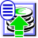
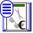
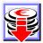

Manual de BulmaFact (Indice Completo)
- Gestión de Clientes
- Proveedores
-
-
- Arbol de Familias.
-
- Proceso de Compras.
- Proceso de Ventas.
- Enlace con la Contabilidad.
- Plugins
- Plugins Pre-Instalados
- Otros plugins Disponibles
- Apéndice de Iconos
INTRODUCCIÓN A BULMAGÉS
BulmaGés es una aplicación modular concebida como una herramienta completa de gestión empresarial que se compone de diferentes módulos: contabilidad (BulmaCont) Facturación (BulmaFact), TPV (BulmaTPV), etc. Cada uno de estos módulos están pensados para funcionar de forma conjunta, si bien pueden funcionar cada uno por separado sin necesitar la instalación o ejecución de los demás salvo en los casos lógicos de dependencia.
BulmaGés ofrece la máxima calidad de una completa herramienta de gestión integrada configurable para adaptarse a las necesidades de la empresa mediante un sistema de módulos y plugins en función del sector en el que se opere y el tamaño de la organización.
BulmaGés funciona sobre cualquier plataforma (Linux, Windows, etc.) y puede ser ejecutado en local y en remoto, sin límites de licencias, empresas o usuarios.
BulmaGés es también completamente configurable y adaptable gracias a su condición de GPL, lo que garantiza la máxima adaptabilidad y una mayor independencia informática de su empresa.
$page_title = "Título de página";
$page_color = "#CCCCCC";
include("header.php");
EL SELECTOR DE BULMAGÉS
Al iniciar BulmaGés, aparece un selector que permite seleccionar qué módulo utilizar. BulmaGés incluye, actualmente, dos módulos propios y operativos, BulmaCont, programa de contabilidad, y BulmaFact, programa de facturación.
BulmaGés no precisa instalar todas las aplicaciones que lo componen para funcionar ya que son independientes en ejecución. Pero si se utiliza con todos sus módulos, BulmaGés los coordina para compartir y traspasar datos automáticamente de unos a otros. Por ejemplo, la emisión de facturas en BulmaFact puede convertirse directamente en entradas en asientos contables de BulmaCont, con lo que no habría que repetir el proceso manualmente.
EL ICONO DE BULMAFACT
Para arrancar el programa de BulmaFact debe pulsar sobre el icono con el logo del programa BulmaFact, situado en la primera fila a la izquierda.
Tras seleccionar BulmaFact, aparecerá el Selector de Empresa.
El Selector de Empresa le permite seleccionar la empresa con la cual desea trabajar. Recordemos que BulmaFact es multiempresa y multiusuario, por lo que puede contener varias empresas operativas. Además, para ejecutar el programa puede establecerse un sistema de usuarios y contraseñas que permitan un acceso multinivel.
El Selector consiste en una pantalla que incluye el nombre que se le haya proporcionado a la empresa, el nombre de la base de datos en la cual se guardan los datos relativos a la empresa y la tipología de la base de datos, refiriéndose al programa que lo originó. Puede asegurarse de que ve todas las empresas disponibles pulsando el icono “Actualizar”, para que el programa consulte a con la base de datos y le ofrezca la información más reciente. Todo esto será posible siempre que la empresa que se vaya a seleccionar haya sido creada anteriormente. Puede cambiar de empresa tantas veces como desee siempre que no esté a la mitad del proceso de introducción de datos.
Si desea cambiar de empresa mientras está ejecutando BulmaFact sólo tiene que cerrar la aplicación y volver al selector para seleccionar un usuario o empresa diferentes. También puede tener varias empresas operativas a la vez mediante la ejecución simultánea de varios programas.
Para comenzar a utilizar BulmaFact es imprescindible abrir una empresa. El programa preguntará por el login y el password del usuario, si es que se han creado varios en su instalación, o cargará el usuario por defecto si sólo se ha creado uno.
EL ADMINISTRADOR DE OPCIONES
Desde el Selector, puede administrar las empresas operativas en BulmaGés utilizando los inconos de configuración que encontrará en la parte superior izquierda.
Mediante el icono de “Seleccionar Empresa”
situado en la parte inferior izquierda del selector puede seleccionar
una empresa para posteriormente acceder a los parámetros de
configuración
de BulmaGés y a las acciones más importantes con respecto a la gestión
de empresas introducidas en cada uno de los programas que lo conforman.
SELECCIONAR UNA EMPRESA PARA OPCIONES DE ADMINISTRACIÓN
Pulsando el icono de “Seleccionar Empresa” situado en la parte inferior izquierda del selector puede seleccionar una empresa para acceder a los parámetros de configuración. Si por ejemplo, la empresa corresponde a Facturación en BulmaFact, es importante que se fije en que el Tipo del Archivo corresponda con el Programa BulmaFact.
Al pulsar sobre el icono de Selección, le aparecerá el listado total de las empresas introducidas en BulmaGés independientemente del programa o ejercicio al que se refieran. Este listado le ofrecerá los siguientes datos:
- Nombre: nombre de la empresa
- Año: ejercicio al que se refiere
- Archivo: nombre del archivo en la base de datos
- Tipo: programa al que se refiere el archivo
Una vez seleccionada la empresa puede pulsar sobre el icono de configuración para que aparezca la ventana de opciones de configuración de empresa.
Esta ventana contiene una pestaña por cada aplicación que incluye (BulmaCont, BulmaFact, etc.) Dentro de cada una de ellas puede encontrar las opciones específicas de cada programa. Recuerde que si no ha seleccionado previamente una empresa, no podrá realizar los cambios que desea.
PESTAÑA DE ADMINISTRADOR DE OPCIONES PARA EMPRESAS DE FACTURACIÓN
Estas opciones le permiten modificar las empresas de BulmaFact existentes, borrarlas y sustituirlas por otras. Asegúrese bien de que está realizando todos los pasos correctamente antes de terminar cada proceso ya que, una vez modificadas o eliminadas las empresas, no podrá volver a la configuración inicial. Por este mismo motivo, le recomendamos que realice una copia de seguridad completa antes de trabajar con estas opciones.
CREAR Y BORRAR EMPRESAS DE FACTURACIÓN
CREAR NUEVA EMPRESA
Permite añadir una nueva empresa de facturación asociada a BulmaFact. Al crear una nueva empresa, el programa solicita el nombre de la empresa, el nombre del archivo de la base de datos que la va a contener y el ejercicio o año en el que se va a operar.
El programa creará automáticamente la empresa. Pulse el botón “Salir” y actualice la lista de empresas en el “Selector de Empresa”. La empresa estará completamente operativa
La creación de una empresa implica la creación de una base de datos nueva. Por lo tanto, el usuario que ejecuta el programa debe tener privilegios para crear bases de datos en postgres.
BORRAR EMPRESA
Le permite borrar una empresa existente de forma definitiva, incluyendo todos los datos que se hayan introducido hasta el momento. Para borrar seleccione la opción opción “Borrar Empresa”. El programa le preguntará si realmente desea borrarla y, al aceptar, la empresa quedaRÁ borrada automáticamente. Salga de los Parámetros de Configuración, actualice el listado de empresas en el selector y esta ya no se mostrará en él.
CREAR Y RESTAURAR COPIAS DE SEGURIDAD DE FACTURACIÓN
HACER COPIA DE SEGURIDAD (BACKUP)
Permite hacer una copia de seguridad de la empresa activa. Al pulsar sobre el botón “Copia de Seguridad” se abrirá una ventana de exploración de archivos para que seleccione la ubicación del archivo de copia. Este archivo se guardará con extensión: .pgdump
La totalidad de los datos introducidos hasta el momento en la base de datos de esa empresa se guardarán en un archivo en la ubicación que se indique.
RESTAURAR COPIA DE SEGURIDAD (RESTORE)
Opción para restaurar una copia de seguridad realizada anteriormente de la empresa seleccionada. Esta opción también puede servir para importar los datos de una empresa almacenados en archivo. Al pulsar el botón, aparecerá una ventana de exploración de archivos. Una vez haya encontrado el archivo que desee restaurar, pulse sobre el botón “Abrir” o “Aceptar”. Recuerde que los archivos con copias de seguridad de BulmaFact llevan la extensión .pgdump
IMPORTAR Y EXPORTAR DATOS DE FACTURACIÓN
IMPOTAR /EXPORTAR DATOS
Le permite introducir o extraer de forma automática los datos, bien de otras aplicaciones hacia BulmaFact o bien desde BulmaFact hacia otras aplicaciones.
Si tiene problemas con este proceso, no dude en consultar con nuestros asesores técnicos.
INTRODUCCIÓN A BULMAFACT
BulmaFact es el programa principal de facturación incluido en BulmaGés. BulmaFact es un Software de Facturación desarrollado en código abierto para la gestión comercial de la empresa, que recoge las tareas de facturación controlando todo el proceso, tanto de proveedor como de cliente.
El programa está diseñado pensando el el usuario final. Intenta que la mayoría de las tareas relacionadas con la facturación sean completamente accesibles y fáciles de llevar a término mediante un sistema muy intuitivo de utilización. BulmaFact ofrece una interface amigable y totalmente configurable con la que se pretende facilitar la compresión del programa, facilitar el entorno de trabajo y confundir lo menos posible al usuario, permitiendo que opciones susceptibles de no ser utilizadas puedan desaparecer de la pantalla.
Al mismo tiempo, BulmaFact realiza todas las tareas propias de un programa de facturación que podrían surgir en una empresa, sin importar su tamaño o la gestión que realicen. El objetivo es que el programa sea lo más completo posible, para que luego el usuario final decida qué quiere utilizar y qué no, pero sin prescindir de ninguna opción en el resultado final. Para ello se utiliza un sencillo sistema de Plugins que dotan al programa de opciones específicas.
PRIMEROS PASOS CON BULMAFACT: LA PANTALLA PRINCIPAL
La pantalla principal de BulmaFact le ofrece, en su parte superior, las opciones generales del programa en tres modalidades: el menú principal, la barra de acceso rápido inferior compuesta de iconos y el Indexador situado en el lateral izquierdo. Dentro de la pantalla general se abren las pantallas correspondientes a las opciones específicas del programa. Por ejemplo, la pantalla de Gestión de Clientes, Listado de Presupuestos, etc.)
Puede abrir tantas pantallas como desee ya que estás se irán superponiendo unas a otras como en cualquier sistema de gestión de ventanas. Para gestionarlas y colocarlas en primer plano o volver a abrirlas, puede consultar el Indexador, donde aparece el icono y el título de cada pantalla.
ALGUNOS APUNTES SOBRE LA UTILIZACIÓN CORRECTA DEL PROGRAMA
La función principal de BulmaFact es facilitar la gestión administrativa del proceso de compra-venta en una empresa o institución. Para ello, dispone de varias herramientas que no limitan el programa a la mera emisión de documentos. Desde BulmaFact podrá gestionar tanto Clientes como Proveedores, incluyendo los servicios y mercancías que utilice en sus relaciones comerciales.
Cada uno de los elementos que conforman el proceso de compra-venta (Gestión de Cobor y Pagos, Presupuestos, Gestión de Stock, Albaranes, Facturas, etc.) puede funcionar de forma independiente, sin necesitar de la existencia de los otros. Sin embargo, para un correcto funcionamiento del programa y para obtener el máximo rendimiento del mismo, le aconsejamos que siga el proceso lógico desde el Presupuesto a la Factura, generando cada nuevo documento partiendo del documento anterior. De esta forma, el programa podrá asignar a todos los documentos relativos a un cliente y un concepto concreto una referencia y una relación que facilitará, posteriormente, el seguimiento de pedidos, ventas y clientes y la elaboración de informes.
Es decir, si un cliente aprueba un Presupuesto, no cree un nuevo documento de Pedido, aún incluso si hay cambios de un documento a otro. Lo correcto sería pasar ese Presupuesto a pedido, con la misma referencia, y realizar las modificaciones oportunas sobre el Pedido dejando el Presupuesto tal y como lo envió. De esta forma, al terminar el proceso de venta, una vez facturado el material/servicio, podrá comprobar con un sólo informe qué se presupuestó, qué se pidió, que se sirvió al cliente y qué se facturó, así como los pagos realizados o las previsiones de cobros. También podrá comprobar de forma sencilla el tiempo que ha pasado de uno a otro documento, obteniendo así, por ejemplo, una muestra de la efectividad del servicio de proceso de pedidos de su empresa.
Además, este mismo seguimiento le permitirá una correcta gestión de cobros y pagos que, posteriormente facilitará el intercambio de datos entre su programa de facturación (BulmaFact) y su programa de contabilidad (BulmaCont) así como entre otras aplicaciones.
GENERALIDADES SOBRE FORMULARIOS
Cada uno de los listados que se ofrecen en BulmaFact es totalmente configurable, tanto en su vista por pantalla como en la impresión.
SELECCIÓN DE CAMPOS
Para que el programa le muestre en los listados sólo los datos que le interesan en cada momento, puede utilizar el Configurador de Subformularios, que consiste en un selector de los campos a mostrar en los elementos del listado.
Para mostrar el Configurador de Subformularios vaya al Menú de Acciones del listado y pulse sobre la Llave Inglesa. En la parte inferior izquierda del listado aparecerá una nueva ventana con el Configurador. En la primera pestaña, puede seleccionar los campos que desea mostrar simplemente dejándolos marcados. Si los desmarca, estos campos dejarán de mostrarse por pantalla. Antes de cerrar el configurador, debe presionar la opción “Aplicar” para que se apliquen los campos al listado.
Si desea realizar una impresión del listado, recuerde que sólo aparecerán impresos los campos marcados en el Configurador de Subformularios.
Dependiendo del listado que esté modificando, podrá encontrar unos campos u otros. Para consultar los campos disponibles en cada listado, por favor lea las especificaciones de cada uno de ellos en el manual.
PAGINACIÓN DE LISTADOS
Los listados, por motivos de rendimiento o comodidad, pueden estar divididos en múltiples páginas con un numero determinado de elementos. Mediante la pestaña de Paginación puede controlar tanto el número de elementos que se muestran por página como la página que desee ver.
CONSULTA SQL
Esta opción es para usuarios avanzados y programadores. Permite ver la consulta SQL que genera el listado. De esta forma un usuario experto puede modificar la consulta y generar el listado que más se ajuste a sus necesidades. Esta opción puede incurrir en problemas de seguridad o perdida de datos si no se utiliza con la debida cautela.
GENERALIDADES SOBRE BOTONES
En todos los programas integrados en BulmaGés existen varios botones que se repiten en prácticamente todas las ventanas. La utilización de los mismos iconos en todos los procesos que implican una misma acción simplifican el uso del programa y facilitan la tarea del usuario.
Su icono y significado quedan reflejados en esta tabla:
ICONO |
NOMBRE |
 |
Nuevo: Indica la creación de un nuevo elemento. |
 |
Eliminar: Implica la eliminación de uno o varios elementos. |
 |
Editar: Permite la edición de uno o varios elementos. |
| Actualizar: Actualiza los datos de un listado. | |
| Filtrar: Mostrar las opciones de filtrado para un listado. | |
| Configurar: Mostrar las opciones de configuración para un listado. | |
| Importar: Importar datos desde un archivo o entidad externa. | |
 |
Exportar: Exportar los datos hacia un archivo o entidad externa. |
 |
Imprimir: Obtener una versión impresa o para imprimir. |
PROPIEDADES DE LA EMPRESA
Esta opción aparece en la primera opción del menú superior: Empresa. Esta opción permite consultar y modificar los parámetros especificados para la empresa activa (con la que se ha ejecutado el programa y con la que se trabajará para la facturación). Estos datos serán los que se muestren después en los documentos, como el NIF, la dirección, etc.
Observará que aparece una ventana en la que se presentan numerosas filas y dos columnas: “Nombre” y “Valor”. Sólo podrá modificar los datos contenidos en la columna “Valor” ya que la columna “nombre” viene definida por los datos contenidos en la Base de Datos del programa. Si desea cambiar, eliminiar o aladir algún parámetro en esta serie, por favor póngase en contacto con nosotros a través de su comercial o mediante la Asistencia On-Line.
No cambie ningún dato si no está seguro de ello o no conoce el resultado, ya que podría afectar al correcto funcionamiento del programa.
Observará que algunos datos vienen especificados por defecto. Otros en cambio permanecen con la palabra CAMBIAME Estos datos son los que puede modificar sin que surja posteriormente un problema grave. Si desea dejar algún dato sin rellenar, puede dejarlo en blanco o con la palabra CAMBIAME y el programa los ignorará en su funcionamiento siempre que no sea de vital importancia para la correcta marcha del software.
Si desea cambiar un dato, simplemente coloque el cursor en la casilla que quiera modificar y escriba sobre ella. Después, pulse aceptar para cerrar la pantalla y que sus datos sean guardados. Pulse cancelar su desea salir sin guardar los datos.
PRINCIPALES DATOS DE LA CONFIGURACIÓN
- Escalera Forma parte de la dirección de la empresa operadora.
- NombreVia Parte de la dirección de la empresa operadora.
- NumeroVia Parte de la dirección de la empresa operadora.
- Piso Parte de la dirección de la empresa operadora.
- ProgramaContabilidad Programa de Contabilidad que se usa en conjunción con esta Facturación (Normalmente BulmaCont)
- Puerta Parte de la dirección de la emrpesa operadora.
- Tipo Determina el tipo de la base de datos que estamos utilizando (BulmaFact o BulmaCont)
- CodCuenta No se utiliza
- CIF El numero de identificación de la empresa operadora.
- TipoVia Parte de la direccción de la empresa operadora.
- CodPostal Parte de la dirección de la empresa operadora.
- Municipio Parte de la dirección de la emrpesa operadora.
- Provincia Provincia de la empresa operadora.
- Pais Pais de la empresa operadora.
- NombreEmpresa Nombre Fiscal de la empresa operadora.
- AlmacenDefecto Almacén que se va a utiliza por defecto.
- DireccionCompleta Dirección de la empresa operadora.
- Ciudad Ciudad de la empresa operadora.
- CodArticuloGenerico Código del artículo que se va a utilizar como articulo generico en las operaciones.
- SerieFacturaDefecto Serie por defecto de la Facturación
- IRPF Porcentaje de IRPF que la empresa aplica. Si no se aplica dejar 0
- DatabaseRevision Numero de revisión aplicada sobre la base de datos.
ALMACENES
El acceso a la pantalla de almacenes se realiza mediante la opción del menu “Maestro→Almacenes“. Una vez pulsada dicha opción aparecerá en el área de trabajo una ventana con el listado de todos los almacenes con que cuenta la empresa. En este listado podrá controlar y gestionar los almacenes introducidos en dicha empresa.
La Gestión de Almacenes facilita la tarea de aquellas empresas que almacenan sus mercancías en diferentes ubicaciones. Puede crear tantos almacenes como desee o bien trabajar sólo con uno. De esta forma, podrá ubicar fácilmente los artículos en los inventarios o preparar recepciones de pedidos o entregas a clientes sin perder el control del almacenaje y salida del material.
BulmaFact no sólo ofrece la posibilidad de diferenciar el almacén con el que se trabaja a título informativo sino que además combina esta información con el control de stock e inventario de formas que el control de mercancías es exacto.
Para crear un nuevo almacén, sitúese en la última fila escrita y pulse la tecla Enter. El programa creará una fila en blanco. Seleccione esa fila y podrá editarla, de forma que pueda introducir los datos que desee para el nuevo almacén.
Para editar un almacén ya existente, pulse sobre la fila que lo contiene dos veces con el ratón. El programa le dejará modificar los datos que desee.
Pulse “Aceptar” para guardar los cambios y “Cancelar” para salir sin almacenar ningún dato nuevo.
FICHA DE TRABAJADORES
Para acceder a esta ventana puede utilizar la opcion de menu “Maestro→Trabajadores“.
Mediante esta opción puede dar de alta a los trabajadores de su empresa que desee relacionar con los documentos contenidos en el sistema. Después de darlos de alta podrá seleccionarlos en el desplegable que aparece en Pedidos, Albaranes o Facturas, por ejemplo.
La Ficha de Trabajadores se divide en dos secciones: el menú de la izquierda presenta un listado de los trabajadores ya introducidos. La sección de la derecha corresponde a los datos propios de cada trabajador. Pulse sobre un trabajador de la lista de la izquierda y podrá consultar sus datos. Si desea modificar estos datos, no tiene más que rectificar los existentes y pulsar la tecla “Guardar”. Los cambios quedarán almacenados. Si desea eliminar un trabajador, selecciónelo en la lista y pulse sobre el botón “eliminar”. Para introducir un nuevo trabajador, pulse sobre la opción de “Nuevo”, seleccione en el menú de la izquierda el “Nuevo Trabajador” e introduzca los datos que se solicitan:
- Nombre: Nombre del Trabajador
- Apellidos: Apellidos del Trabajador
- Teléfono: Teléfono de contacto habitual
- Teléfono Móvil: Teléfono Móvil del Trabajador
- Dirección: Dirección Postal
- E-mail: e-mail de contacto
- Nº de la Seguridad Social: Número asignado por la Seguridad Social
- Imagen: Puede adjuntar una foto del trabajador. Para ello pulse sobre el botón “Cambiar Imagen” y aparecerá una ventana de exploración de archivos. Seleccione el archivo correspondiente a la foto y quedará grabado en el sistema.
Marque la casilla “Activo” si el trabajador está actualmente trabajando en la empresa. Desmárquela si está inactivo, de baja o ha dejado de trabajar en ella.
Pulse la opción “Guardar” para que los datos queden guardados y, cuando haya terminado, cierre la ventana para salir de esta sección.
Si desea eliminar completamente un trabajador de la base de datos use el botón eliminar.
NOTA: No podrá eliminar un trabajador si éste está seleccionado en algún documento (presupuesto, pedido, albarán o factura) ya que de ser así el sistema sufriría una pérdida de información. El programa le mostrará un mensaje de error al intentar borrar un trabajador en esta situación.
Este mensaje ofrece toda la información necesaria para que un usuario avanzado en el manejo de la base de datos pueda localizar el problema y solucionarlo.
SELECTOR DE TRABAJADORES
Normalmente cuando introduce algún elemento en la facturación que representa un trabajador se le presentará la opción de trabajadores como un selector en el cual puede seleccionar el trabajador adecuado. Dicho selector se compone de los trabajadores activos en esta pestaña.
NOTA Si introduce un nuevo trabajador en la base de datos mientras está editando un documento (albarán, factura...) el selector de dicho documento no se actualizará automáticamente, por lo que no podrá seleccionar al nuevo trabajador. Cierre el documento y vuelva a abrirlo para que los datos del selector se actualicen.
PAÍSES, PROVINCIAS
Puede acceder a esta opción mediante el menu “Maestro→Países / Provincias”
Desde esta opción puede añadir al programa todos los países con sus respectivas provincias que desee que aparezcan en las diferentes fichas disponibles después, en el menú desplegable de País/Provincia de fichas como Cliente, Proveedor, Comercial, etc.
Para crear un nuevo País, presione sobre el botón de “Nuevo”. Aparecerá una línea en último lugar con dos guiones (–) y las palabras “Nuevo País”. En la ventana de Datos, sustituya “Nuevo País” por el nombre del país que desee añadir.
Si desea borrar un país, selecciónelo del listado y pulse el botón “borrar” EL país se borrará automáticamente.
Para editar un país basta con pulsar dos veces con el ratón sobre él. Cuando aparezcan los datos en la ventana derecha, pude cambiar los datos que desee.
Para crear una nueva provincia, seleccione primero el país al que pertenece. Edite el país y, escriba el nombre de la provincia en cualquiera de las filas libres disponibles. Si no encuentra ninguna fila libre, edite una provincia ya creada y pulse “enter”. Aparecerá entonces una nueva casilla en blanco donde podrá ubicar la nueva provincia.
Si desea borrar una provincia, selecciónela del listado y pulse el botón derecho. Seleccione “Borrar Registro”.
Para editar una provincia basta con pulsar dos veces con el ratón sobre ella. El puntero se convertirá en un cursor de texto y podrá escribir lo que desee.
No olvide presionar el botón de “Guardar” antes de cerrar la ventana.
TIPOS DE I.V.A.
Puede acceder a esta ventana a través del menú superior, pulsando sobre la opción “Maestro→Tipos de I.V.A.”
BulmaFact puede operar con diferentes tipos de I.V.A. para cada artículo o cliente. Para ello es necesario darlos de alta previamente en el sistema. Por defecto, BulmaGés ofrece el tipo de I.V.A. Normal, que representa una tasa de impuestos de 16%. Para artículos o servicios especiales puede definir sus propios tipos de I.V.A. y, al asociarlos a un artículo determinado, estos serán aplicados por defecto.
Puede crear tantos tipos de I.V.A. como desee. Para ello, sólo tiene que situarse en la última fila escrita y pulsar la tecla Enter. El programa creará una fila en blanco. Seleccione esa fila y podrá editarla, de forma que pueda introducir el nombre que quiera para ese tipo de I.V.A., como por ejemplo: Reducido, Exento, etc...
Para editar un tipo de I.V.A. ya existente, pulse sobre la fila que lo contiene dos veces con el ratón. El programa le dejará modificar el nombre asigando.
Pulse “Aceptar” para guardar los cambios y “Cancelar” para salir sin almacenar ningún dato nuevo.
Para asignar un valor a cada tipo de I.V.A., debe modificar la ventana de Tasas de I.V.A.
TASAS DE I.V.A.
Puede acceder a esta ventana a través del menú superior, pulsando sobre la opción “Maestro→Tasas de I.V.A.”
En esta ventana asignará un valor a los Tipos de I.V.A. previamente introducidos en el sistema (vea la sección “Tipos de I.V.A.”
Cada fila se compone de los siguientes campos:
- Tipo IVA: Seleccione del desplegable el tipo de I.V.A. que desee modificar
- Porcentaje IVA: Introduzca el tanto por ciento que debe asignarse a ese tipo en el siguiente formato: 0.00. Por ejemplo, para asignar un 16% escriba 16.0.
- Porcentaje Recargo de Equivalencia: Introduzca, si procede, el recargo de equivalencia en el formato: 0.00 Si no desea asignar ningún valor, simplemente deje el campo vacío.
- Fecha Entrada en Vigor: Escriba la fecha desde la que deben aplicarse los valores establecidos en el siguiente formato: DD/MM/AAAA Por ejemplo: 01/01/2007
Pulse “Aceptar” para salir y guardar los cambios en el programa o “Cancelar” si desea salir sin modificar los datos existentes.
SERIES DE FACTURA
Puede acceder a esta opción mediante el menú superior “Maestro→Series de Factura”
Las series de factura determinan la serie con la que se emiten las facturas. Puede crear tantas series diferentes como desee, por ejemplo una General para las facturas normales y una Rectificativa para las facturas de abono o negativas.
Para modificar las Series existentes, seleccione la casilla correspondiente y pulse dos veces con el ratón sobre ella. El Código consiste en una serie de letras, números o una combinación de ambos que aparecerán después al lado del número de factura referida a esa serie. La Descripción es una aclaración interna sobre la serie a la que se refiere esa serie. Por ejemplo:
Código: S1-2007 Descripción: Serie Primera del Año 2007
Para crear una nueva serie, sitúese en la última fila escrita y pulse la tecla Enter. El programa creará una fila en blanco. Seleccione esa fila y podrá editarla, de forma que pueda introducir lel nombre que desee para la nueva serie.
Pulse “Aceptar” para guardar los cambios y “Cancelar” para salir sin almacenar ningún dato nuevo.
FORMAS DE PAGO
Puede acceder a esta opción mediante el menú superior, pulsando sobre la opción “Maestro→Formas de Pago”
En esta opción puede introducir, modificar y eliminar sus formas de cobro y pago habituales con las que posteriormente operará el sistema.
La ficha de Formas de Pago se divide en dos secciones:
- Un menú en la parte izquierda con el listado de las Formas de Pago ya introducidas en el sistema.
- El área informativa en la parte derecha de la ventana donde encontrará la información de cada Forma de Pago.
Las formas de pago pueden asociarse después a cada documento y a cada proveedor o cliente, de forma que ofrecen una información muy valiosa a la hora de controlar los Cobros y Pagos.
Para crear una forma de pago nueva, presione el botón “Crear” y rellene los datos del formulario:
- Nombre de la Forma de Pago: Elija un nombre como, por ejemplo: “Contado”, “Caja”, “Domiciliación Bancaria”, etc.
- Plazo entre Recibos (Días): Total de días naturales que deben pasar entre un recibo y otro.
- Número de Plazo: Número de plazos en los que se debe cobrar el recibo.
- Descuento: Descuento aplicable si procede.
- Plazo Primer Recibo (Días): Días naturales que deben transcurrir desde la emisión de la factura y la emisión del primer recibo.
- Tipo Plazo entre Recibos: Nombre del plazo, como Quincenal o Mensual.
- Tipo Plazo Primer Pago: Puede que el primer pago no sea igual que los siguientes, especifique aquí esa información.
Para editar una forma de pago existente, selecciónela de la lista y después modifique los datos y pulse sobre el botón “Guardar”
NUEVO CLIENTE
La gestión y control de Clientes es indispensable para la emisión de Facturas ya que no es posible introducir los datos de los clientes a mano en cada Factura. Por eso, le recomendamos que cree todos los clientes que necesite antes de utilizar el programa. Si aún no tiene esa información, deberá crear el cliente en el momento en que vaya a emitir un documento.
Una vez tenga una buena base de datos de clientes, le resultarán mucho más sencillas tareas como la emisión de Facturas o conocer cuánto dinero debe un cliente. Simplemente con seleccionarlo de la lista, BulmaFact se encargará de reunir toda esta información para usted.
Para introducir en la base de datos de BulmaFact un nuevo cliente, puede hacerlo directamente desde el Listado de Clientes o a través de la opción “Nuevo Cliente” situada en el menú superior, en la opción “Maestro”.
Una vez que haya abierto la ficha del nuevo cliente, rellene los datos generales de información del cliente:
- C.I.F./N.I.F: Introduzca el número de identificación fiscal correspondiente.
- Nombre Completo: Introduzca el nombre fiscal del cliente.
- Empresa: Introduzca el nombre de la corporación a la que pertenece el cliente.
- Nombre Comercial: Introduzca el nombre comercial del cliente.
- Dirección, Código Postal, Población: Introduzca los datos de dirección postal del cliente
- Provincia: Seleccione la Provincia de la lista desplegable.
- Teléfono Fijo: Introduzca el teléfono de contacto del cliente.
- Teléfono del Trabajo: Introduzca un segundo teléfono de contacto del cliente.
- Número de Fax: Escriba el número de fax del cliente.
- Forma de Pago: Seleccione la forma de pago habitual para el cliente.
- Aplicar Recargo de Equivalencia: Marque esta casilla si debe aplicar el Recargo de Equivalencia al cliente.
- Régimen Fiscal: Seleccione el tipo de Régimen Fiscal que debe aplicar al cliente: Normal, Intracomunitario o Extracomunitario.
- Página Web: Introduzca aquí la url del cliente en formato: http://www.iglues.org
- E-mail: Escriba el e-mail de contacto del cliente de la siguiente forma:info@iglues.org
- Comentarios: Añada los comentarios privados que desee para este cliente, como la fecha de cobro habitual o su horario.
- Datos de Comercio Electrónico: Puede utilizar este espacio para especificar los datos de comercio electrónico que haya asignado a este cliente, como su nombre de usuario y clave de acceso.
- Datos Bancarios: Escriba la cuenta corriente donde realiza los cobros al cliente.
1. PESTAÑAS DE LA FICHA CLIENTES
1.1 PESTAÑA PEDIDOS
En esta pestaña encontrará un listado de pedidos sólo de este cliente. Constituye un histórico de operaciones. Desde ella, no sólo puede consultar, modificar y eliminar pedidos ya existentes, sino que también puede crear pedidos nuevos.
1.2 PESTAÑA ALBARANES
Esta pestaña le mostrará un listado de albaranes específico del cliente donde podrá crear, editar o eliminar cualquiera de los documentos creados para ese cliente.
1.3 PESTAÑA FACTURAS
Esta pestaña le mostrará un listado de facturas emitidas a este cliente donde podrá crear, editar o eliminar cualquiera de los documentos existentes.
1.4 PESTAÑA COBROS
La pestaña de Cobros le muestra un listado de los pagos realizados hasta la fecha a un cliente específico. Puede editar, crear y eliminar los pagos específicos que desee.
1.5 OTRAS PESTAÑAS
En función de los plugins y programaciones específicas que haya añadido a BulmaFact, podrá ver más pestañas de las incluidas en este manual. Para conocer su funcionamiento, consulte los anexos del manual para esas secciones específicas.
2. MENÚ DE ACCIONES DE CLIENTE:
Cuando edite un Cliente, puede acceder a diversas opciones a través de los iconos colocados en la parte superior de la ventana.
PROVEEDORES
La gestión y control de Proveedores es indispensable para el control de stock y los informes de compras y ventas disponibles en BulmaFact así como para la gestión de Cobros y Pagos. Sin embargo no es necesario para el uso del programa, que puede funcionar perfectamente con el módulo exclusivo de ventas.
La Sección de Proveedores se presenta de la misma forma que la sección de Clientes y su funcionamiento es prácticamente el mismo. La diferencia está en la información introducida y en el tratamiento que se hace de esta información.
NUEVO PROVEEDOR
Para dar de alta un Proveedor, sólo tiene que pulsar el icono de “nuevo” en el listado de Proveedores o accediendo directamente desde la opción del menú “Maestro→Nuevo Proveedor”
Rellene los datos generales de información del Proveedor:
- C.I.F./N.I.F: Introduzca el número de identificación fiscal correspondiente.
- Código: Especifique un código para el Proveedor. Puede dejar este campo vacío, pero es muy útil si se desea cotejar los datos de contabilidad con los de facturación o utilizar BulmaFact y BulmaCont de forma conjunta.
- Nuestro Código de Cliente: Introduzca el código de cliente que le asignó el Proveedor al darle de alta.
- Nombre Empresa: Introduzca el nombre fiscal del Proveedor.
- Nombre: Introduzca un nombre para el Proveedor.
- Nombre Comercial: Introduzca el nombre comercial del Proveedor.
- División: Especifique la División del Proveedor con la que trata. Puede dejar este campo vacío si no lo necesita.
- Dirección, Código Postal, Población: Introduzca los datos de dirección postal del Proveedor.
- Provincia: Seleccione la Provincia de la lista desplegable.
- Teléfono: Introduzca el teléfono del Proveedor.
- Página Web: Introduzca aquí la url del Proveedor en formato: http://www.iglues.org
- Número de Fax: Escriba el número de fax del Proveedor.
- E-mail: Escriba el email de contacto del Proveedor de la siguiente forma: info@iglues.org
- IRPF que aplica: Escriba el IRPF que le aplica el Proveedor si procede. Puede dejar esta casilla vacía si no es indispensable.
- Forma de Pago: Seleccione la Forma de Pago Habitual del Proveedor para que aparezca después automáticamente seleccionada en los documentos que edite (Albarán, Factura...)
- Datos Bancarios: Escriba la cuenta corriente donde realiza los pagos al Proveedor.
- Régimen Fiscal: Seleccione el tipo de Régimen Fiscal que aplica: Normal, Intracomunitario o Extracomunitario.
- Recargo de Equivalencia: Marque esta opción si su Proveedor le aplica el Recargo de Equivalencia.
- Comentarios: Añada los comentario privados que desee para este Proveedor.
- Datos E-Comerce: Puede utilizar este espacio para especificar los datos de comercio electrónico de su Proveedor, como la url de su tienda online o su nombre de usuario y clave de acceso.
1. PESTAÑAS DE LA FICHA DE PROVEEDOR
1.1 PESTAÑA PEDIDOS
En esta pestaña encontrará un listado de pedidos sólo de este Proveedor. Constituye un histórico de operaciones. Desde ella, no sólo puede consultar, modificar y eliminar pedidos ya existentes, sino que también puede crear pedidos nuevos.
1.2 PESTAÑA ALBARANES
Esta pestaña le mostrará un listado de albaranes específico del Proveedor donde podrá crear, editar o eliminar cualquiera de los documentos creados para ese Proveedor.
1.3 PESTAÑA FACTURAS
Esta pestaña le mostrará un listado de facturas emitidas por este Proveedor donde podrá crear, editar o eliminar cualquiera de los documentos existentes.
1.4 PESTAÑA PAGOS
La pestaña de Pagos le muestra un listado de los pagos realizados hasta la fecha a un Proveedor específico. Puede editar, crear y eliminar los pagos específicos que desee.
1.5 OTRAS PESTAÑAS
En función de los plugins y programaciones específicas que haya añadido a BulmaFact, podrá ver más pestañas de las incluidas en este manual. Para conocer su funcionamiento, consulte los anexos del manual para esas secciones específicas.
2. MENÚ DE ACCIONES DE PROVEEDOR:
Cuando edite un Proveedor, puede acceder a diversas opciones a través de los iconos colocados en la parte superior de la ventana.
GESTIÓN DE ARTÍCULOS
BulmaFact puede funcionar de manera independiente o utilizando una Gestión Integrada. Esto significa que usted puede utilizar la facturación sin utilizar el sistema de Gestión Integrada de Artículos (Stock, Artículos Compuestos, catálogos, etc.) o puede utilizar todas las herramientas incorporadas para controlar y gestionar los artículos y servicios con los que opera habitualmente. El programa viene preparado para realizar la Gestión Integrada de Artículos por defecto, pero su uso puede simplificarse notablemente. Si desea ampliar las funcionalidades de la Gestión Integrada por motivos específicos, como por ejemplo la Gestión de Lotes o la Trazabilidad, puede ampliar las funcionalidades de BulmaFact instalando los plugins necesarios.
Si desea operar independientemente de la Gestión de Artículos no necesitará rellenar la mayor parte de la información que se solicita en la Ficha de Artículo, pero si lo que pretende es gestionar de forma completa y eficaz los artículos de lso que dispone, le recomendamos que desde el primer artículo complete todas las casillas disponibles de forma que, una vez que tenga el programa funcionando, pueda obtener información útil sobre el desarrollo de se actividad comercial, como el control de stock o la impresión de catálogos.
El uso del programa y la elección de la modalidad de gestión depende de las necesidades de la Empresa que lo utiliza pero si en cualquier momento quiere cambiar su modo de uso, no tendrá ningún problema, salvo el de rellenar las casillas vacías o, por el contrario, dejar de utilizarlas.
GESTIÓN DE FAMILIAS DE ARTÍCULOS
1. LA GESTIÓN DE FAMILIAS
Las familias corresponden a la división principal en que se agrupan los artículos. BulmaFact está preparado para tener múltiples familias que, a su vez, alberguen múltiples subfamilias.
Cuando aparece la ventana de “Listado de Familias”, su contenido aparece en forma de árbol, de forma que pueda diferenciar fácilmente la familia principal y las subfamilias que dependan de ella.
El Listado de Familias le muestra todas las familias y subfamilias creadas en el programa, tengan o no artículos incluidos en ellas.
Cuando selecciona una familia, sin hacer doble clic en ella, aparece en la parte inferior del listado el “Contenido de la Familia”, que le muestra la siguiente información:
- Nombre: Nombre completo que identifique a la familia.
- Código: El código específico de esa familia/subfamilia.
- Código Completo: Código completo de esa familia/subfamilia incluyendo todos los niveles superiores a ella.
- Descripción: Descripción completa de la familia.
- Tipo de Artículo: Muestra si los productos que va a crear dentro de esta familia pertenecen a la rama de “Productos” o “Servicios”
2. CREANDO NUEVAS FAMILIAS
Para crear una nueva familia, coloque el ratón en el nivel en que quiere que se sitúe y pulse después sobre el icono de “Nuevo” representado por un folio en blanco. En el caso de que sea una nueva familia independiente, presione directamente sobre el botón de “Nuevo” sin seleccionar ningún elemento.
Al crear una nueva familia, verá que aparece un nuevo elemento en la ventana denominado “NUEVA FAMILIA” con los campos vacíos o con datos hipotéticos, como XXX. Para adaptar estos datos a sus preferencias, como el nombre o el código, debe proceder a editar este nuevo elemento.
3. EDITANDO FAMILIAS
Para modificar una familia ya existente, selecciónela de la lista y modifique los datos pertinentes aparecidos en la parte inferior del listado. Después, pulse el botón “Guardar” . La familia quedará modificada.
Recuerde que al crear subfamilias estas deben llevar, en el campo de código completo, el código de las familias que la preceden.
Los datos que puede modificar aparecen en la parte inferior del listado. BulmaFact le pedirá la siguiente información:
- Nombre: Nombre completo que identifique a la familia. Puede utilizar cualquier nombre y cambiarlo cuantas veces quiera.
- Código: El código específico de esa familia/subfamilia. Para más información con respecto al código, por favor consulte el anexo situado al final de esta sección.
- Código Completo: Código completo de esa familia/subfamilia incluyendo todos los niveles superiores a ella. Para más información con respecto al código, por favor consulte el anexo situado al final de esta sección.
- Descripción: Si lo desea, puede introducir una descripción de la familia para ampliar más información sobre ella.
- Tipo de Artículo: Muestra si los productos que va a crear dentro de esta familia pertenecen a la rama de “Productos” o “Servicios”
4. ELIMINANDO FAMILIAS
En el caso de que quiera eliminar una familia, selecciónela de la lista y pulse el botón “Eliminar” . BulmaFact no le permitirá borrar familias que tengan asociadas subfamilias o artículos. Antes, deberá borrar todos los elementos que integran para no generar errores en el funcionamiento del programa.
5. IMPRIMIENDO EL LISTADO DE FAMILIAS
Puede imprimir el listado de familias mediante la opción “Imprimir” PDF que podrá imprimir, guardar o enviar por correo electrónico.
CONSIDERACIONES SOBRE CÓDIGOS DE FAMILIAS
Cada Familia tiene un código específico que puede estar formado por letras, números o una combinación de ambos (utilizando dos caracteres).
Cada subfamilia se compone también de una combinación de letras o números de forma que, el resultado final, sea la combinación de todas las letras y números que forman esa cadena. Por ejemplo:
- Ejemplo 1:
- FAMILIA: Lácteos (**LA**) - SUBFAMILIA 1: Yogures: (**YO**) - SUBFAMILIA 2: Yogures de Frutas (**FR**) * CÓDIGO COMPLETO DE LA CADENA: **LAYOFR**
Este sistema le resultará muy útil cuando añada, al final de la cadena, el código del artículo. De esta forma, por ejemplo, cuando tenga que insertar artículos en elementos editables (pedidos, albaranes, facturas, etc.) podrá hacerlo rápidamente utilizando reglas mnemotécnicas sin necesidad de abrir la ventana correspondiente al listado de artículos.
Ejemplo 2:
**LAYOFRPI:** Lácteos, Yogures, Yogures de Frutas, Piña. ** 010203:** Familia 01, Subfamilia 02; Artículo número 03
TIPOS DE ARTÍCULO
1. INTRODUCCIÓN
Para acceder a esa sección, vaya al menú superior “Artículos→Tipos de Artículo“.
En esta sección puede definir diferentes tipologías para después catalogar los artículos que haya creado en el Listado de Artículos. Puede crear todos los tipos que desee o puede no utilizar esta característica si no la considera necesaria.
Esta asignación de “Tipo” es meramente informativa y no afecta al artículo en sí, pero resulta muy útil como complemento si necesita distinguir varios artículos entre sí como, por ejemplo, “Perecederos”, “No Perecederos”, “Conservar en Frío”, “Tallas Especiales”, etc.
Para asociar un Tipo de Artículo a un Artículo deberá hacerlo directamente desde la Ficha de Artículo correspondiente.
Para utilizarlo, una vez abierta la ventana, observará que se divide en tres partes:
- 1. Menú de Acciones de Ventana
- 2. Listado de Tipos de Artículos
- 3. Área de Información Detallada
1.1 MENÚ DE ACCIONES DE VENTANA
Desde este área podrá acceder a las acciones permitidas sobre el listado de Tipos de Artículos:
1.2 LISTADO DE TIPOS DE ARTÍCULOS
El Listado de Tipos de Artículos muestra la totalidad de Tipos de Artículos creados en BulmaFact. Podrá ordenarlos según sus preferencias pulsando en el título de cada columna. Si pulsa otra vez, utilizará el mismo criterio de ordenación pero en sentido descendente.
Para consultar un tipo de artículo determinado, selecciónelo en la lista pulsando sobre él con el ratón.
1.3 ÁREA DE INFORMACIÓN DETALLADA
En el Área inferior de la pantalla puede conocer la información detallada del Tipo de Artículo seleccionado en el Listado. Aqui puede encontrar la siguiente información:
- Código: El código asignado al Tipo de Artículo (no confundir con el Código del Artículo ya que son conceptos totalmente independientes.
- Descripción: La descripción del Tipo de Artículo que introdujo cuando creó el Tipo. Esta descripción sirve a nivel informativo para ampliar más detalles sobre el Tipo de Artículo.
2. CREAR UN NUEVO TIPO DE ARTÍCULO
Para crear un nuevo Tipo de Artículo pulse sobre el icono de “Nuevo” en el Menú de Acciones de Ventana. Aparecerá un nuevo elemento en el listado con código XXXXXX y descripción: Descripción del Tipo.
Selecciónelo de la lista y rellene los campos del Área de Información Detallada sustituyendo los textos estándar por los que usted quiera poner.
No olvide Presionar el botón Guardar del Menú de Acciones de Ventana antes de cerrar para no perder los cambios realizados.
3. EDITANDO TIPOS DE ARTÍCULOS
Para editar un Tipo de Artículo primero tiene que seleccionarlo en el Listado de Tipos de Artículos. Cuando lo tenga seleccionado, cambie los datos que aparecen en el Área de Información Detallada.
No olvide Presionar el botón Guardar del Menú de Acciones de Ventana antes de cerrar para no perder los cambios realizados.
Si lo que desea es eliminar un Tipo de Artículo, una vez seleccionado de la lista, pulse sobre el botón “Eliminar” en el Menú de Acciones de Ventana. El progrma le preguntará si realmente desea eliminar ese Tipo. Si contesta Aceptar, el tipo quedará eliminado de la Lista. Si contesta Cancelar, el Tipo permancerá como estaba antes.
IMPORTANTE: No podrá eliminar Tipos de Artículos que estén asociados a Artículos. Primero tendrá que desasiciar todos los artículos correspondientes y después ya lo podrá eliminar.
FICHA DE ARTÍCULO
Puede acceder a la ficha de articulo de diversas formas:
- Mediante la opción del menu superior “Articulos→Nuevo Articulo”
1. CREACIÓN DE NUEVOS ARTÍCULOS
Mediante esta opción del menú superior puede crear nuevos Artículos. También puede hacerlo desde el Listado General de Artículos pulsando sobre el botón de “Nuevo”. Puede introducir tantos artículos en BulmaFact como necesite. La principal diferencia entre artículos es el código que los define, por lo que puede tener varios artículos con denominaciones idénticas siempre y cuando su código sea diferente.
1.1 PESTAÑA DATOS GENERALES
Al crear un artículo nuevo, aparecen los siguientes campos:
- Código Completo: No rellene este campo, el programa lo hará automáticamente cuando guarde el artículo.
- Familia: Introduzca el código completo de la familia a la que pertenecerá el artículo. No olvide añadir, si es preciso, los subcódigos de las familias correspondientes. Para más información sobre los códigos, consulte las Consideraciones sobre codigos de Familia
- Subcódigo: Introduzca el código específico del artículo.
- Descripción: Introduzca la descripción del artículo. Esta será la descripción que aparezca en los distintos documentos que genera el programa (Presupuestos, Facturas, Listados, etc.)
- Tipo de Artículo: Seleccione de la lista la tipología de artículo (producto, servicio, etc.) Para ello deberá haber determinado con anterioridad los tipos de artículos que va a utilizar. Si no va a utilizar este campo, puede dejarlo vacío.
- Nombre del Artículo: Escriba el nombre completo del artículo.
- Texto para la Etiqueta: Introduzca un nombre corto para imprimir en etiquetas.
- Tipo de IVA: Especifique el tipo de IVA que por defecto se aplicará a ese artículo en concreto.
- PVP Sin IVA: Introduzca el precio del artículo sin IVA. Este campo no puede quedar en 0.
- Incluir en Catálogo: Seleccione esta casilla si desea que se incluya el artículo al imprimir el catálogo general de artículos.
- Control de Stock: Marque esta casilla si desea que BulmaFact controle el stock de este artículo mediante los albaranes de Proveedores y Clientes.
- Cambiar Imagen: Esta opción le permite asociar una imagen a un artículo determinado. Si desea introducir una imagen o cambiar la existente, sólo debe pulsar encima y aparecerá una ventana que le permitirá buscar la imagen en su disco duro local.
El programa sólo admite imágenes en jpg. Esta imagen aparecerá cada vez que edite el artículo y, si ha seleccionado la opción de Incluir en Detalles, también cuando imprima presupuestos.
1.2 PESTAÑA COMPONENTES
Esta pestaña se utiliza en el caso de que un artículo se componga de varios, pero se venda como un solo producto final. Por ejemplo un Pack de Belleza que contenga Champú, Gel y Colonia. Gracias a la Pestaña Componentes puede controlar tanto el stock del producto final como el stock de cada uno de los artículos que lo componen. Para ello, debe introducir los datos del Producto Compuesto en la Pestaña de Datos Generales y los datos específicos de cada producto que lo componga en la Pestaña de Componentes. Los campos que debe rellenar son los siguientes:
- Código Completo Componente: Introduzca o seleccione de la lista el código completo del artículo deseado.
- Nombre Componente: Este campo se rellena por defecto cuando selecciona un código de artículo.
- Cantidad: La cantidad por defecto es 1, pero puede seleccionar la cantidad que desee.
- ID Componente: No puede modificar este campo. BulmaFact lo rellena por defecto como identificador del componente en la Base de Datos.
- ID Artículo: No puede modificar este campo. BulmaFact lo rellena por defecto como identificador del componente en la Base de Datos.
Recuerde que, cada vez que venda o compre un artículo compuesto por componentes, también aumentará o disminuirá el stock de los artículos que lo componen por separado siempre que cree el Albarán correspondiente.
1.3 PESTAÑA DESCRIPCIÓN
Utilice este campo para escribir una breve descripción con las características del artículo o condiciones específicas de éste. Esta descripción se imprimirá cuando imprima el presupuesto si ha marcado la casilla “Incluir en Catálogo”.
1.4 OTRAS PESTAÑAS
En función de los plugins y programaciones específicas que haya añadido a BulmaFact, podrá ver más pestañas de las incluidas en este manual. Para conocer su funcionamiento, consulte los anexos del manual para esas secciones específicas.
2 MENÚ DE ACCIONES DE VENTANA
Desde este área podrá acceder a las acciones permitidas sobre el listado de Tipos de Artículos:
INVENTARIOS Y CONTROL DE STOCK
BulmaFact lleva un completo control de stock en función de las operaciones que se realizan en el programa. Cada vez que se introduce un nuevo albarán de proveedor, el programa añade los artículos contenidos en ese albarán al stock. De la misma forma, cada vez que se emite un albarán a cliente, el programa resta los artículos contenidos del stock actual. De esta forma, el stock siempre está actualizado.
La pantalla de Inventario sirve para regularizar el stock y cotejar el contenido en el programa con el stock real. Puede realizar un inventario tantas veces como desee, así como regularizaciones de stock. Para ello, acceda al listado de inventarios desde la opción del menú “Artículos”. Una vez allí, encontrará los inventarios realizados anteriormente (en caso de que ya haya realizado algunos) y podrá consultarlos.
Para crear un nuevo inventario, pulse la opción “nuevo” y aparecerá la siguiente ventana:
- Descripción: Asigne una descripción para identificar el inventario.
- Fecha de Creación: Introduzca la fecha en la que realiza el inventario
Por defecto, el inventario se guardará con la fecha actual.
Al crear un inventario, puede elegir entre modificar sólo determinados artículos o modificarlos todos. Para modificar artículos específicos introduzca el código del artículo en el campo correspondiente o presione la combinación de teclas asterisco (*) y control (Ctrl) BulmaFact rellenará por defecto todos los campos excepto el correspondiente a Stock Nuevo. Es en este campo en dónde deberá introducir el stock real del artículo. Al guardar el inventario, BulmaFact sustituirá el stock anterior (el que tenía registrado antes de realizar el inventario) por el stock nuevo (el que usted ha introducido en la casilla de “Stock Nuevo”).
Si lo que desea es realizar un stock inventario general de todos los artículos existentes en el programa, no necesita introducirlos uno a uno. Puede presionar el botón situado en la parte superior derecha del inventario denominado “Pregenerar Inventario” y BulmaFact le generará un inventario con todos los artículos y su stock actual sobre el que podrá modificar lo que desee.
PEDIDOS A PROVEEDORES
Para acceder al listado de pedidos tiene varias opciones:
- A través del menú superior “Compras→Nuevo Pedido a Proveedor“.
Esta es la ventana de pedido a proveedor:
Para crear un Pedido nuevo, debe seguir los siguientes pasos:
- 1 Rellene los datos de información del pedido:
- Descripción del Pedido: escriba una breve descripción que le permita identificar rápidamente el Pedido.
- Referencia del Pedido: Escriba una combinación de números y letras para asignar una referencia al pedido. Recuerde que si asigna al Pedido una referencia ya existente, el documento quedará vinculado a los documentos que contengan dicha referencia.
- Persona de Contacto: Escriba el nombre de la persona de contacto del Proveedor que ha emitido el Pedido. Puede dejar este campo vacío.
- Teléfono de Contacto: Escriba un teléfono. Puede dejar este campo vacío.
- Número de Pedido de Proveedor: Escriba un número de pedido. Si deja el campo vacío, BulmaFact le asignará un número correlativo con el listado de Pedidos.
- Forma de Pago: Seleccione la forma de pago para este pedido en concreto. Si ya ha determinado la forma de pago en la ficha del Proveedor, aparecerá por defecto.
- Emisor Responsable: Seleccione el trabajador de su empresa responsable del Proveedor o del Pedido.
- Fecha de Creación: Seleccione la fecha de creación del Pedido. Si deja este campo vacío, BulmaFact le asignará la fecha actual al guardar.
- Proveedor: Seleccione el Proveedor de la lista desplegable (Icono Lupa) o escriba su NIF/CIF
- Almacén de Destino: Determine a qué almacén llegará el Pedido.
- 2. Marque la casilla “Pedido Tramitado” sólo cuando haya servido el Pedido o quiera archivarlo como terminado. Recuerde que si marca esta casilla, deberá activar la opción de “Procesado” en el listado general para poder ver el Pedido.
1.1 PESTAÑA DETALLE:
Rellene la pestaña “Detalle” con los artículos que conformen el pedido. Para ello, puede introducir los datos o pulsar simultáneamente sobre la combinación de teclas asterisco (*) y control (Ctrl) situando el cursor en la casilla de “código completo del artículo” y aparecerá una ventana con un listado de artículos donde podrá seleccionar los que desee.
Las columnas que aparecen en cada fila son configurables por el usuario, tanto en vista como en impresión. Por este motivo, puede que no vea todas las que se detallan a continuación. Si desea mostrar u ocultar alguna columna, hágalo a través de “Configurador de Subfornularios“.
No todas las columnas admiten la introducción manual de datos ya que algunas de ellas se rellenan automáticamente desde la base de datos y no pueden ser modificadas. Esto ocurre, por ejemplo, con el ID del artículo, que está asociado al código y no puede ser cambiado.
Las columnas disponibles la pestaña Detalle de Pedido son:
- ID Artículo: Es el identificador asociado al artículo en la base de datos del programa.
- Código Completo: Consiste en el código asignado al artículo al crear el artículo (Consulte la sección de Gestión de Articulos para saber más sobre este tema) En este campo debe introducir el Código del Artículo que desea o pulse simultáneamente la combinación de teclas “Ctrl” y “*” y selecciónelo de la lista. Al introducir un código ya existente, BulmaFact rellenará automáticamente los campos de la lista en función de la información que haya introducido sobre ellos anteriormente en el programa. Puede cambiar estos datos si lo desea siempre que no sean parámetros invariables del artículo.
- Nombre del Artículo: Este campo corresponde al nombre invariable que se le asignó al artículo cuando se creó. No puede modificarse, pero no aparece en los documentos impresos.
- Número de Pedido Proveedor: El programa asigna automáticamente el número de pedido a esta casilla cuando guarda el documento. Este campo no es modificable.
- Descripción Pedido Proveedor: Este campo muestra el nombre del artículo y es el que se mostrará finalmente en la Descripción que aparecerá en el Pedido impreso. Por defecto BulmaFact coloca la misma información que la contenida en la Ficha del Artículo cuando lo creó, pero puede modificar este campo para introducir su propia descripción que sólo será válido para este Pedido y no se repetirá cuando vuelva a introducir el artículo en otros documentos. Puede introducir una descripción larga y utilizar el salto de línea pulsando la tecla “Enter” De esta forma, la descripción puede quedar de la siguiente forma:
Artículo 1
Fecha de entrega prevista: 22/10/2007
Colores Elegidos: Azul y Verde
- Cantidad Pedido Proveedor: Especifique el número de productos de esta clase que componen el Pedido. Por defecto la cantidad es 1.
- PVP Pedido Proveedor: BulmaFact establece el precio por defecto del Artículo en función del introducido en la Ficha del Artículo cuando lo creó, pero usted puede cambiarlo estableciendo el que desee para este Pedido en concreto. Este precio no lleva impuestos asociados. Introduzca el precio en el formato 0.00
- IVA Pedido Proveedor: Muestra el porcentaje de IVA correspondiente para este artículo. Puede modificarlo de forma individual en este campo, pero dicha modificación sólo será efectiva para este Pedido y no para el resto de documentos donde aparece el artículo. Si desea modificar permanentemente el IVA asociado a un artículo, consulte la sección Tipos de IVA, Tasas de IVA
- % Recargo E.Q.: Aquí se especifica el Recargo de Equivalencia correspondiente al artículo en caso de que sea necesaria su aplicación. Si no lleva recargo, puede dejar esta columna con valor 0.
- % Descuento Pedido Proveedor: Escriba, en porcentaje, el descuento aplicable a este artículo en concreto. Este descuento no se aplicará a la totalidad del Pedido, sólo al artículo al que se refiere. Introduzca el descuento en formato: 0.00
- ID Pedido: Muestra el identificador asociado al Pedido que se está editando. Esta columna se completa sola al guardar el Pedido y no es modificable.
Para introducir los artículos que desee añadir al Pedido, vaya rellenando las líneas con los campos requeridos. Puede crear líneas nuevas cuando, desde el último campo de la última fila, pulsa la tecla “enter”.
1.2 PESTAÑA DESCUENTOS:
Aquí puede especificar tantos Descuentos como desee para la totalidad del Pedido, que serán aplicados después de calcular el precio total de la suma de todos los artículos. Para ello, escriba el la casilla “Descripción” el motivo del Descuento (Pronto Pago, Cliente Habitual, etc.) y en la casilla Porcentaje, el tanto por ciento aplicable en formato 0.00.
En la Sección de Descuentos observará las siguientes columnas:
- IDD Pedido Proveedor: No es modificable.
- Coneptod Pedido Proveedor: Escriba aquí el concepto por el que aplica el descuento.
- Proporción Pedido Proveedor: Determine el porcentaje de descuento que desea aplicar en el formato 0.00
- ID Pedido Proveedor: Número de identificador del Pedido asociado al descuento. No es modificable.
1.3 PESTAÑA COMENTARIOS:
En este campo puede introducir breves notas que, en función de su configuración, aparecerán impresas al final del Pedido. Una vez terminado, pulse sobre el icono de “Guardar” representado por un disquete para que el programa archive el Pedido en la Lista de Pedidos.
1.4 OTRAS PESTAÑAS
En función de los plugins y programaciones específicas que haya añadido a BulmaFact, podrá ver más pestañas de las incluidas en este manual. Para conocer su funcionamiento, consulte los manuales específicos para esas secciones concretas.
2. MENÚ DE ACCIONES DE PEDIDO:
Cuando edite un Pedido, puede acceder a diversas opciones a través de los iconos colocados en la parte superior de la ventana.
- GUARDAR: Guarda los cambios realizados.
- ELIMINAR: Borra el pedido editado de la base de datos.
- IMPRIMIR: Prepara el documento para mostrar por pantalla una versión imprimible en formato PDF. Puede guardar este documento como archivo para enviarlo por correo electrónico o puede imprimir, desde el documento PDF por una impresora.
- ALBARÁN: Convierte el Pedido editado en un Albarán, con los mismos datos y referencias.
- REGISTRAR PAGO: Utilice esta opción para gestionar los pagos realizados al Proveedor. En este caso, puede apuntar los adelantos que pueda pagar al Proveedor con respecto a ese pedido en particular.
- INFORME: Le presenta un informe del estado de ese Pedido, añadiendo, si los hubiera, los pedidos relacionados, albaranes y facturas y señalando el material entregado.
3. GESTIÓN DE PEDIDOS
Los Pedidos a Proveedores se gestionan, principalmente, desde el Listado de Pedidos. BulmaFact almacena todos los Pedidos que haya creado a lo largo del tiempo que haya utilizado el programa. Para diferenciar los Pedidos activos de los inactivos, BulmaFact dispone de un sistema de procesamiento.
En cada Pedidos observará un campo seleccionable llamado “Pedido Tramitado”. Si selecciona este campo, el programa entenderá que el Pedido está inactivo. Esto puede ser porque ya haya sido gestionado como albarán o porque se haya anulado el Pedido. En el listado general de Pedidos podrá después mostrar sólo los Pedidos activos o ambos.
ALBARANES DE PROVEEDOR:
Los albaranes pueden generarse de forma independiente, sin partir de un documento anterior, o a partir de un pedido ya generado. En el segundo caso, los albaranes pasarán a formar parte del historial de la referencia.
Los albaranes son documentos muy importantes en BulmaFact ya que es a través de ellos que se realiza el Inventario y Control de Stock. Cada vez que se emite un Albarán de Proveedor, si se ha habilitado la casilla “control de Stock” en la ficha del artículo, BulmaFact añadirá al stock los artículos contenidos en dicho albarán. Con otros documentos como Presupuestos, Pedidos y Facturas no se modifica el Stock.
1. CREAR UN NUEVO ALBARÁN
Para crear un Albarán nuevo, debe seguir los siguientes pasos:
- 1 Rellene los datos de información del Albarán:
- Descripción del Albarán: escriba una breve descripción que le permita identificar rápidamente el Albarán.
- Referencia del Albarán: Escriba una combinación de números y letras para asignar una referencia al Albarán. Si ha creado el Albarán a partir de un Pedido, este campo aparecerá escrito por defecto. Recuerde que si asigna al Albarán una referencia ya existente, el documento quedará vinculado a los documentos que contengan dicha referencia.
- Persona de Contacto: Escriba el nombre de la persona de contacto del Proveedor que ha realizado el Albarán. Puede dejar este campo vacío.
- Teléfono de Contacto: Escriba un teléfono. Puede dejar este campo vacío.
- Número de Albarán de Proveedor: Escriba un número de Albarán. Si deja el campo vacío, BulmaFact le asignará un número correlativo con el listado de Albaranes.
- Forma de Pago: Seleccione la forma de pago para este Albarán en concreto. Si ya ha determinado la forma de pago en la ficha del Proveedor, aparecerá por defecto.
- Trabajador: Seleccione el trabajador de su empresa responsable del Proveedor o del Albarán.
- Fecha de Creación: Seleccione la fecha de creación del Albarán. Si deja este campo vacío, BulmaFact le asignará la fecha actual al guardar.
- Proveedor: Seleccione el Proveedor de la lista desplegable (Icono Lupa) o escriba su NIF/CIF
- Almacén: Determine a qué almacén pertenece el Albarán.
- 2. Marque la casilla “Procesado” sólo cuando haya servido el Albarán o quiera archivarlo como terminado. Recuerde que si marca esta casilla, deberá activar la opción de “Procesado” en el listado general para poder ver el Albarán.
1.1 PESTAÑA DETALLE:
Rellene la pestaña “Detalle” con los artículos que conformen el Albarán. Para ello, puede introducir los datos o pulsar simultáneamente sobre la combinación de teclas asterisco (*) y control (Ctrl) situando el cursor en la casilla de “código completo del artículo” y aparecerá una ventana con un listado de artículos donde podrá seleccionar los que desee. Si ha creado el Albarán a partir de un Pedido, los artículos, cantidades y precios, así como descuentos y otros datos, ya aparecerán rellenados por defecto. Puede modificar estos datos y quedarán guardados sólo para este Albarán, pero no se modificará el Albarán original.
Las columnas que aparecen en cada fila son configurables por el usuario, tanto en vista como en impresión. Por este motivo, puede que no vea todas las que se detallan a continuación. Si desea mostrar u ocultar alguna columna, hágalo a través de “Configurador de Subfornularios“.
No todas las columnas admiten la introducción manual de datos ya que algunas de ellas se rellenan automáticamente desde la base de datos y no pueden ser modificadas. Esto ocurre, por ejemplo, con el ID del artículo, que está asociado al código y no puede ser cambiado.
Las columnas disponibles la pestaña Detalle de Albarán son:
- ID Artículo: Es el identificador asociado al artículo en la base de datos del programa.
- Código Completo: Consiste en el código asignado al artículo al crear el artículo (Consulte la sección de Gestión de Articulos para saber más sobre este tema) En este campo debe introducir el Código del Artículo que desea o pulse simultáneamente la combinación de teclas “Ctrl” y “*” y selecciónelo de la lista. Al introducir un código ya existente, BulmaFact rellenará automáticamente los campos de la lista en función de la información que haya introducido sobre ellos anteriormente en el programa. Puede cambiar estos datos si lo desea siempre que no sean parámetros invariables del artículo.
- Nombre del Artículo: Este campo corresponde al nombre invariable que se le asignó al artículo cuando se creó. No puede modificarse, pero no aparece en los documentos impresos.
- Número de Albarán de Proveedor: El programa asigna automáticamente el número de Albarán a esta casilla cuando guarda el documento. Este campo no es modificable.
- Descripción Albarán Proveedor: Este campo muestra el nombre del artículo y es el que se mostrará finalmente en la Descripción que aparecerá en el Albarán impreso. Por defecto BulmaFact coloca la misma información que la contenida en la Ficha del Artículo cuando lo creó, pero puede modificar este campo para introducir su propia descripción que sólo será válido para este Albarán y no se repetirá cuando vuelva a introducir el artículo en otros documentos. Puede introducir una descripción larga y utilizar el salto de línea pulsando la tecla “Enter” De esta forma, la descripción puede quedar de la siguiente forma:
Artículo 1
Fecha de entrega prevista: 22/10/2007
Colores Elegidos: Azul y Verde
- Cantidad Albarán Proveedor: Especifique el número de productos de esta clase que componen el Albarán. Por defecto la cantidad es 1.
- PVP Albarán Proveedor: BulmaFact establece el precio por defecto del Artículo en función del introducido en la Ficha del Artículo cuando lo creó, pero usted puede cambiarlo estableciendo el que desee para este Albarán en concreto. Este precio no lleva impuestos asociados. Introduzca el precio en el formato 0.00
- IVA Pedido Proveedor: Muestra el porcentaje de IVA correspondiente para este artículo. Puede modificarlo de forma individual en este campo, pero dicha modificación sólo será efectiva para este Albarán y no para el resto de documentos donde aparece el artículo. Si desea modificar permanentemente el IVA asociado a un artículo, consulte la sección Tipos de IVA, Tasas de IVA
- % Recargo E.Q.: Aquí se especifica el Recargo de Equivalencia correspondiente al artículo en caso de que sea necesaria su aplicación. Si no lleva recargo, puede dejar esta columna con valor 0.
- % Descuento Albarán Proveedor: Escriba, en porcentaje, el descuento aplicable a este artículo en concreto. Este descuento no se aplicará a la totalidad del Albarán, sólo al artículo al que se refiere. Introduzca el descuento en formato: 0.00
- ID Albarán: Muestra el identificador asociado al Albarán que se está editando. Esta columna se completa sola al guardar el Albarán y no es modificable.
- Orden: Indica el orden en el número de líneas en la que aparecerá el artículo al imprimir el documento con respecto al número total de líneas que tiene el Albarán. Por ejemplo, si el número de línea es 5 significa que ese artículo aparecerá en quinto lugar, mientras que si es el 1, significa que aparecerá el primero de la lista. Puede cambiar este orden cambiado el número siempre que respete el orden conscutivo de todos los artículos y no se salte ningún número.
Para introducir los artículos que desee añadir al Albarán, vaya rellenando las líneas con los campos requeridos. Puede crear líneas nuevas cuando, desde el último campo de la última fila, pulsa la tecla “enter”.
1.2 PESTAÑA DESCUENTOS:
Aquí puede especificar tantos Descuentos como desee para la totalidad del Albarán, que serán aplicados después de calcular el precio total de la suma de todos los artículos. Para ello, escriba el la casilla “Descripción” el motivo del Descuento (Pronto Pago, Cliente Habitual, etc.) y en la casilla Porcentaje, el tanto por ciento aplicable en formato 0.00.
En la Sección de Descuentos observará las siguientes columnas:
- IDD Albarán Proveedor: No es modificable.
- Coneptod Albarán Proveedor: Escriba aquí el concepto por el que aplica el descuento.
- Proporciónd Albarán Proveedor: Determine el porcentaje de descuento que desea aplicar en el formato 0.00
- ID Albarán Proveedor: Número de identificador del Albarán asociado al descuento. No es modificable.
1.3 PESTAÑA COMENTARIOS:
En este área puede escribir comentarios internos que no se imprimirán con el Albarán y que sólo podrán ser consultados desde BulmaFact o cualquiera de las extensiones utilizadas con él, como por ejemplo una PDA de comercial o un sistema web de acceso remoto.
Una vez terminado el Albarán, presione el botón “guardar” para que todos los datos queden almacenados.
1.4 OTRAS PESTAÑAS
En función de los plugins y programaciones específicas que haya añadido a BulmaFact, podrá ver más pestañas de las incluidas en este manual. Para conocer su funcionamiento, consulte los manuales específicos para esas secciones concretas.
2 MENÚ DE ACCIONES DE ALBARÁN:
Cada Albarán le permite realizar diversas acciones a las que tiene acceso mediante el menú superior:
- 1. MPRIMIR: Prepara el documento para mostrar por pantalla una versión imprimible en formato PDF. Puede guardar este documento como archivo para enviarlo por correo electrónico o puede imprimir, desde el documento PDF por una impresora.
- 2. GUARDAR: Guarda los cambios realizados.
- 3. ELIMINAR: Borra el pedido editado de la base de datos.
- 4. VER PEDIDOS: Muestra, si lo hay, el pedido asociado al albarán según su referencia.
- 5. GENERAR FACTURA: Convierte el albarán editado en una nueva factura, con los mismos datos y referencias.
- 6. AGREGAR A FACTURA: Añade el contenido del albarán a una factura ya existente con los mismos datos y referencias.
- 7. REGISTRAR PAGO: Utilice esta opción para gestionar los pagos realizados al Proveedor. En este caso, puede apuntar los adelantos que pueda pagar al Proveedor con respecto a ese Albarán en particular. .
- 8. INFORME: Le presenta un informe del estado de esa referencia, incluyendo, si los hubiera, los presupuestos, pedidos, albaranes y facturas relacionadas y señalando el material entregado.
3. GESTIÓN DE ALBARANES
Los Albaranes a Proveedors se gestionan, principalmente, desde el Listado de Albaranes. BulmaFact almacena todos los Albaranes que haya creado a lo largo del tiempo que haya utilizado el programa. Para diferenciar los Albaranes activos de los inactivos, BulmaFact dispone de un sistema de procesamiento.
En cada Albaranes observará un campo seleccionable llamado “Procesado”. Si selecciona este campo, el programa entenderá que el Albaranes está inactivo. Esto puede ser porque haya sido anulado o porque y ya se ha servido el material y ha sido gestionado como Factura. En el listado general de Albaranes podrá después mostrar sólo los Albaranes activos o ambos.
FACTURAS DE PROVEEDOR
Puede generar facturas nuevas mediante la opción “Nueva Factura” (en el menú superior Compras, desde el listado de Facturas), desde el Indexador o desde un Albarán previamente generado.
Las Facturas incluyen los siguientes campos que debe rellenar:
- 1. Descripción: Introduzca una breve descripción de la factura.
- 2. Serie: Determine a qué serie se refiere la Factura. si no selecciona ninguna serie el programa generará un error.
- 3. Número de Factura: Deje vacío este campo para que el programa le asigne a la factura un número correlativo a las facturas ya existentes.
- 4. Forma de Pago: Seleccione la forma de pago para esa factura.
- 5. Fecha de Creación: Añada la fecha de creación de la factura.
- 6. Proveedor: Seleccione el Proveedor al cual asocia la factura.
- 7. Almacén: Determine de qué almacén sale el material.
Rellene a continuación las pestañas “Detalle”, “Descuentos” y “Comentarios” y pulse el botón “Guardar” para almacenar la factura en la Base de Datos.
1.1 PESTAÑA DETALLE:
Rellene la pestaña “Detalle” con los artículos que conformen la Factura. Para ello, puede introducir los datos o pulsar simultáneamente sobre la combinación de teclas asterisco (*) y control (Ctrl) situando el cursor en la casilla de “código completo del artículo” y aparecerá una ventana con un listado de artículos donde podrá seleccionar los que desee. Si ha creado la Factura a partir de un Albarán, los artículos, cantidades y precios, así como descuentos y otros datos, ya aparecerán rellenados por defecto. Puede modificar estos datos y quedarán guardados sólo para esta Factura, pero no se modificará el Albarán original.
Las columnas que aparecen en cada fila son configurables por el usuario, tanto en vista como en impresión. Por este motivo, puede que no vea todas las que se detallan a continuación. Si desea mostrar u ocultar alguna columna, hágalo a través de “Configurador de Subfornularios“.
No todas las columnas admiten la introducción manual de datos ya que algunas de ellas se rellenan automáticamente desde la base de datos y no pueden ser modificadas. Esto ocurre, por ejemplo, con el ID del artículo, que está asociado al código y no puede ser cambiado.
Las columnas disponibles la pestaña Detalle de Factura son:
- ID Artículo: Es el identificador asociado al artículo en la base de datos del programa.
- Código Completo: Consiste en el código asignado al artículo al crear el artículo (Consulte la sección de Gestión de Articulos para saber más sobre este tema) En este campo debe introducir el Código del Artículo que desea o pulse simultaneamente la combinación de teclas “Ctrl” y “*” y selecciónelo de la lista. Al introducir un código ya existente, BulmaFact rellenará automáticamente los campos de la lista en función de la información que haya introducido sobre ellos anteriormente en el programa. Puede cambiar estos datos si lo desea siempre que no sean parámetros invariables del artículo.
- Nombre del Artículo: Este campo corresponde al nombre invariable que se le asignó al artículo cuando se creó. No puede modificarse, pero no aparece en los documentos impresos.
- IDL Factura: Muestra el identificador asociado a la Factura que se está editando. Esta columna se completa sola al guardar la Factura y no es modificable.
- Descripción Pedido Proveedor: Este campo muestra el nombre del artículo y es el que se mostrará finalmente en la Descripción que aparecerá en el Pedido impreso. Por defecto BulmaFact coloca la misma información que la contenida en la Ficha del Artículo cuando lo creó, pero puede modificar este campo para introducir su propia descripción que sólo será válido para este Pedido y no se repetirá cuando vuelva a introducir el artículo en otros documentos. Puede introducir una descripción larga y utilizar el salto de línea pulsando la tecla “Enter” De esta forma, la descripción puede quedar de la siguiente forma:
Artículo 1
Fecha de entrega prevista: 22/10/2007
Colores Elegidos: Azul y Verde
- Cantidad: Especifique el número de productos facturados. Por defecto la cantidad es 1.
- PVP Factura: BulmaFact establece el precio por defecto del Artículo en función del introducido en la Ficha del Artículo cuando lo creó, pero usted puede cambiarlo estableciendo el que desee para esta Factura en concreto. Este precio no lleva impuestos asociados. Introduzca el precio en el formato 0.00
- IVA Factura: Muestra el procentaje de IVA correspondiente para este artículo. Puede modificarlo de forma individual en este campo, pero dicha modificación sólo será efectiva para esta Factura y no para el resto de documentos donde aparece el artículo. Si desea modificar permanentemente el IVA asociado a un artículo, consulte la sección Tipos de IVA, Tasas de IVA
- % Recargo E.Q.: Aqi se especifica el Recargo de Equivalencia correspondiente al artículo en caso de que sea necesaria su aplicación. Si no lleva recargo, puede dejar esta columna con valor 0.
- % Descuento Factura: Escriba, en porcentaje, el descuento aplicable a este artículo en concreto. Este descuento no se aplicará a la totalidad dela Factura, sólo al artículo al que se refiere. Introduzca el descuento en formato: 0.00
- ID Factura: Muestra el identificador asociado a la Factura que se está editando. Esta columna se completa sóla al guardar la Factura y no es modificable.
- Orden: Indica el orden en el número de líneas en la que aparecerá el artículo al imprimir el documento con respecto al número total de líneas que tiene la Factura. Por ejemplo, si el número de línea es 5 significa que ese artículo aparecerá en quinto lugar, mientras que si es el 1, significa que aparecerá el primero de la lista. Puede cambiar este orden cambiado el número siempre que respete el orden conscutivo de todos los artículos y no se salte ningún número.
Para introducir los artículos que desee añadir ala Factura, vaya rellenando las líneas con los campos requeridos. Puede crear líneas nuevas cuando, desde el último campo de la última fila, pulsa la tecla “enter”.
1.2 PESTAÑA DESCUENTOS:
Aquí puede especificar tantos Descuentos como desee para la totalidad del Presupuesto, que serán aplicados después de calcular el precio total de la suma de todos los artículos. Para ello, escriba el la casilla “Descripción” el motivo del Descuento (Pronto Pago, Cliente Habitual, etc.) y en la casilla Porcentaje, el tanto por ciento aplicable en formato 0.00.
En la Sección de Descuentos observará las siguientes columnas:
- IDD Factura: No es modificable.
- Concepto Factura: Escriba aquí el concepto por el que aplica el descuento.
- Proporciónd Factura: Determine el porcentaje de descuento que desea aplicar en el formato 0.00
- ID PedidoFactura: Número de identificador de la Factura asociado al descuento. No es modificable.
1.3 PESTAÑA COMENTARIOS:
En este campo puede introducir breves notas que, en función de su configuración, aparecerán impresas al final de la Factura. Una vez terminado, pulse sobre el icono de “Guardar” representado por un disquete para que el programa archive la Factura en el Listado de Facturas.
1.4 OTRAS PESTAÑAS
En función de los plugins y programaciones específicas que haya añadido a BulmaFact, podrá ver más pestañas de las incluidas en este manual. Para conocer su funcionamiento, consulte los manuales específicos para esas secciones concretas.
2. MENÚ DE ACCIONES DE FACTURA:
Cuando edite una Factura, puede acceder a diversas opciones a través de los iconos colocados en la parte superior de la ventana.
- GUARDAR: Guarda los cambios realizados.
- ELIMINAR: Borra la Factura editada de la base de datos.
- IMPRIMIR: Prepara el documento para mostrar por pantalla una versión imprimible en formato PDF. Puede guardar este documento como archivo para enviarlo por correo electrónico o puede imprimir, desde el documento PDF por una impresora.
- ALBARANES POR REFERENCIA: Muestra, si los hay, los Albaranes que tengan la misma referencia que la Factura.
- AGREGAR ALBARÁN: Agrega a la Factura los Albaranes pendientes que estén almacenados para ese Proveedor, independientemente de la referencia que tengan. Al pulsar este botón, aparecerá una nueva ventana con el listado de Albaranes no procesados. Pulse con el ratón dos veces sobre el Albarán que desee agregar y pasará a formar parte de la Factura. BulmaFact añadirá las líneas de la Pestaña Detalle a la Factura, y añadirá un comentario en la Pestaña Comentarios indicando el número de Albarán, su Referencia y la Fecha de Emisión. Automáticamente, el Albarán quedará marcado como procesado. Puede repetir este proceso todas las veces que sea necesario. Recuerde que si no ha guardado la Factura con los datos del Proveedor, aparecerán todos los Albaranes disponibles en el listado y no se hará una discriminación por Proveedor.
- REGISTRAR PAGO: Utilice esta opción para gestionar los pagos realizados al Proveedor con referencia a esta factura.
- INFORME: Le presenta un informe del estado de esta Factura, añadiendo, si los hubiera, los presupuestos pedidos, albaranes y facturas relacionadas por referencia y señalando el material entregado.
3. GESTIÓN DE FACTURAS
Las Facturas a Proveedores se gestionan, principalmente, desde el Listado de Facturas. BulmaFact almacena todas las Facturas que haya creado a lo largo del tiempo que haya utilizado el programa. Para diferenciar las Facturas activas de las inactivas, BulmaFact dispone de un sistema de procesamiento.
En cada Factura observará un campo seleccionable llamado “Procesado”. Si selecciona este campo, el programa entenderá que la Facturas está inactivo. Generalmente esto es porque la Factura ha sido cobrada en su totalidad. En el listado general de Facturas podrá después mostrar sólo las Facturas activas o ambas.
Marque la Casilla “Procesada” cuando la factura pueda ser archivada.
PAGOS A PROVEEDORES
El sistema de gestión de pagos a proveedores funciona exactamente igual que el sistema de cobros a clientes. Puede acceder a él a través del Indexador (Pagos) el menú Compras (Nuevo Pago a Proveedor o Listado de Pagos a Proveedores) o desde el documento específico al que pertenece el pago (pedido, albarán o factura) pulsando sobre el botón Pagar.
En el caso de realizar el pago desde un documento activo (como una Factura) la ventana emergente con los datos del pago aparecerá rellenada con los mismos datos de la factura. De esta forma, se evitará tener que volver a introducir la información.
La ventana de Pagos a Proveedores contiene los siguientes datos:
- REFERENCIA: Introduzca la referencia del documento a partir del cual se general el pago.
- PROVEEDOR: Introduzca el nombre del cliente o seleccionelo de la lista pulsando el botón de Buscar (Lupa)
- FECHA DEL PAGO: Especifique la fecha en que se realizó el pago. Si deja este campo vacío BulmaFact pondrá por defecto la fecha actual.
- DESCRIPCIÓN DEL PAGO: Señale un concpeto al cual se refiera el pago. Por ejemplo, el número de factura.
- TOTAL: Introduzca la cantidad total pagada.
- BANCO: Seleccione del Desplegable la entidad desde la que se emite el pago.
Marque la casilla Previsión si el pago aún no se ha realizado. Recuerde Guardar la información antes de cerrar la ventana.
PRESUPUESTOS A CLIENTES
El Presupuesto a Clientes es el documento que se presenta al Cliente para detallar el coste que tendrá la venta de un producto o la prestación de un servicio, así como para especificar otros datos como la forma de pago o el tiempo que se va a tardar en llevar a cabo el trabajo.
En BulmaFact puede generar tantos presupuestos como desee, editarlos o eliminarlos y pasarlos directamente a pedido en caso de que el cliente acepte el presupuesto o “Procesarlo” si lo da como archivado, bien porque no haya sido aceptado, bien porque ya ha sido tratado comercialmente. Más adelante, podrá diferenciar los presupuestos aceptados de los rechazados en función de la referencia asiganda y de los documentos que estén relacionados con ese presupuesto.
Para guardar un presupuesto presione el botón “Guardar” o pulse “Aceptar” si lo que desea es salir y guardar los datos. Para salir del presupuesto sin guardar los cambios, pulse sobre el botón “Cancelar”.
1. CREAR UN NUEVO PRESUPUESTO
Para crear un Nuevo Presupuesto para Clientes, puede hacerlo mediante la opción del menú “Ventas” - “Nuevo Presupuesto a Clientes”. Desde esta opción se abrirá automáticamente una ventana nueva con un presupuesto en Blanco. También puede hacerlo desde la ventana de “Listado de Presupuestos a Clientes” a la que se accede bien desde el menú “Ventas” o bien desde el menú de acceso rápido lateral (Indexador). El “Listado de Presupuestos” también puede ser consultado desde la pestaña correspondiente en la ficha de Clientes. Consulte la Sección de “Ficha de Clientes” para saber más sobre este tema.
Si ha elegido la opción de crear un nuevo presupuesto desde el “Listado de Presupuestos a Clientes”, una vez abierto el listado, pulse sobre el icono de “Nuevo” representado por una hoja en blanco para abrir una nuevo presupuesto vacío.
Aparece una ventana en la que encontrará los siguientes campos:
- Referencia: Si no rellena este campo, el programa asignará automáticamente una Referencia al presupuesto consistente en una combinación de letras, números y símbolos aleatorios. Puede escribir su propia referencia utilizando letras, números o una combinación de ambos. La Referencia se mantendrá para posteriores pedidos, albaranes y facturas relativas al presupuesto que está creando. Puede crear tantos documentos con la misma referencia como desee.
- Descripción Presupuesto: Introduzca una descripción corta del Presupuesto para poder identificarlo rápidamente desde el listado.
- Persona de Contacto: Introduzca el nombre de la persona que solicita el Presupuesto o la persona de Contacto con el cliente.
- Teléfono de Contacto: Introduzca el número de teléfono donde localizar a su Contacto.
- Cliente: Escriba el CIF/NIF del Cliente o selecciónelo de la lista de Clientes de BulmaFact que aparecerá presionando sobre el icono de clientes situado al lado del campo.
- Forma de Pago: Seleccione la Forma de Pago para este Presupuesto.
- Trabajador: Seleccione el Trabajador de su empresa encargado del Presupuesto.
- Fecha de Creación: Escriba la fecha que desea para la Creación del Presupuesto. Si pulsa sobre el icono del “Calendario” aparecerá una pequeña ventana desde la que podrá seleccionar una fecha. Si no escribe ninguna fecha, al guardar el documento se le asignará la fecha actual.
- Fecha de Vencimiento: Escriba la fecha en la que vence el Presupuesto si procede. Si pulsa sobre el icono del “Calendario” aparecerá una pequeña ventana desde la que podrá seleccionar una fecha.
- Almacén: Seleccione el almacén al que se refiere el presupuesto.
1.1 PESTAÑA DETALLE:
Una vez cumplimentados los datos generales del presupuesto, puede introducir los artículos en la pestaña de Detalle. Cada fila corresponde a un artículo. Puede introducir los datos o pulsar simultaneamente sobre la combinación de teclas asterisco (*) y control (Ctrl) situando el cursor en la casilla de “código completo del artículo” y aparecerá una ventana con un listado de artículos donde podrá seleccionar los que desee.
Las columnas que aparecen en cada fila son configurables por el usuario, tanto en vista como en impresión. Por este motivo, puede que no vea todas las que se detallan a continuación. Si desea mostrar u ocultar alguna columna, hágalo a través de “Configurador de Subfornularios“.
No todas las columnas admiten la introducción manual de datos ya que algunas de ellas se rellenan automáticamente desde la base de datos y no pueden ser modificadas. Esto ocurre, por ejemplo, con el ID del artículo, que está asociado al código y no puede ser cambiado.
Las columnas disponibles en el listado de artículos son:
- ID Artículo: Es el identificador asociado al artículo en la base de datos del programa.
- Código Completo: Consiste en el código asignado al artículo al crear el artículo (Consulte la sección de Gestión de Articulos para saber más sobre este tema) En este campo debe introducir el Código del Artículo que desea presupuestar o pulse simultaneamente la combinación de teclas “Ctrl” y “*” y selecciónelo de la lista. Al introducir un código ya existente, BulmaFact rellenará automáticamente los campos de la lista en función de la información que haya introducido sobre ellos anteriormente en el programa. Puede cambiar estos datos si lo desea siempre que no sean parámetros invariables del artículo.
- Nombre del Artículo: Este campo corresponde al nombre invariable que se le asignó al artículo cuando se creó. No puede modificarse, pero no aparece en los documentos impresos.
- No de Línea: Indica el número de líneas que contiene el presupuesto. Esta columna se completa automaticamente por el programa.
- Descripción Presupuesto: Este campo muestra el nombre del artículo y es el que se mostrará finalmente en la Descripción que aparecerá en el presupuesto impreso. Por defecto BulmaFact coloca la misma información que la contenida en la Ficha del Artículo cuando lo creó, pero puede modificar este campo para introducir su propia descripción que sólo será válido para este presupuesto y no se repetirá cuando vuelva a introducir el artículo en otros documentos. Puede introducir una descripción larga y utilizar el salto de línea pulsando la tecla “Enter” De esta forma, la descripción puede quedar de la siguiente forma:
Artículo 1
Fecha de entrega prevista: 22/10/2007
Colores Elegidos: Azul y Verde
- Cantidad: Especifique el número de productos presupuestados. Por defecto la cantidad es 1.
- Precio de venta S/IVA: BulmaFact establece el precio por defecto del Artículo en función del introducido en la Ficha del Artículo cuando lo creó, pero usted puede cambiarlo estableciendo el que desee para este presupuesto en concreto. Este precio no lleva impuestos asociados. Introduzca el precio en el formato 0.00
- % de IVA: Muestra el procentaje de IVA correspondiente para este artículo. Puede modificarlo de forma individual en este campo, pero dicha modificación sólo será efectiva para este presupuesto y no para el resto de documentos donde aparece el artículo. Si desea modificar permanentemente el IVA asociado a un artículo, consulte la sección Tipos de IVA, Tasas de IVA
- % Recargo E.Q.: Aqi se especifica el Recargo de Equivalencia correspondiente al artículo en caso de que sea necesaria su aplicación. Si no lleva recargo, puede dejar esta columna con valor 0.
- % Descuento: Escriba, en porcentaje, el descuento aplicable a este artículo en concreto. Este descuento no se aplicará a la totalidad del presupuesto, sólo al artículo al que se refiere. Introduzca el descuento en formato: 0.00
- ID Presupuesto: Muestra el identificador asociado al presupuesto que se está editando. Esta columna se completa sóla al guardar el presupuesto.
- Orden: Indica el orden en el número de líneas en la que aparecerá el artículo al imprimir el documento con respecto al número total de líneas que tiene el presupuesto. Por ejemplo, si el número de línea es 5 significa que ese artículo aparecerá en quinto lugar, mientras que si es el 1, significa que aparecerá el primero de la lista. Puede cambiar este orden cambiado el número siempre que respete el orden conscutivo de todos los artículos y no se salte ningún número.
Para introducir los artículos que desee añadir al presupuesto, vaya rellenando las líneas con los campos requeridos. Puede crear líneas nuevas cuando, desde el último campo de la última fila, pulsa la tecla “enter”.
1.2 PESTAÑA DESCUENTOS:
Aquí puede especificar tantos Descuentos como desee para la totalidad del Presupuesto, que serán aplicados después de calcular el precio total de la suma de todos los artículos. Para ello, escriba el la casilla “Descripción” el motivo del Descuento (Pronto Pago, Cliente Habitual, etc.) y en la casilla Porcentaje, el tanto por ciento aplicable en formato 0.00.
En la Sección de Descuentos observará las siguientes columnas:
- IDD Pedido Cliente: No es modificable.
- Coneptod Presupuesto: Escriba aquí el concepto por el que aplica el descuento.
- Proporciónd Presupuesto: Determine el porcentaje de descuento que desea aplicar en el formato 0.00
- ID Presupuesto: Número de identificador del presupuesto asociado al descuento. No es modificable.
1.3 PESTAÑA DATOS GENERALES:
En este campo puede introducir breves notas que aparecerán impresas al final del presupuesto. Una vez terminado, pulse sobre el icono de “Guardar” representado por un disquete para que el programa archive el presupuesto en la Lista de Presupuestos.
1.4 OTRAS PESTAÑAS
En función de los plugins y programaciones específicas que haya añadido a BulmaFact, podrá ver más pestañas de las incluidas en este manual. Para conocer su funcionamiento, consulte los manuales específicos para esas secciones concretas.
2 MENÚ DE ACCIONES DE PRESUPUESTO:
Cuando edite un presupuesto, puede acceder a diversas opciones a través de los iconos colocados en la parte superior del presupuesto.
- 1. GUARDAR: Guarda los cambios realizados al presupuesto y lo almacena en el Listado de Presupuestos.
- 2. ELIMINAR: Borra el presupuesto editado de la base de datos y los datos que contiene.
- 3. IMPRIMIR: Prepara el documento para mostrar por pantalla una versión imprimible en formato PDF. Puede guardar este documento como archivo para enviarlo por correo electrónico o puede imprimir, desde el documento PDF por una impresora. Si en el presupuesto hay artículos con “detalle”, este se imprimirá en hojas adyacentes. (Consulte la sección de Gestión de Articulos para más información)
- 4. GENERAR PEDIDO: Genera un Pedido a partir del Presupuesto, respetnado los datos introducidos (nombre del cliente, fechas, artículos, precios, descuentos, etc.) y le asigna la misma Referencia, de forma que posteriormente se podrán relacionar todos los documentos con la misma referencia.
- 5. INFORME POR REFERENCIA: Le presenta en formato PDF un informe del estado de ese Presupuesto, añadiendo, si los hubiera, los pedidos relacionados, albaranes y facturas y señalando el material entregado.
3. GESTIÓN DE PRESUPUESTOS
Los Presupuestos a Clientes se gestionan, principalmente, desde el Listado de Presupuestos. BulmaFact almacena todos los presupuestos que haya creado a lo largo del tiempo que haya utilizado el programa. Para diferenciar los presupuestos activos de los inactivos, BulmaFact dispone de un sistema de procesamiento.
En cada Presupuesto observará un campo seleccionable llamado “Procesado”. Si selecciona este campo, el programa entenderá que el presupuesto está inactivo. Esto puede ser porque haya sido rechazado por el cliente o porque, al contrario, ha sido aceptado y ya ha sido gestionado como pedido. En el listado general de presupuestos podrá después mostrar sólo los presupuestos activos o ambos.
PEDIDOS DE CLIENTES
Un Nuevo Pedido puede generarse de tres formas diferentes, a partir de un Presupuesto, pulsando el icono “PEDIDO” situado en el menú superior, desde el Listado de Pedidos, pulsando sobre el icono de NUEVO, y por último desde al menú superior VENTAS o COMPRAS, seleccionando “Nuevo Pedido”
Si crea un nuevo Pedido a partir de un Presupuesto ya existente, la mayor parte de los campos que constituyen el Pedido aparecerán completados, incluyendo los artículos y la referencia. Si crea un Pedido de cero, no podrá relacionarlo con ningún Presupuesto, a menos que le asigne la misma referencia de forma manual. Le aconsejamos que utilice la fórmula de creación de Nuevo Pedido a partir de Presupuestos ya existentes.
Para crear un Pedido nuevo, debe seguir los siguientes pasos:
- 1 Rellene los datos de información del pedido:
- Descripción del Pedido: escriba una breve descripción que le permita identificar rápidamente el Pedido.
- Referencia del Pedido: Escriba una combinación de números y letras para asignar una referencia al pedido. Si ha creado el Pedido a partir de un Presupuesto, este campo aparecerá escrito por defecto. Recuerde que si asigna al Pedido una referencia ya existente, el documento quedará vinculado a los documentos que contengan dicha referencia.
- Persona de Contacto: Escriba el nombre de la persona de contacto del cliente que ha realizado el Pedido. Puede dejar este campo vacío.
- Teléfono de Contacto: Escriba un teléfono. Puede dejar este campo vacío.
- Número de Pedido de Cliente: Escriba un número de pedido. Si deja el campo vacío, BulmaFact le asignará un número correlativo con el listado de Pedidos.
- Forma de Pago: Seleccione la forma de pago para este pedido en concreto. Si ya ha determinado la forma de pago en la ficha del cliente, aparecerá por defecto.
- Trabajador: Seleccione el trabajador de su empresa responsable del cliente o del Pedido.
- Fecha de Creación: Seleccione la fecha de creación del Pedido. Si deja este campo vacío, BulmaFact le asignará la fecha actual al guardar.
- Cliente: Seleccione el cliente de la lista desplegable (Icono Lupa) o escriba su NIF/CIF
- Almacén: Determine a qué almacén pertenece el Pedido.
- 2. Marque la casilla “Procesado” sólo cuando haya servido el Pedido o quiera archivarlo como terminado. Recuerde que si marca esta casilla, deberá activar la opción de “Procesado” en el listado general para poder ver el Pedido.
1.1 PESTAÑA DETALLE:
Rellene la pestaña “Detalle” con los artículos que conformen el pedido. Para ello, puede introducir los datos o pulsar simultáneamente sobre la combinación de teclas asterisco (*) y control (Ctrl) situando el cursor en la casilla de “código completo del artículo” y aparecerá una ventana con un listado de artículos donde podrá seleccionar los que desee. Si ha creado el Pedido a partir de un Presupuesto, los artículos, cantidades y precios, así como descuentos y otros datos, ya aparecerán rellenados por defecto. Puede modificar estos datos y quedarán guardados sólo para este Pedido, pero no se modificará el Presupuesto original.
Las columnas que aparecen en cada fila son configurables por el usuario, tanto en vista como en impresión. Por este motivo, puede que no vea todas las que se detallan a continuación. Si desea mostrar u ocultar alguna columna, hágalo a través de “Configurador de Subfornularios“.
No todas las columnas admiten la introducción manual de datos ya que algunas de ellas se rellenan automáticamente desde la base de datos y no pueden ser modificadas. Esto ocurre, por ejemplo, con el ID del artículo, que está asociado al código y no puede ser cambiado.
Las columnas disponibles la pestaña Detalle de Pedido son:
- ID Artículo: Es el identificador asociado al artículo en la base de datos del programa.
- Código Completo: Consiste en el código asignado al artículo al crear el artículo (Consulte la sección de Gestión de Articulos para saber más sobre este tema) En este campo debe introducir el Código del Artículo que desea o pulse simultáneamente la combinación de teclas “Ctrl” y “*” y selecciónelo de la lista. Al introducir un código ya existente, BulmaFact rellenará automáticamente los campos de la lista en función de la información que haya introducido sobre ellos anteriormente en el programa. Puede cambiar estos datos si lo desea siempre que no sean parámetros invariables del artículo.
- Nombre del Artículo: Este campo corresponde al nombre invariable que se le asignó al artículo cuando se creó. No puede modificarse, pero no aparece en los documentos impresos.
- Número de Pedido Cliente: El programa asigna automáticamente el número de pedido a esta casilla cuando guarda el documento. Este campo no es modificable.
- Descripción Pedido Cliente: Este campo muestra el nombre del artículo y es el que se mostrará finalmente en la Descripción que aparecerá en el Pedido impreso. Por defecto BulmaFact coloca la misma información que la contenida en la Ficha del Artículo cuando lo creó, pero puede modificar este campo para introducir su propia descripción que sólo será válido para este Pedido y no se repetirá cuando vuelva a introducir el artículo en otros documentos. Puede introducir una descripción larga y utilizar el salto de línea pulsando la tecla “Enter” De esta forma, la descripción puede quedar de la siguiente forma:
Artículo 1
Fecha de entrega prevista: 22/10/2007
Colores Elegidos: Azul y Verde
- Cantidad Pedido Cliente: Especifique el número de productos de esta clase que componen el Pedido. Por defecto la cantidad es 1.
- PVP Pedido Cliente: BulmaFact establece el precio por defecto del Artículo en función del introducido en la Ficha del Artículo cuando lo creó, pero usted puede cambiarlo estableciendo el que desee para este Pedido en concreto. Este precio no lleva impuestos asociados. Introduzca el precio en el formato 0.00
- IVA Pedido Cliente: Muestra el porcentaje de IVA correspondiente para este artículo. Puede modificarlo de forma individual en este campo, pero dicha modificación sólo será efectiva para este Pedido y no para el resto de documentos donde aparece el artículo. Si desea modificar permanentemente el IVA asociado a un artículo, consulte la sección Tipos de IVA, Tasas de IVA
- % Recargo E.Q.: Aquí se especifica el Recargo de Equivalencia correspondiente al artículo en caso de que sea necesaria su aplicación. Si no lleva recargo, puede dejar esta columna con valor 0.
- % Descuento Pedido Cliente: Escriba, en porcentaje, el descuento aplicable a este artículo en concreto. Este descuento no se aplicará a la totalidad del Pedido, sólo al artículo al que se refiere. Introduzca el descuento en formato: 0.00
- ID Pedido: Muestra el identificador asociado al Pedido que se está editando. Esta columna se completa sola al guardar el Pedido y no es modificable.
Para introducir los artículos que desee añadir al Pedido, vaya rellenando las líneas con los campos requeridos. Puede crear líneas nuevas cuando, desde el último campo de la última fila, pulsa la tecla “enter”.
1.2 PESTAÑA DESCUENTOS:
Aquí puede especificar tantos Descuentos como desee para la totalidad del Pedido, que serán aplicados después de calcular el precio total de la suma de todos los artículos. Para ello, escriba el la casilla “Descripción” el motivo del Descuento (Pronto Pago, Cliente Habitual, etc.) y en la casilla Porcentaje, el tanto por ciento aplicable en formato 0.00.
En la Sección de Descuentos observará las siguientes columnas:
- IDD Pedido Cliente: No es modificable.
- Coneptod Pedido Cliente: Escriba aquí el concepto por el que aplica el descuento.
- Proporciónd Pedido Cliente: Determine el porcentaje de descuento que desea aplicar en el formato 0.00
- ID Pedido Cliente: Número de identificador del Pedido asociado al descuento. No es modificable.
1.3 PESTAÑA COMENTARIOS:
En este campo puede introducir breves notas que, en función de su configuración, aparecerán impresas al final del Pedido. Una vez terminado, pulse sobre el icono de “Guardar” representado por un disquete para que el programa archive el Pedido en la Lista de Pedidos.
1.4 OTRAS PESTAÑAS
En función de los plugins y programaciones específicas que haya añadido a BulmaFact, podrá ver más pestañas de las incluidas en este manual. Para conocer su funcionamiento, consulte los manuales específicos para esas secciones concretas.
2. MENÚ DE ACCIONES DE PEDIDO:
Cuando edite un Pedido, puede acceder a diversas opciones a través de los iconos colocados en la parte superior de la ventana.
- GUARDAR: Guarda los cambios realizados.
- ELIMINAR: Borra el pedido editado de la base de datos.
- IMPRIMIR: Prepara el documento para mostrar por pantalla una versión imprimible en formato PDF. Puede guardar este documento como archivo para enviarlo por correo electrónico o puede imprimir, desde el documento PDF por una impresora.
- PRESUPUESTO: Muestra, si lo hay, el presupuesto asociado al pedido editado.
- ALBARÁN: Convierte el Pedido editado en un Albarán, con los mismos datos y referencias.
- REGISTRAR COBRO: Utilice esta opción para gestionar los cobros realizados al cliente. En este caso, puede apuntar los adelantos que pueda pagar el cliente con respecto a ese pedido en particular.
- INFORME: Le presenta un informe del estado de ese Pedido, añadiendo, si los hubiera, los pedidos relacionados, presupuestos, albaranes y facturas y señalando el material entregado.
3. GESTIÓN DE PEDIDOS
Los Pedidos a Clientes se gestionan, principalmente, desde el Listado de Pedidos. BulmaFact almacena todos los Pedidos que haya creado a lo largo del tiempo que haya utilizado el programa. Para diferenciar los Pedidos activos de los inactivos, BulmaFact dispone de un sistema de procesamiento.
En cada Pedidos observará un campo seleccionable llamado “Procesado”. Si selecciona este campo, el programa entenderá que el Pedido está inactivo. Esto puede ser porque ya haya sido gestionado como albarán o porque se haya anulado el Pedido. En el listado general de Pedidos podrá después mostrar sólo los Pedidos activos o ambos.
ALBARANES A CLIENTES:
Los albaranes pueden generarse de forma independiente, sin partir de un documento anterior, o a partir de un pedido ya generado. En el segundo caso, los albaranes pasarán a formar parte del historial de la referencia.
Los albaranes son documentos muy importantes en BulmaFact ya que es a través de ellos que se realiza el Inventario y Control de Stock. Cada vez que se emite un Albarán, si se ha habilitado la casilla “control de Stock” en la ficha del artículo, BulmaFact descontará del stock los artículos contenidos en dicho albarán. Con otros documentos como Presupuestos, Pedidos y Facturas no se modifica el Stock.
1. CREAR UN NUEVO ALBARÁN
Para crear un Albarán nuevo, debe seguir los siguientes pasos:
- 1 Rellene los datos de información del Albarán:
- Descripción del Albarán: escriba una breve descripción que le permita identificar rápidamente el Albarán.
- Referencia del Albarán: Escriba una combinación de números y letras para asignar una referencia al Albarán. Si ha creado el Albarán a partir de un Pedido, este campo aparecerá escrito por defecto. Recuerde que si asigna al Albarán una referencia ya existente, el documento quedará vinculado a los documentos que contengan dicha referencia.
- Persona de Contacto: Escriba el nombre de la persona de contacto del cliente que ha realizado el Albarán. Puede dejar este campo vacío.
- Teléfono de Contacto: Escriba un teléfono. Puede dejar este campo vacío.
- Número de Albarán de Cliente: Escriba un número de Albarán. Si deja el campo vacío, BulmaFact le asignará un número correlativo con el listado de Albaranes.
- Forma de Pago: Seleccione la forma de pago para este Albarán en concreto. Si ya ha determinado la forma de pago en la ficha del cliente, aparecerá por defecto.
- Trabajador: Seleccione el trabajador de su empresa responsable del cliente o del Albarán.
- Fecha de Creación: Seleccione la fecha de creación del Albarán. Si deja este campo vacío, BulmaFact le asignará la fecha actual al guardar.
- Cliente: Seleccione el cliente de la lista desplegable (Icono Lupa) o escriba su NIF/CIF
- Almacén: Determine a qué almacén pertenece el Albarán.
- 2. Marque la casilla “Procesado” sólo cuando haya servido el Albarán o quiera archivarlo como terminado. Recuerde que si marca esta casilla, deberá activar la opción de “Procesado” en el listado general para poder ver el Albarán.
1.1 PESTAÑA DETALLE:
Rellene la pestaña “Detalle” con los artículos que conformen el Albarán. Para ello, puede introducir los datos o pulsar simultáneamente sobre la combinación de teclas asterisco (*) y control (Ctrl) situando el cursor en la casilla de “código completo del artículo” y aparecerá una ventana con un listado de artículos donde podrá seleccionar los que desee. Si ha creado el Albarán a partir de un Pedido, los artículos, cantidades y precios, así como descuentos y otros datos, ya aparecerán rellenados por defecto. Puede modificar estos datos y quedarán guardados sólo para este Albarán, pero no se modificará el Albarán original.
Las columnas que aparecen en cada fila son configurables por el usuario, tanto en vista como en impresión. Por este motivo, puede que no vea todas las que se detallan a continuación. Si desea mostrar u ocultar alguna columna, hágalo a través de “Configurador de Subfornularios“.
No todas las columnas admiten la introducción manual de datos ya que algunas de ellas se rellenan automáticamente desde la base de datos y no pueden ser modificadas. Esto ocurre, por ejemplo, con el ID del artículo, que está asociado al código y no puede ser cambiado.
Las columnas disponibles la pestaña Detalle de Albarán son:
- ID Artículo: Es el identificador asociado al artículo en la base de datos del programa.
- Código Completo: Consiste en el código asignado al artículo al crear el artículo (Consulte la sección de Gestión de Articulos para saber más sobre este tema) En este campo debe introducir el Código del Artículo que desea o pulse simultáneamente la combinación de teclas “Ctrl” y “*” y selecciónelo de la lista. Al introducir un código ya existente, BulmaFact rellenará automáticamente los campos de la lista en función de la información que haya introducido sobre ellos anteriormente en el programa. Puede cambiar estos datos si lo desea siempre que no sean parámetros invariables del artículo.
- Nombre del Artículo: Este campo corresponde al nombre invariable que se le asignó al artículo cuando se creó. No puede modificarse, pero no aparece en los documentos impresos.
- Número de Albarán Cliente: El programa asigna automáticamente el número de Albarán a esta casilla cuando guarda el documento. Este campo no es modificable.
- Descripción Albarán Cliente: Este campo muestra el nombre del artículo y es el que se mostrará finalmente en la Descripción que aparecerá en el Albarán impreso. Por defecto BulmaFact coloca la misma información que la contenida en la Ficha del Artículo cuando lo creó, pero puede modificar este campo para introducir su propia descripción que sólo será válido para este Albarán y no se repetirá cuando vuelva a introducir el artículo en otros documentos. Puede introducir una descripción larga y utilizar el salto de línea pulsando la tecla “Enter” De esta forma, la descripción puede quedar de la siguiente forma:
Artículo 1
Fecha de entrega prevista: 22/10/2007
Colores Elegidos: Azul y Verde
- Cantidad Albarán Cliente: Especifique el número de productos de esta clase que componen el Albarán. Por defecto la cantidad es 1.
- PVP Albarán Cliente: BulmaFact establece el precio por defecto del Artículo en función del introducido en la Ficha del Artículo cuando lo creó, pero usted puede cambiarlo estableciendo el que desee para este Albarán en concreto. Este precio no lleva impuestos asociados. Introduzca el precio en el formato 0.00
- IVA Pedido Cliente: Muestra el porcentaje de IVA correspondiente para este artículo. Puede modificarlo de forma individual en este campo, pero dicha modificación sólo será efectiva para este Albarán y no para el resto de documentos donde aparece el artículo. Si desea modificar permanentemente el IVA asociado a un artículo, consulte la sección Tipos de IVA, Tasas de IVA
- % Recargo E.Q.: Aquí se especifica el Recargo de Equivalencia correspondiente al artículo en caso de que sea necesaria su aplicación. Si no lleva recargo, puede dejar esta columna con valor 0.
- % Descuento Albarán Cliente: Escriba, en porcentaje, el descuento aplicable a este artículo en concreto. Este descuento no se aplicará a la totalidad del Albarán, sólo al artículo al que se refiere. Introduzca el descuento en formato: 0.00
- ID Albarán: Muestra el identificador asociado al Albarán que se está editando. Esta columna se completa sola al guardar el Albarán y no es modificable.
- Orden: Indica el orden en el número de líneas en la que aparecerá el artículo al imprimir el documento con respecto al número total de líneas que tiene el Albarán. Por ejemplo, si el número de línea es 5 significa que ese artículo aparecerá en quinto lugar, mientras que si es el 1, significa que aparecerá el primero de la lista. Puede cambiar este orden cambiado el número siempre que respete el orden conscutivo de todos los artículos y no se salte ningún número.
Para introducir los artículos que desee añadir al Albarán, vaya rellenando las líneas con los campos requeridos. Puede crear líneas nuevas cuando, desde el último campo de la última fila, pulsa la tecla “enter”.
1.2 PESTAÑA DESCUENTOS:
Aquí puede especificar tantos Descuentos como desee para la totalidad del Albarán, que serán aplicados después de calcular el precio total de la suma de todos los artículos. Para ello, escriba el la casilla “Descripción” el motivo del Descuento (Pronto Pago, Cliente Habitual, etc.) y en la casilla Porcentaje, el tanto por ciento aplicable en formato 0.00.
En la Sección de Descuentos observará las siguientes columnas:
- IDD Albarán Cliente: No es modificable.
- Coneptod Albarán Cliente: Escriba aquí el concepto por el que aplica el descuento.
- Proporciónd Albarán Cliente: Determine el porcentaje de descuento que desea aplicar en el formato 0.00
- ID Albarán Cliente: Número de identificador del Albarán asociado al descuento. No es modificable.
1.3 PESTAÑA COMENTARIOS:
- Comentarios Públicos: Utilice este campo para introducir notas que se imprimirán en el Albarán y que, por tanto, serán visibles para el cliente/proveedor.
- Comentarios Privados: En este área puede escribir comentarios internos que no se imprimirán con el Albarán y que sólo podrán ser consultados desde BulmaFact o cualquiera de las extensiones utilizadas con él, como por ejemplo una PDA de comercial o un sistema web de acceso remoto.
Una vez terminado el Albarán, presione el botón “guardar” para que todos los datos queden almacenados.
1.4 OTRAS PESTAÑAS
En función de los plugins y programaciones específicas que haya añadido a BulmaFact, podrá ver más pestañas de las incluidas en este manual. Para conocer su funcionamiento, consulte los manuales específicos para esas secciones concretas.
2 MENÚ DE ACCIONES DE ALBARÁN:
Cada Albarán le permite realizar diversas acciones a las que tiene acceso mediante el menú superior:
- 1. MPRIMIR: Prepara el documento para mostrar por pantalla una versión imprimible en formato PDF. Puede guardar este documento como archivo para enviarlo por correo electrónico o puede imprimir, desde el documento PDF por una impresora.
- 2. GUARDAR: Guarda los cambios realizados.
- 3. ELIMINAR: Borra el pedido editado de la base de datos.
- 4. VER PEDIDOS: Muestra, si lo hay, el pedido asociado al albarán según su referencia.
- 5. GENERAR FACTURA: Convierte el albarán editado en una nueva factura, con los mismos datos y referencias.
- 6. AGREGAR A FACTURA: Añade el contenido del albarán a una factura ya existente con los mismos datos y referencias.
- 7. REGISTRAR COBRO: Utilice esta opción para gestionar los cobros realizados al cliente. En este caso, puede apuntar los adelantos que pueda pagar el cliente con respecto a ese Albarán en particular.
- 8. INFORME: Le presenta un informe del estado de esa referencia, incluyendo, si los hubiera, los presupuestos, pedidos, albaranes y facturas relacionadas y señalando el material entregado.
3. GESTIÓN DE ALBARANES
Los Albaranes a Clientes se gestionan, principalmente, desde el Listado de Albaranes. BulmaFact almacena todos los Albaranes que haya creado a lo largo del tiempo que haya utilizado el programa. Para diferenciar los Albaranes activos de los inactivos, BulmaFact dispone de un sistema de procesamiento.
En cada Albaranes observará un campo seleccionable llamado “Procesado”. Si selecciona este campo, el programa entenderá que el Albaranes está inactivo. Esto puede ser porque haya sido anulado o porque y ya se ha servido el material y ha sido gestionado como Factura. En el listado general de Albaranes podrá después mostrar sólo los Albaranes activos o ambos.
FACTURAS A CLIENTES
Puede generar facturas nuevas mediante la opción “Nueva Factura” (en el menú superior Ventas, desde el listado de Facturas), desde el Indexador: Facturas a Clientes o desde un Albarán previamente generado.
Las Facturas incluyen los siguientes campos que debe rellenar:
- 1. Descripción: Introduzca una breve descripción de la factura.
- 2. Serie: Determine a qué serie se refiere la Factura. si no selecciona ninguna serie el programa generará un error.
- 3. Número de Factura: Deje vacío este campo para que el programa le asigne a la factura un número correlativo a las facturas ya existentes.
- 4. Forma de Pago: Seleccione la forma de pago para esa factura.
- 5. Fecha de Creación: Añada la fecha de creación de la factura.
- 6. Cliente: Seleccione el Cliente al cual asocia la factura.
- 7. Almacén: Determine de qué almacén sale el material.
Rellene a continuación las pestañas “Detalle”, “Descuentos” y “Comentarios” y pulse el botón “Guardar” para almacenar la factura en la Base de Datos.
1.1 PESTAÑA DETALLE:
Rellene la pestaña “Detalle” con los artículos que conformen la Factura. Para ello, puede introducir los datos o pulsar simultáneamente sobre la combinación de teclas asterisco (*) y control (Ctrl) situando el cursor en la casilla de “código completo del artículo” y aparecerá una ventana con un listado de artículos donde podrá seleccionar los que desee. Si ha creado la Factura a partir de un Albarán, los artículos, cantidades y precios, así como descuentos y otros datos, ya aparecerán rellenados por defecto. Puede modificar estos datos y quedarán guardados sólo para esta Factura, pero no se modificará el Albarán original.
Las columnas que aparecen en cada fila son configurables por el usuario, tanto en vista como en impresión. Por este motivo, puede que no vea todas las que se detallan a continuación. Si desea mostrar u ocultar alguna columna, hágalo a través de “Configurador de Subfornularios“.
No todas las columnas admiten la introducción manual de datos ya que algunas de ellas se rellenan automáticamente desde la base de datos y no pueden ser modificadas. Esto ocurre, por ejemplo, con el ID del artículo, que está asociado al código y no puede ser cambiado.
Las columnas disponibles la pestaña Detalle de Factura son:
- ID Artículo: Es el identificador asociado al artículo en la base de datos del programa.
- Código Completo: Consiste en el código asignado al artículo al crear el artículo (Consulte la sección de Gestión de Articulos para saber más sobre este tema) En este campo debe introducir el Código del Artículo que desea o pulse simultaneamente la combinación de teclas “Ctrl” y “*” y selecciónelo de la lista. Al introducir un código ya existente, BulmaFact rellenará automáticamente los campos de la lista en función de la información que haya introducido sobre ellos anteriormente en el programa. Puede cambiar estos datos si lo desea siempre que no sean parámetros invariables del artículo.
- Nombre del Artículo: Este campo corresponde al nombre invariable que se le asignó al artículo cuando se creó. No puede modificarse, pero no aparece en los documentos impresos.
- IDL Factura: Muestra el identificador asociado a la Factura que se está editando. Esta columna se completa sóla al guardar la Factura y no es modificable.
- Descripción Pedido Cliente: Este campo muestra el nombre del artículo y es el que se mostrará finalmente en la Descripción que aparecerá en el Pedido impreso. Por defecto BulmaFact coloca la misma información que la contenida en la Ficha del Artículo cuando lo creó, pero puede modificar este campo para introducir su propia descripción que sólo será válido para este Pedido y no se repetirá cuando vuelva a introducir el artículo en otros documentos. Puede introducir una descripción larga y utilizar el salto de línea pulsando la tecla “Enter” De esta forma, la descripción puede quedar de la siguiente forma:
Artículo 1
Fecha de entrega prevista: 22/10/2007
Colores Elegidos: Azul y Verde
* Cantidad: Especifique el número de productos facturados. Por defecto la cantidad es 1.
- PVP Factura: BulmaFact establece el precio por defecto del Artículo en función del introducido en la Ficha del Artículo cuando lo creó, pero usted puede cambiarlo estableciendo el que desee para esta Factura en concreto. Este precio no lleva impuestos asociados. Introduzca el precio en el formato 0.00
* IVA Factura: Muestra el procentaje de IVA correspondiente para este artículo. Puede modificarlo de forma individual en este campo, pero dicha modificación sólo será efectiva para esta Factura y no para el resto de documentos donde aparece el artículo. Si desea modificar permanentemente el IVA asociado a un artículo, consulte la sección Tipos de IVA, Tasas de IVA
- % Recargo E.Q.: Aqi se especifica el Recargo de Equivalencia correspondiente al artículo en caso de que sea necesaria su aplicación. Si no lleva recargo, puede dejar esta columna con valor 0.
- % Descuento Factura: Escriba, en porcentaje, el descuento aplicable a este artículo en concreto. Este descuento no se aplicará a la totalidad dela Factura, sólo al artículo al que se refiere. Introduzca el descuento en formato: 0.00
- ID Factura: Muestra el identificador asociado a la Factura que se está editando. Esta columna se completa sóla al guardar la Factura y no es modificable.
- Orden: Indica el orden en el número de líneas en la que aparecerá el artículo al imprimir el documento con respecto al número total de líneas que tiene la Factura. Por ejemplo, si el número de línea es 5 significa que ese artículo aparecerá en quinto lugar, mientras que si es el 1, significa que aparecerá el primero de la lista. Puede cambiar este orden cambiado el número siempre que respete el orden conscutivo de todos los artículos y no se salte ningún número.
Para introducir los artículos que desee añadir ala Factura, vaya rellenando las líneas con los campos requeridos. Puede crear líneas nuevas cuando, desde el último campo de la última fila, pulsa la tecla “enter”.
1.2 PESTAÑA DESCUENTOS:
Aquí puede especificar tantos Descuentos como desee para la totalidad del Presupuesto, que serán aplicados después de calcular el precio total de la suma de todos los artículos. Para ello, escriba el la casilla “Descripción” el motivo del Descuento (Pronto Pago, Cliente Habitual, etc.) y en la casilla Porcentaje, el tanto por ciento aplicable en formato 0.00.
En la Sección de Descuentos observará las siguientes columnas:
- IDD Factura: No es modificable.
- Concepto Factura: Escriba aquí el concepto por el que aplica el descuento.
- Proporciónd Factura: Determine el porcentaje de descuento que desea aplicar en el formato 0.00
- ID PedidoFactura: Número de identificador de la Factura asociado al descuento. No es modificable.
1.3 PESTAÑA COMENTARIOS:
En este campo puede introducir breves notas que, en función de su configuración, aparecerán impresas al final de la Factura. Una vez terminado, pulse sobre el icono de “Guardar” representado por un disquete para que el programa archive la Factura en el Listado de Facturas.
1.4 OTRAS PESTAÑAS
En función de los plugins y programaciones específicas que haya añadido a BulmaFact, podrá ver más pestañas de las incluidas en este manual. Para conocer su funcionamiento, consulte los manuales específicos para esas secciones concretas.
2. MENÚ DE ACCIONES DE FACTURA:
Cuando edite una Factura, puede acceder a diversas opciones a través de los iconos colocados en la parte superior de la ventana.
- GUARDAR: Guarda los cambios realizados.
- ELIMINAR: Borra la Factura editada de la base de datos.
- IMPRIMIR: Prepara el documento para mostrar por pantalla una versión imprimible en formato PDF. Puede guardar este documento como archivo para enviarlo por correo electrónico o puede imprimir, desde el documento PDF por una impresora.
- ALBARANES POR REFERENcIA: Muestra, si los hay, los Albaranes que tengan la misma referencia que la Factura.
- AGREGAR ALBARÁN: Agrega a la Factura los Albaranes pendientes que estén almacenados para ese cliente, independientemente de la referencia que tengan. Al pulsar este botón, aparecerá una nueva ventana con el listado de Albaranes no procesados. Pulse con el ratón dos veces sobre el Albarán que desee agregar y pasará a formar parte de la Factura. BulmaFact añadirá las líneas de la Pestaña Detalle a la Factura, y añadirá un comentario en la Pestaña Comentarios indicando el número de Albarán, su Referencia y la Fecha de Emisión. Automáticamente, el Albarán quedará marcado como procesado. Puede repetir este proceso todas las veces que sea necesario. Recuerde que si no ha guardado la Factura con los datos del Cliente, aparecerán todos los Albaranes disponibles en el listado y no se hará una discriminación por Cliente.
- REGISTRAR COBRO: Utilice esta opción para gestionar los cobros realizados al cliente con referencia a esta factura.
- INFORME: Le presenta un informe del estado de esta Factura, añadiendo, si los hubiera, los presupuestos pedidos, albaranes y facturas relacionadas por referencia y señalando el material entregado.
3. GESTIÓN DE FACTURAS
Las Facturas a Clientes se gestionan, principalmente, desde el Listado de Facturas. BulmaFact almacena todas las Facturas que haya creado a lo largo del tiempo que haya utilizado el programa. Para diferenciar las Facturas activas de las inactivas, BulmaFact dispone de un sistema de procesamiento.
En cada Factura observará un campo seleccionable llamado “Procesado”. Si selecciona este campo, el programa entenderá que la Facturas está inactivo. Generalmente esto es porque la Factura ha sido cobrada en su totalidad. En el listado general de Facturas podrá después mostrar sólo las Facturas activas o ambas.
Marque la Casilla “Procesada” cuando la factura pueda ser archivada.
COBROS A CLIENTES
Cada vez que un cliente abone una cantidad a su empresa, tiene la posibilidad de apuntarlo en el programa. De esta forma podrá controlar fácilmente las cantidades aportadas en concepto de adelanto y los cobros realizados, así como los previstos (pagarés, etc.) o los pendientes.
Para ello, puede hacerlo desde el Indexador (Cobros) el menú Ventas (Nuevo Cobro a Cliente o Listado de Cobros a Clientes) o desde el documento específico al que pertenece el cobro (Presupuesto, Pedido, Albarán o Factura) pulsando sobre el botón Cobrar.
En el caso de realizar el cobro desde un documento activo (como una Factura) la ventana emergente con los datos del cobro aparecerá rellenada con los mismos datos de la factura. De esta forma, se evitará tener que volver a introducir la información.
La ventana de Cobros a Clientes contiene los siguientes datos:
- REFERENCIA: Introduzca la referencia del documento a partir del cual se general el cobro.
- CLIENTE: Introduzca el nombre del cliente o seleccionelo de la lista pulsando el botón de Buscar (Lupa)
- FECHA DEL COBRO: Especifique la fecha en que se realizó el cobro. Si deja este campo vacío BulmaFact pondrá por defecto la fecha actual.
- DESCRIPCIÓN DEL COBRO: Señale un concpeto al cual se refiera el cobro. Por ejemplo, el número de factura.
- TOTAL: Introduzca la cantidad total cobrada.
- BANCO: Seleccione del Desplegable la entidad depositaria del cobro.
Marque la casilla Previsión si el pago aún no se ha realizado. Recuerde Guardar la información antes de cerrar la ventana.
LISTADOS
Puede acceder a esta opción mediante los menús superiores “Compras”, “Ventas, “Artículos” o “Maestro” y buscando el listado específico que necesita consultar o directamente desde el Indexador.
Los listados ofrecen información general sobre agrupaciones de documentos relacionados dentro del área que haya seleccionado. Por ejemplo, el Listado de Presupuestos a clientes le mostrará todos los Presupuestos del área de Ventas creados hasta la fecha con información general de cada uno. A través del listado, podrá acceder directamente al documento que desee.
BulmaFact contiene los siguientes listados:
Ventas:
Compras:
Maestro:
Artículos:
Los listados pueden mostrarse en pantalla (seleccionando la opción que desee listar, como por ejemplo: “Listado de Facturas” o “Albaranes a Clientes”) o prepararse para su impresión o envío mediante la generación de un documento en formato PDF presionando el botón “imprimir”.
1. MENÚ DE ACCIONES DE LISTADOS:
Para que su manejo sea más sencillo, puede utilizar las siguientes opciones, accesibles desde los iconos del listado:
- NUEVO: Abre un nuevo documento en blanco para que pueda introducir un nuevo elemento en el listado.
- EDITAR: Edita un elemento existente siempre que esté seleccionado en el listado.
- ELIMINAR: Elimina un elemento seleccionado de la lista.
- IMPRIMIR: Crea un documento en formato PDF del elemento seleccionado del listado sin necesidad de editarlo.
- BÚSQUEDA AVANZADA: Esta opción le permite buscar la información utilizando criterios adicionales a los mostrados en el listado, como por ejemplo un filtrado por Cliente o documentos creados entre dos fechas determinadas.
- CONFIGURADOR DE SUBFORMULARIOS: En algunos listados puede acceder directamente al Configurador de Subformularios para mostrar u ocultar los diferentes campos disponibles. Esta opción es muy útil cuando desea consultar una información muy específica, como el NIF de los clientes.
1.1 CONFIGURACIÓN DE LISTADOS: CONFIGURACIÓN DE INFORMACIÓN
- CONFIGURADOR DE SUBFORMULARIO: En esta opción puede seleccionar qué información quiere que aparezca reflejada en los listados. Según sea a lo que se refiera el listado, podrá configurar unos campos u otros. Simplemente marque/desmarque las opciones que desea imprimir o ver en pantalla para que estas aparezcan o desaparezcan. Por ejemplo, puede elegir mostrar un listado de Clientes con su NIF y su CIF pero no su Dirección. No todos los listados contienen las mismas opciones. Para conocer más datos sobre el Configurador, consulte la sección dedicada al Configurador de Subfornularios
- ACTUALIZAR: Pulse está opción para refrescar la información del listado y asegurarse de que contiene los últimos datos introducidos o modificados en el programa.
1.2. CONFIGURACIÓN DEL LISTADO: AJUSTE DE FILAS Y COLUMNAS
Puede variar el tamaño de las filas y las columnas para ajustarlas a la información que contienen. Para ello, póngase en el título de la columna o fila que desea modificar. El puntero del ratón pasará a tener forma de flecha con dos puntas. Pulsando con el botón izquierdo en este punto, puede modificar manualmente la altura de las filas o el ancho de la columna.
También puede variar el tamaño de las filas y/o columnas de forma automática. Primero, seleccione una fila del listado y pulse encima con el botón derecho del ratón. Aparecerá una ventana de menú con las siguientes opciones:
- Ajustar Columna: Ajusta el ancho de la columna seleccionada a la información que contiene.
- Ajustar Altura: Ajusta el alto de la fila seleccionada a la información que contiene.
- Ajustar Columnas: Ajusta el ancho de todas las columnas existentes a la información que contiene la columna más ancha.
- Ajustar Alturas: Ajusta el ancho de todas las filas a la información que contiene la fila más grande.
CONFIGURADOR DE SUBFORMULARIOS
Cada uno de los listados que se ofrecen en BulmaFact es totalmente configurable, tanto en su vista por pantalla como en la impresión.
SELECCIÓN DE CAMPOS
Para que el programa le muestre en los listados sólo los datos que le interesan en cada momento, puede utilizar el Configurador de Subformularios, que consiste en un selector de los campos a mostrar en los elementos del listado.
Para mostrar el Configurador de Subformularios vaya al Menú de Acciones del listado y pulse sobre la Llave Inglesa. En la parte inferior izquierda del listado aparecerá una nueva ventana con el Configurador. En la primera pestaña, puede seleccionar los campos que desea mostrar simplemente dejándolos marcados. Si los desmarca, estos campos dejarán de mostrarse por pantalla. Antes de cerrar el configurador, debe presionar la opción “Aplicar” para que se apliquen los campos al listado.
Si desea realizar una impresión del listado, recuerde que sólo aparecerán impresos los campos marcados en el Configurador de Subformularios.
Dependiendo del listado que esté modificando, podrá encontrar unos campos u otros. Para consultar los campos disponibles en cada listado, por favor lea las especificaciones de cada uno de ellos en el manual.
PAGINACIÓN DE LISTADOS
Los listados, por motivos de rendimiento o comodidad pueden estar divididos en múltiples páginas con un numero determinado de elementos. Mediante la pestaña de Paginación podemos controlar tanto el número de elementos que se muestran por página como la página que deseemos ver.
CONSULTA SQL
Esta opción es para usuarios avanzados y programadores. Permite ver la consulta SQL que genera el listado. De esta forma un usuario experto puede modificar la consulta y generar el listado que más se ajuste a sus necesidades. Esta opción puede incurrir en problemas de seguridad o perdida de datos si no se utiliza con la debida cautela.
LISTADO DE ARTÍCULOS
El Listado de Artículos muestra la totalidad de Artículos introducidos en el sistema. Puede acceder a él a través del menú superior, en Artículos, Listado de Artículos o desde el Indexador, pulsando sobre la opción “Artículos”
1.1 MENÚ DE ACCIONES DEL LISTADO
Para que su manejo sea más sencillo, puede utilizar las siguientes opciones, accesibles desde los iconos del listado:
- NUEVO: Abre una ficha de Artículo en blanco para que pueda crear un Artículo nuevo. Una vez que rellene los datos necesarios y pulse guardar, este Artículo aparecerá en el listado.
- EDITAR: Edita un Artículo existente siempre que esté seleccionado en el listado. Los cambios que haga sólo permanecerán si antes de cerrar pulsa el botón “Guardar” o “Aceptar”. En caso contrario, si por ejemplo sólo quiere consultar unos datos pulse el botón Cancelar para cerrar el Artículo.
- ELIMINAR: Elimina un Artículo seleccionado de la lista.
- IMPRIMIR: Crea un documento en formato PDF del listado de Artículos en función de la información que se muestra en pantalla. Para configurar los elementos que desea imprimir, consulte la opción de Configuración del Listado.
- FILTRAR: Esta opción le permite buscar un Artículo utilizando criterios adicionales a los mostrados en el listado, como por ejemplo un filtrado por Artículos creados entre dos fechas determinadas. Para mostrar los resultados de la búsqueda debe pulsar la opción “Actualizar” en el Menú de Acciones de Listado. Vuelva a pulsar sobre el icono para ocultar la ventana de Búsqueda Avanzada.
- CONFIGURAR LISTADO: Abre el Configurador de Subformularios para mostrar u ocultar los diferentes campos visibles en pantalla. Esta opción es muy útil cuando desea consultar una información muy específica, como el tipo de iva que se aplica a cada artículo. Para más información consulte la opción de Configuración del Listado.
- ACTUALIZAR LISTADO: Actualiza la información del listado con los posibles cambios que hayan podido producirse recientemente.
1.2. CONFIGURACIÓN DEL LISTADO: EL CONFIGURADOR DE SUBFORMULARIOS
El Configurador de Subformularios le permite mostrar u ocultar la información que le muestra el listado. Por defecto, BulmaFact guarda la información de la última configuración hecha, de forma que siempre le mostrará los mismos campos. Si desea cambiar estos campos, ya sea de forma temporal o fija, debe acceder al Configurador de Subformularios.
Puede acceder a él de dos formas diferentes:
1. A través del icono de “llave inglesa” situado en el menú de acciones del listado
2. Después de seleccionar un elemento de la lista, pulsando sobre él con el botón derecho del ratón y eligiendo la opción “Ver/Ocultar Configurador de Subformularios”.
Una vez que haya seleccionado cualquiera de estas dos opciones, aparecerá una nueva ventana en la esquina inferior izquierda del listado donde encontrará las siguientes pestañas:
- 1 Columnas Visibles: Muestra los valores que son susceptibles de mostrarse u ocultarse en el listado. Los valores disponibles para el Listado de Artículos son:
- ID Artículo: Muestra el Identificador del Artículo.
- ID Código Completo del Artículo: Muestra el código del artículo incluyendo el de la Familia y Subfamilia a la que pertenece.
- Nombre del Artículo: Nombre que se asignó al artículo en la Ficha de Artículo.
- Descripción abreviada del Artículo: Texto de la Ficha del Artículo referido al texto para mostrar en la etiqueta.
- Observaciones sobre el Artículo: Campo referido a las observaciones escritas en la Ficha de Artículo.
- Tipo de Artículo: Este campo sólo aparecerá si previamente seleccionó un Tipo de Artículo en la Ficha de Artículo.
- Tipo IVA: Porcentaje de IVA aplicable al artículo.
- PVP: Precio de Venta del Artículo.
- Stock: Muestra las unidades disponibles en stock.
- 2 Paginación: Si el listado es excesivamente largo, BulmaFact no lo mostrará todo en pantalla, sino que lo paginará para que sea más sencillo de manejar. Para gestionar las páginas que ve en pantalla, tiene esta opción del Configurador. Esta opción no es necesaria para imprimir documentos, ya que los elementos del listado se distribuyen en páginas automáticamente. Puede observar los siguientes campos:
- Filas por Página: En esta opción puede configurar el número de filas que quiere que aparezcan en el listado por cada página. En función del número que determine, el programa mostrará más o menos páginas. A menor número de filas, mayor número de páginas. Si deja esta opción en cero por defecto, el programa realizará utilizará el estándar.
- Página Actual: Por defecto aparece la página que está mostrando el programa en ese momento, pero puede introducir el número de página que desea consultar para ir directamente.
- Total Filas: Este campo no es editable. Le muestra el número total de filas que contiene el listado, contemplando las de todas las páginas, no sólo las que se muestran.
- Total Páginas: Campo no editable. Muestra el número total de páginas que tiene el listado.
- Página Anterior: Retrocede una página en el listado.
- Página Siguiente: Avanza una página en el listado.
- 3 SQL: ¡¡Atención!! Esta opción altera el funcionamiento del programa, ya que permite modificar el comportamiento del listado mediante la programación en SQL. Cualquier cambio puede afectar al funcionamiento normal de BulmaFact, por lo que si desea utilizar esta opción, le aconsejamos que realice primero una copia de seguridad. Para utilizar esta opción, lea el manual de documentación técnica de BulmaFact.
Para que el Listado de Artículos muestre los cambios realizados en el Configurador de Subformularios, debe pulsar la opción APLICAR situada en la parte superior del Configurador antes de cerrarlo. Si cierra sin pulsar este botón, los campos no se aplicarán.
Puede realizar tantos cambios en el Configurador de Subformularios como considere necesario. Siempre se guardará la última configuración que realizó antes de cerrar el programa.
LISTADO DE CLIENTES
1. INTRODUCCIÓN
Para consultar el Listado de Clientes puede hacerlo a través del menú superior Ventas - Listado de Clientes o desde el Indexador pulsando la opción Clientes.
El Listado de Clientes le muestra todos los Clientes introducidos en el sistema hasta la fecha actual.
1.1 MENÚ DE ACCIONES DEL LISTADO
Para que su manejo sea más sencillo, puede utilizar las siguientes opciones, accesibles desde los iconos del listado:
- NUEVO: Abre una nueva ficha de Cliente para que pueda introducir un nuevo elemento en el listado. Una vez que rellene los datos necesarios y pulse guardar, este Cliente aparecerá en el listado.
- EDITAR: Edita un Cliente existente siempre que esté seleccionado en el listado. Los cambios que haga sólo permanecerán si antes de cerrar pulsa el botón “Guardar” o “Aceptar”. En caso contrario, si por ejemplo sólo quiere consultar unos datos pulse el botón Cancelar para cerrar la ficha de Cliente.
- ELIMINAR: Elimina un Cliente seleccionado de la lista.
- IMPRIMIR: Crea un documento en formato PDF del listado de Clientes en función de la información que se muestra en pantalla. Para configurar los elementos que desea imprimir, consulte la opción de Configuración del Listado.
- BÚSQUEDA AVANZADA: Esta opción le permite buscar un Cliente que haya sido procesado. Para mostrar los resultados de la búsqueda debe pulsar la opción “Actualizar” en el Menú de Acciones de Listado. Vuelva a pulsar sobre el icono para ocultar la ventana de Búsqueda Avanzada.
- CONFIGURAR LISTADO: Abre el Configurador de Subformularios para mostrar u ocultar los diferentes campos visibles en pantalla. Esta opción es muy útil cuando desea consultar una información muy específica, como el e-mail de los Clientes. Para más información consulte la opción de Configuración del Listado.
- ACTUALIZAR LISTADO: Actualiza la información del listado con los posibles cambios que hayan podido producirse recientemente.
1.2. CONFIGURACIÓN DEL LISTADO: EL CONFIGURADOR DE SUBFORMULARIOS
El Configurador de Subformularios le permite mostrar u ocultar la información que le muestra el listado. Por defecto, BulmaFact guarda la información de la última configuración hecha, de forma que siempre le mostrará los mismos campos. Si desea cambiar estos campos, ya sea de forma temporal o fija, debe acceder al Configurador de Subformularios.
Puede acceder a él de dos formas diferentes:
1. A través del icono de “llave inglesa” situado en el menú de acciones del listado
2. Después de seleccionar un elemento de la lista, pulsando sobre él con el botón derecho del ratón y eligiendo la opción “Ver/Ocultar Configurador de Subformularios”.
Una vez que haya seleccionado cualquiera de estas dos opciones, aparecerá una nueva ventana en la esquina inferior izquierda del listado donde encontrará las siguientes pestañas:
- 1 Columnas Visibles: Muestra los valores que son susceptibles de mostrarse u ocultarse en el listado. Los valores disponibles para el Listado de Clientes son:
- ID Cliente: Muestra el Identificador del Cliente en la Base de Datos.
- Código del Cliente: Muestra el Código asignado al Cliente.
- CIF del Cliente: Muestra el CIF del Cliente.
- Nombre del Cliente: Muestra el Nombre Fiscal del Cliente.
- Nombre Alternativo: Muestra el Nombre Comercial o Alternativo del Cliente.
- Cuenta Bancaria: Muestra la Cuenta Bancaria del Cliente.
- Dirección: Dirección del Cliente.
- Población: Población del Cliente.
- Código Postal: Código Postal del Cliente.
- Teléfono Cliente: Número de Teléfono de contacto si se ha especificado la ficha de Cliente.
- Fax: Número de Fax del Cliente.
- E-mail: Correo Electrónico del Cliente.
- URL: Dirección WEB del Cliente.
- Empresa: Empresa a la que pertenece el Cliente.
- Fecha de Alta: Fecha en la que se creó el Cliente.
- Fecha de Baja: Fecha en la que se procesó el Cliente.
- Comentarios: Muestra los comentarios escritos en el Cliente, en la pestaña de Comentarios.
- 2 Paginación: Si el listado es excesivamente largo, BulmaFact no lo mostrará todo en pantalla, sino que lo paginará para que sea más sencillo de manejar. Para gestionar las páginas que ve en pantalla, tiene esta opción del Configurador. Esta opción no es necesaria para imprimir documentos, ya que los elementos del listado se distribuyen en páginas automáticamente. Puede observar los siguientes campos:
- Filas por Página: En esta opción puede configurar el número de filas que quiere que aparezcan en el listado por cada página. En función del número que determine, el programa mostrará más o menos páginas. A menor número de filas, mayor número de páginas. Si deja esta opción en cero por defecto, el programa realizará utilizará el estándar.
- Página Actual: Por defecto aparece la página que está mostrando el programa en ese momento, pero puede introducir el número de página que desea consultar para ir directamente.
- Total Filas: Este campo no es editable. Le muestra el número total de filas que contiene el listado, contemplando las de todas las páginas, no sólo las que se muestran.
- Total Páginas: Campo no editable. Muestra el número total de páginas que tiene el listado.
- Página Anterior: Retrocede una página en el listado.
- Página Siguiente: Avanza una página en el listado.
- 3 SQL: ¡¡Atención!! Esta opción altera el funcionamiento del programa, ya que permite modificar el comportamiento del listado mediante la programación en SQL. Cualquier cambio puede afectar al funcionamiento normal de BulmaFact, por lo que si desea utilizar esta opción, le aconsejamos que realice primero una copia de seguridad. Para utilizar esta opción, lea el manual de documentación técnica de BulmaFact.
Para que el Listado de Clientes muestre los cambios realizados en el Configurador de Subformularios, debe pulsar la opción APLICAR situada en la parte superior del Configurador antes de cerrarlo. Si cierra sin pulsar este botón, los campos no se aplicarán.
Puede realizar tantos cambios en el Configurador de Subformularios como considere necesario. Siempre se guardará la última configuración que realizó antes de cerrar el programa.
1.3. CONFIGURACIÓN DEL LISTADO: AJUSTE DE FILAS Y COLUMNAS
Puede variar el tamaño de las filas y las columnas para ajustarlas a la información que contienen. Para ello, póngase en el título de la columna o fila que desea modificar. El puntero del ratón pasará a tener forma de flecha con dos puntas. Pulsando con el botón izquierdo en este punto, puede modificar manualmente la altura de las filas o el ancho de la columna.
También puede variar el tamaño de las filas y/o columnas de forma automática. Primero, seleccione una fila del listado y pulse encima con el botón derecho del ratón. Aparecerá una ventana de menú con las siguientes opciones:
- Ajustar Columna: Ajusta el ancho de la columna seleccionada a la información que contiene.
- Ajustar Altura: Ajusta el alto de la fila seleccionada a la información que contiene.
- Ajustar Columnas: Ajusta el ancho de todas las columnas existentes a la información que contiene la columna más ancha.
- Ajustar Alturas: Ajusta el ancho de todas las filas a la información que contiene la fila más grande.
Listado de Presupuestos a Clientes
1. INTRODUCCIÓN
Para consultar el Listado de Presupuestos puede hacerlo a través del menú superior Ventas - Presupuestos a Clientes o desde el Indexador pulsando la opción Presupuestos a Clientes.
El listado de Presupuestos a Clientes le muestra todos los presupuestos emitidos hasta la fecha a todos los clientes de su empresa.
1.1 MENÚ DE ACCIONES DEL LISTADO
Para que su manejo sea más sencillo, puede utilizar las siguientes opciones, accesibles desde los iconos del listado:
- NUEVO: Abre un nuevo Presupuesto en blanco para que pueda crear un Presupuesto desde cero. Una vez que rellene los datos necesarios y pulse guardar, este Presupuesto aparecerá en el listado.
- EDITAR: Edita un Presupuesto existente siempre que esté seleccionado en el listado. Los cambios que haga sólo permanecerán si antes de cerrar pulsa el botón “Guardar” o “Aceptar”. En caso contrario, si por ejemplo sólo quiere consultar unos datos pulse el botón Cancelar para cerrar el Presupuesto.
- ELIMINAR: Elimina un Presupuesto seleccionado de la lista.
- IMPRIMIR: Crea un documento en formato PDF del listado de Presupuestos en función de la información que se muestra en pantalla. Para configurar los elementos que desea imprimir, consulte la opción de Configuración del Listado.
- BÚSQUEDA AVANZADA: Esta opción le permite buscar un Presupuesto utilizando criterios adicionales a los mostrados en el listado, como por ejemplo un filtrado por Cliente o Presupuestos creados entre dos fechas determinadas. Para mostrar los resultados de la búsqueda debe pulsar la opción “Actualizar” en el Menú de Acciones de Listado. Vuelva a pulsar sobre el icono para ocultar la ventana de Búsqueda Avanzada.
- CONFIGURAR LISTADO: Abre el Configurador de Subformularios para mostrar u ocultar los diferentes campos visibles en pantalla. Esta opción es muy útil cuando desea consultar una información muy específica, como el NIF de los clientes. Para más información consulte la opción de Configuración del Listado.
- ACTUALIZAR LISTADO: Actualiza la información del listado con los posibles cambios que hayan podido producirse recientemente.
1.2. CONFIGURACIÓN DEL LISTADO: EL CONFIGURADOR DE SUBFORMULARIOS
El Configurador de Subformularios le permite mostrar u ocultar la información que le muestra el listado. Por defecto, BulmaFact guarda la información de la última configuración hecha, de forma que siempre le mostrará los mismos campos. Si desea cambiar estos campos, ya sea de forma temporal o fija, debe acceder al Configurador de Subformularios. Puede acceder a él de dos formas diferentes:
1. A través del icono de “llave inglesa” situado en el menú de acciones del listado
2. Después de seleccionar un elemento de la lista, pulsando sobre él con el botón derecho del ratón y eligiendo la opción “Ver/Ocultar Configurador de Subformularios”.
Una vez que haya seleccionado cualquiera de estas dos opciones, aparecerá una nueva ventana en la esquina inferior izquierda del listado donde encontrará las siguientes pestañas:
- 1 Columnas Visibles: Muestra los valores que son susceptibles de mostrarse u ocultarse en el listado. Los valores disponibles para el Listado de Presupuestos son:
- Selector: Muestra una casilla que puede marcarse o desmarcarse a voluntad, por ejemplo para un punteo de Presupuestos.
- ID Presupuesto: Muestra el identificador del Presupuesto en la Base de Datos.
- Código de Almacén: Muestra el Código correspondiente al Almacén que ha sido asignado al emitir el Presupuesto.
- Número de Presupuesto: Muestra el número del Presupuesto.
- Referencia: Muestra la Referencia asignada al Presupuesto.
- Descripción: Muestra la Descripción del Presupuesto, según lo escrito en la casilla “Descripción” al editarlo.
- Nombre del Cliente: Muestra el Nombre Fiscal del cliente.
- Fecha del Presupuesto: Fecha de Creación del Presupuesto.
- Persona de Contacto: Nombre de la Persona de Contacto en el Cliente, si se ha rellenado ese campo en el Presupuesto.
- Número de Teléfono: Número de Teléfono de Contacto si se ha especificado en el Presupuesto.
- Comentarios: Muestra los comentarios escritos en el Presupuesto, en la pestaña de Comentarios.
- ID Trabajador: Número de Identificación del trabajador responsable del presupuesto siempre que se haya seleccionado en el Presupuesto.
- ID Cliente: Identificador del Cliente en la Base de Datos.
- ID Almacén: Identificador del Almacén asociado a ese Presupuesto en la Base de Datos.
- Total Base Imponible: Importe total de la Base Imponible.
- Total Impuestos: Importe total de todos los impuestos aplicables.
- Total Presupuesto: Importe total del presupuesto, base imponible e impuestos incluidos.
- 2 Paginación: Si el listado es excesivamente largo, BulmaFact no lo mostrará todo en pantalla, sino que lo paginará para que sea más sencillo de manejar. Para gestionar las páginas que ve en pantalla, tiene esta opción del Configurador. Esta opción no es necesaria para imprimir documentos, ya que los elementos del listado se distribuyen en páginas automáticamente. Puede observar los siguientes campos:
- Filas por Página: En esta opción puede configurar el número de filas que quiere que aparezcan en el listado por cada página. En función del número que determine, el programa mostrará más o menos páginas. A menor número de filas, mayor número de páginas. Si deja esta opción en cero por defecto, el programa realizará utilizará el estándar.
- Página Actual: Por defecto aparece la página que está mostrando el programa en ese momento, pero puede introducir el número de página que desea consultar para ir directamente.
- Total Filas: Este campo no es editable. Le muestra el número total de filas que contiene el listado, contemplando las de todas las páginas, no sólo las que se muestran.
- Total Páginas: Campo no editable. Muestra el número total de páginas que tiene el listado.
- Página Anterior: Retrocede una página en el listado.
- Página Siguiente: Avanza una página en el listado.
- 3 SQL: ¡¡Atención!! Esta opción altera el funcionamiento del programa, ya que permite modificar el comportamiento del listado mediante la programación en SQL. Cualquier cambio puede afectar al funcionamiento normal de BulmaFact, por lo que si desea utilizar esta opción, le aconsejamos que realice primero una copia de seguridad. Para utilizar esta opción, lea el manual de documentación técnica de BulmaFact.
Para que el Listado de Presupuestos muestre los cambios realizados en el Configurador de Subformularios, debe pulsar la opción APLICAR situada en la parte superior del Configurador antes de cerrarlo. Si cierra sin pulsar este botón, los campos no se aplicarán.
Puede realizar tantos cambios en el Configurador de Subformularios como considere necesario. Siempre se guardará la última configuración que realizó antes de cerrar el programa.
1.3. CONFIGURACIÓN DEL LISTADO: AJUSTE DE FILAS Y COLUMNAS
Puede variar el tamaño de las filas y las columnas para ajustarlas a la información que contienen. Para ello, póngase en el título de la columna o fila que desea modificar. El puntero del ratón pasará a tener forma de flecha con dos puntas. Pulsando con el botón izquierdo en este punto, puede modificar manualmente la altura de las filas o el ancho de la columna.
También puede variar el tamaño de las filas y/o columnas de forma automática. Primero, seleccione una fila del listado y pulse encima con el botón derecho del ratón. Aparecerá una ventana de menú con las siguientes opciones:
- Ajustar Columna: Ajusta el ancho de la columna seleccionada a la información que contiene.
- Ajustar Altura: Ajusta el alto de la fila seleccionada a la información que contiene.
- Ajustar Columnas: Ajusta el ancho de todas las columnas existentes a la información que contiene la columna más ancha.
- Ajustar Alturas: Ajusta el ancho de todas las filas a la información que contiene la fila más grande.
LISTADO DE PEDIDOS DE CLIENTES
1. INTRODUCCIÓN
Para consultar el Listado de Pedidos puede hacerlo a través del menú superior Ventas - Pedidos de Clientes o desde el Indexador pulsando la opción Pedidos de Clientes.
El listado de Pedidos de Clientes le muestra todos los Pedidos emitidos hasta la fecha a todos los clientes de su empresa.
1.1 MENÚ DE ACCIONES DEL LISTADO
Para que su manejo sea más sencillo, puede utilizar las siguientes opciones, accesibles desde los iconos del listado:
- NUEVO: Abre un nuevo Pedido en blanco para que pueda crear un Pedido desde cero. Una vez que rellene los datos necesarios y pulse guardar, este Pedido aparecerá en el listado.
- EDITAR: Edita un Pedido existente siempre que esté seleccionado en el listado. Los cambios que haga sólo permanecerán si antes de cerrar pulsa el botón “Guardar” o “Aceptar”. En caso contrario, si por ejemplo sólo quiere consultar unos datos pulse el botón Cancelar para cerrar el Pedido.
- ELIMINAR: Elimina un Pedido seleccionado de la lista.
- IMPRIMIR: Crea un documento en formato PDF del listado de Pedidos en función de la información que se muestra en pantalla. Para configurar los elementos que desea imprimir, consulte la opción de Configuración del Listado.
- BÚSQUEDA AVANZADA: Esta opción le permite buscar un Pedido utilizando criterios adicionales a los mostrados en el listado, como por ejemplo un filtrado por Cliente o Pedidos creados entre dos fechas determinadas. Para mostrar los resultados de la búsqueda debe pulsar la opción “Actualizar” en el Menú de Acciones de Listado. Vuelva a pulsar sobre el icono para ocultar la ventana de Búsqueda Avanzada.
- CONFIGURAR LISTADO: Abre el Configurador de Subformularios para mostrar u ocultar los diferentes campos visibles en pantalla. Esta opción es muy útil cuando desea consultar una información muy específica, como el NIF de los clientes. Para más información consulte la opción de Configuración del Listado.
- ACTUALIZAR LISTADO: Actualiza la información del listado con los posibles cambios que hayan podido producirse recientemente.
1.2. CONFIGURACIÓN DEL LISTADO: EL CONFIGURADOR DE SUBFORMULARIOS
El Configurador de Subformularios le permite mostrar u ocultar la información que le muestra el listado. Por defecto, BulmaFact guarda la información de la última configuración hecha, de forma que siempre le mostrará los mismos campos. Si desea cambiar estos campos, ya sea de forma temporal o fija, debe acceder al Configurador de Subformularios.
Puede acceder a él de dos formas diferentes:
1. A través del icono de “llave inglesa” situado en el menú de acciones del listado
2. Después de seleccionar un elemento de la lista, pulsando sobre él con el botón derecho del ratón y eligiendo la opción “Ver/Ocultar Configurador de Subformularios”.
Una vez que haya seleccionado cualquiera de estas dos opciones, aparecerá una nueva ventana en la esquina inferior izquierda del listado donde encontrará las siguientes pestañas:
- 1 Columnas Visibles: Muestra los valores que son susceptibles de mostrarse u ocultarse en el listado. Los valores disponibles para el Listado de Pedidos son:
- Selector: Muestra una casilla que puede marcarse o desmarcarse a voluntad, por ejemplo para un punteo de Pedidos.
- Número de Pedido: Muestra el número del Pedido.
- Referencia: Muestra la Referencia asignada al Pedido.
- Código de Almacén: Muestra el Código correspondiente al Almacén que ha sido asignado al emitir el Pedido.
- Descripción: Muestra la Descripción del Pedido, según lo escrito en la casilla “Descripción” al editarlo.
- Nombre del Cliente: Muestra el Nombre Fiscal del cliente.
- Fecha del Pedido: Fecha de Creación del Pedido.
- Persona de Contacto: Nombre de la Persona de Contacto en el Cliente, si se ha rellenado ese campo en el Pedido.
- Número de Teléfono: Número de Teléfono de Contacto si se ha especificado en el Pedido.
- Comentarios: Muestra los comentarios escritos en el Pedido, en la pestaña de Comentarios.
- Total Base Imponible: Importe total de la Base Imponible.
- Total Impuestos: Importe total de todos los impuestos aplicables.
- Total Pedido: Importe total del Pedido, base imponible e impuestos incluidos.
- ID Trabajador: Número de Identificación del trabajador responsable del Pedido siempre que se haya seleccionado en el Pedido.
- ID Cliente: Identificador del Cliente en la Base de Datos.
- ID Almacén: Identificador del Almacén asociado a ese Pedido en la Base de Datos.
- ID Pedido: Muestra el identificador del Pedido en la Base de Datos.
- 2 Paginación: Si el listado es excesivamente largo, BulmaFact no lo mostrará todo en pantalla, sino que lo paginará para que sea más sencillo de manejar. Para gestionar las páginas que ve en pantalla, tiene esta opción del Configurador. Esta opción no es necesaria para imprimir documentos, ya que los elementos del listado se distribuyen en páginas automáticamente. Puede observar los siguientes campos:
- Filas por Página: En esta opción puede configurar el número de filas que quiere que aparezcan en el listado por cada página. En función del número que determine, el programa mostrará más o menos páginas. A menor número de filas, mayor número de páginas. Si deja esta opción en cero por defecto, el programa realizará utilizará el estándar.
- Página Actual: Por defecto aparece la página que está mostrando el programa en ese momento, pero puede introducir el número de página que desea consultar para ir directamente.
- Total Filas: Este campo no es editable. Le muestra el número total de filas que contiene el listado, contemplando las de todas las páginas, no sólo las que se muestran.
- Total Páginas: Campo no editable. Muestra el número total de páginas que tiene el listado.
- Página Anterior: Retrocede una página en el listado.
- Página Siguiente: Avanza una página en el listado.
- 3 SQL: ¡¡Atención!! Esta opción altera el funcionamiento del programa, ya que permite modificar el comportamiento del listado mediante la programación en SQL. Cualquier cambio puede afectar al funcionamiento normal de BulmaFact, por lo que si desea utilizar esta opción, le aconsejamos que realice primero una copia de seguridad. Para utilizar esta opción, lea el manual de documentación técnica de BulmaFact.
Para que el Listado de Pedidos muestre los cambios realizados en el Configurador de Subformularios, debe pulsar la opción APLICAR situada en la parte superior del Configurador antes de cerrarlo. Si cierra sin pulsar este botón, los campos no se aplicarán.
Puede realizar tantos cambios en el Configurador de Subformularios como considere necesario. Siempre se guardará la última configuración que realizó antes de cerrar el programa.
1.3. CONFIGURACIÓN DEL LISTADO: AJUSTE DE FILAS Y COLUMNAS
Puede variar el tamaño de las filas y las columnas para ajustarlas a la información que contienen. Para ello, póngase en el título de la columna o fila que desea modificar. El puntero del ratón pasará a tener forma de flecha con dos puntas. Pulsando con el botón izquierdo en este punto, puede modificar manualmente la altura de las filas o el ancho de la columna.
También puede variar el tamaño de las filas y/o columnas de forma automática. Primero, seleccione una fila del listado y pulse encima con el botón derecho del ratón. Aparecerá una ventana de menú con las siguientes opciones:
- Ajustar Columna: Ajusta el ancho de la columna seleccionada a la información que contiene.
- Ajustar Altura: Ajusta el alto de la fila seleccionada a la información que contiene.
- Ajustar Columnas: Ajusta el ancho de todas las columnas existentes a la información que contiene la columna más ancha.
- Ajustar Alturas: Ajusta el ancho de todas las filas a la información que contiene la fila más grande.
LISTADO DE ALBARANES A CLIENTES
1. INTRODUCCIÓN
Para consultar el Listado de Albaranes a Clientes puede hacerlo a través del menú superior Ventas - Albaranes a Clientes o desde el Indexador pulsando la opción Albaranes a Clientes.
El listado de Albaranes a Clientes le muestra todos los albaranes emitidos hasta la fecha a todos los clientes de su empresa.
1.1 MENÚ DE ACCIONES DEL LISTADO
Para que su manejo sea más sencillo, puede utilizar las siguientes opciones, accesibles desde los iconos del listado:
- NUEVO: Abre un nuevo Albarán en blanco para que pueda crear un Albarán desde cero. Una vez que rellene los datos necesarios y pulse guardar, este Albarán aparecerá en el listado.
- EDITAR: Edita un Albarán existente siempre que esté seleccionado en el listado. Los cambios que haga sólo permanecerán si antes de cerrar pulsa el botón “Guardar” o “Aceptar”. En caso contrario, si por ejemplo sólo quiere consultar unos datos pulse el botón Cancelar para cerrar el Albarán.
- ELIMINAR: Elimina un Albarán seleccionado de la lista.
- IMPRIMIR: Crea un documento en formato PDF del Listado de Albaranes en función de la información que se muestra en pantalla. Para configurar los elementos que desea imprimir, consulte la opción de Configuración del Listado.
- BÚSQUEDA AVANZADA: Esta opción le permite buscar un Albarán utilizando criterios adicionales a los mostrados en el listado, como por ejemplo un filtrado por Cliente o Albarán creados entre dos fechas determinadas. Para mostrar los resultados de la búsqueda debe pulsar la opción “Actualizar” en el Menú de Acciones de Listado. Vuelva a pulsar sobre el icono para ocultar la ventana de Búsqueda Avanzada.
- CONFIGURAR LISTADO: Abre el Configurador de Subformularios para mostrar u ocultar los diferentes campos visibles en pantalla. Esta opción es muy útil cuando desea mostrar una información muy específica, como el NIF de los clientes. Para más información consulte la opción de Configuración del Listado.
- ACTUALIZAR LISTADO: Actualiza la información del listado con los posibles cambios que hayan podido producirse recientemente.
1.2. CONFIGURACIÓN DEL LISTADO: EL CONFIGURADOR DE SUBFORMULARIOS
El Configurador de Subformularios le permite mostrar u ocultar la información que le muestra el listado. Por defecto, BulmaFact guarda la información de la última configuración hecha, de forma que siempre le mostrará los mismos campos. Si desea cambiar estos campos, ya sea de forma temporal o fija, debe acceder al Configurador de Subformularios. Puede acceder a él de dos formas diferentes:
1. A través del icono de “llave inglesa” situado en el menú de acciones del listado
2. Después de seleccionar un elemento de la lista, pulsando sobre él con el botón derecho del ratón y eligiendo la opción “Ver/Ocultar Configurador de Subformularios”.
Una vez que haya seleccionado cualquiera de estas dos opciones, aparecerá una nueva ventana en la esquina inferior izquierda del listado donde encontrará las siguientes pestañas:
- 1 Columnas Visibles: Muestra los valores que son susceptibles de mostrarse u ocultarse en el listado. Los valores disponibles para el Listado de Albaranes son:
- Selector: Muestra una casilla que puede marcarse o desmarcarse a voluntad, por ejemplo para un punteo de Albaranes.
- Referencia: Muestra la Referencia asignada al Albarán.
- Código de Almacén: Muestra el Código correspondiente al Almacén que ha sido asignado al emitir el Albarán.
- Número de Albarán: Muestra el número del Albarán.
- Descripción: Muestra la Descripción del Albarán, según lo escrito en la casilla “Descripción” al editarlo.
- Fecha del Albarán: Fecha de Creación del Albarán.
- Nombre del Cliente: Muestra el Nombre Fiscal del cliente.
- ID Forma de Pago: Muestra la Identificación de la Forma de Pago seleccionada en la Ficha de Albarán.
- Forma de Pago: Muestra la Forma de Pago seleccionada en la Ficha de Albarán.
- ID Trabajador: Número de Identificación del trabajador responsable del Albarán siempre que se haya seleccionado en el Albarán.
- ID Cliente: Identificador del Cliente en la Base de Datos.
- ID Albarán: Muestra el identificador del Albarán en la Base de Datos.
- Comentarios: Muestra los comentarios escritos en el Albarán, en la pestaña de Comentarios.
- ID Almacén: Identificador del Almacén asociado a ese Albarán en la Base de Datos.
- Total Base Imponible: Importe total de la Base Imponible.
- Total Impuestos: Importe total de todos los impuestos aplicables.
- Total Albarán: Importe total del Albarán, base imponible e impuestos incluidos.
- 2 Paginación: Si el listado es excesivamente largo, BulmaFact no lo mostrará todo en pantalla, sino que lo paginará para que sea más sencillo de manejar. Para gestionar las páginas que ve en pantalla, tiene esta opción del Configurador. Esta opción no es necesaria para imprimir documentos, ya que los elementos del listado se distribuyen en páginas automáticamente. Puede observar los siguientes campos:
- Filas por Página: En esta opción puede configurar el número de filas que quiere que aparezcan en el listado por cada página. En función del número que determine, el programa mostrará más o menos páginas. A menor número de filas, mayor número de páginas. Si deja esta opción en cero por defecto, el programa realizará utilizará el estándar.
- Página Actual: Por defecto aparece la página que está mostrando el programa en ese momento, pero puede introducir el número de página que desea consultar para ir directamente.
- Total Filas: Este campo no es editable. Le muestra el número total de filas que contiene el listado, contemplando las de todas las páginas, no sólo las que se muestran.
- Total Páginas: Campo no editable. Muestra el número total de páginas que tiene el listado.
- Página Anterior: Retrocede una página en el listado.
- Página Siguiente: Avanza una página en el listado.
- 3 SQL: ¡¡Atención!! Esta opción altera el funcionamiento del programa, ya que permite modificar el comportamiento del listado mediante la programación en SQL. Cualquier cambio puede afectar al funcionamiento normal de BulmaFact, por lo que si desea utilizar esta opción, le aconsejamos que realice primero una copia de seguridad. Para utilizar esta opción, lea el manual de documentación técnica de BulmaFact.
Para que el Listado de Albaranes muestre los cambios realizados en el Configurador de Subformularios, debe pulsar la opción APLICAR situada en la parte superior del Configurador antes de cerrarlo. Si cierra sin pulsar este botón, los campos no se aplicarán.
Puede realizar tantos cambios en el Configurador de Subformularios como considere necesario. Siempre se guardará la última configuración que realizó antes de cerrar el programa.
1.3. CONFIGURACIÓN DEL LISTADO: AJUSTE DE FILAS Y COLUMNAS
Puede variar el tamaño de las filas y las columnas para ajustarlas a la información que contienen. Para ello, póngase en el título de la columna o fila que desea modificar. El puntero del ratón pasará a tener forma de flecha con dos puntas. Pulsando con el botón izquierdo en este punto, puede modificar manualmente la altura de las filas o el ancho de la columna.
También puede variar el tamaño de las filas y/o columnas de forma automática. Primero, seleccione una fila del listado y pulse encima con el botón derecho del ratón. Aparecerá una ventana de menú con las siguientes opciones:
- Ajustar Columna: Ajusta el ancho de la columna seleccionada a la información que contiene.
- Ajustar Altura: Ajusta el alto de la fila seleccionada a la información que contiene.
- Ajustar Columnas: Ajusta el ancho de todas las columnas existentes a la información que contiene la columna más ancha.
- Ajustar Alturas: Ajusta el ancho de todas las filas a la información que contiene la fila más grande.
LISTADO DE FACTURAS A CLIENTES
1. INTRODUCCIÓN
Para consultar el Listado de Facturas a Clientes puede hacerlo a través del menú superior Ventas - Facturas a Clientes o desde el Indexador pulsando la opción Facturas a Clientes.
El listado de Facturas a Clientes le muestra todas las Facturas emitidas hasta la fecha a todos los clientes de su empresa.
1.1 MENÚ DE ACCIONES DEL LISTADO
Para que su manejo sea más sencillo, puede utilizar las siguientes opciones, accesibles desde los iconos del listado:
- NUEVO: Abre una nueva Ficha de Factura en blanco para que pueda crear una Factura desde cero. Una vez que rellene los datos necesarios y pulse guardar, esta Factura aparecerá en el listado.
- EDITAR: Edita una Factura existente siempre que esté seleccionado en el listado. Los cambios que haga sólo permanecerán si antes de cerrar pulsa el botón “Guardar” o “Aceptar”. En caso contrario, si por ejemplo sólo quiere consultar unos datos pulse el botón Cancelar para cerrar la Factura .
- ELIMINAR: Elimina una Factura seleccionada de la lista.
- IMPRIMIR: Crea un documento en formato PDF del Listado de Facturas en función de la información que se muestra en pantalla. Para configurar los elementos que desea imprimir, consulte la opción de Configuración del Listado.
- BÚSQUEDA AVANZADA: Esta opción le permite buscar una Factura utilizando criterios adicionales a los mostrados en el listado, como por ejemplo un filtrado por Cliente o Factura creada entre dos fechas determinadas. Para mostrar los resultados de la búsqueda debe pulsar la opción “Actualizar” en el Menú de Acciones de Listado. Vuelva a pulsar sobre el icono para ocultar la ventana de Búsqueda Avanzada.
- CONFIGURAR LISTADO: Abre el Configurador de Subformularios para mostrar u ocultar los diferentes campos visibles en pantalla. Esta opción es muy útil cuando desea mostrar una información muy específica, como el NIF de los clientes. Para más información consulte la opción de Configuración del Listado.
- ACTUALIZAR LISTADO: Actualiza la información del listado con los posibles cambios que hayan podido producirse recientemente.
1.2. CONFIGURACIÓN DEL LISTADO: EL CONFIGURADOR DE SUBFORMULARIOS
El Configurador de Subformularios le permite mostrar u ocultar la información que le muestra el listado. Por defecto, BulmaFact guarda la información de la última configuración hecha, de forma que siempre le mostrará los mismos campos. Si desea cambiar estos campos, ya sea de forma temporal o fija, debe acceder al Configurador de Subformularios.
Puede acceder a él de dos formas diferentes:
1. A través del icono de “llave inglesa” situado en el menú de acciones del listado
2. Después de seleccionar un elemento de la lista, pulsando sobre él con el botón derecho del ratón y eligiendo la opción “Ver/Ocultar Configurador de Subformularios”.
Una vez que haya seleccionado cualquiera de estas dos opciones, aparecerá una nueva ventana en la esquina inferior izquierda del listado donde encontrará las siguientes pestañas:
- 1 Columnas Visibles: Muestra los valores que son susceptibles de mostrarse u ocultarse en el listado. Los valores disponibles para el Listado de Facturas son:
- Selector: Muestra una casilla que puede marcarse o desmarcarse a voluntad, por ejemplo para un punteo de Facturas.
- Número de Factura: Muestra el número de la Factura.
- Fecha de Factura: Fecha de Creación de la Factura.
- Nombre del Cliente: Muestra el Nombre Fiscal del cliente.
- Número de Teléfono: Número de Teléfono de Contacto si se ha especificado en la Factura.
- Total Base Imponible: Importe total de la Base Imponible.
- Total Impuestos: Importe total de todos los impuestos aplicables.
- Total Factura: Importe total de la Factura, base imponible e impuestos incluidos.
- Procesada: Muestra una casilla que aparecerá marcada si la Factura ha sido procesada y desmarcada si aún está por procesar.
- Descripción: Muestra la Descripción de la Factura, según lo escrito en la casilla “Descripción” al editarla.
- ID Factura: Muestra el identificador de la Factura en la Base de Datos.
- Referencia: Muestra la Referencia asignada a la Factura.
- Código de Serie: Información sobre la serie a la que pertenece la Factura según lo seleccionado en la Ficha de Factura.
- CIF Cliente: Muestra el CIF del cliente al que pertenece la Factura.
- Código Almacén: Identificador del Almacén asociado a esa Factura en la Base de Datos.
- Persona de Contacto: Nombre de la Persona de Contacto en el Cliente, si se ha rellenado ese campo en la Factura.
- Comentarios: Muestra los comentarios escritos en la Factura, en la pestaña de Comentarios.
- ID Trabajador: Número de Identificación del trabajador responsable de la Factura siempre que se haya seleccionado en la Factura.
- ID Cliente: Identificador del Cliente en la Base de Datos.
- ID Almacén: Muestra el Código correspondiente al Almacén que ha sido asignado al emitir la Factura.
- 2 Paginación: Si el listado es excesivamente largo, BulmaFact no lo mostrará todo en pantalla, sino que lo paginará para que sea más sencillo de manejar. Para gestionar las páginas que ve en pantalla, tiene esta opción del Configurador. Esta opción no es necesaria para imprimir documentos, ya que los elementos del listado se distribuyen en páginas automáticamente. Puede observar los siguientes campos:
- Filas por Página: En esta opción puede configurar el número de filas que quiere que aparezcan en el listado por cada página. En función del número que determine, el programa mostrará más o menos páginas. A menor número de filas, mayor número de páginas. Si deja esta opción en cero por defecto, el programa realizará utilizará el estándar.
- Página Actual: Por defecto aparece la página que está mostrando el programa en ese momento, pero puede introducir el número de página que desea consultar para ir directamente.
- Total Filas: Este campo no es editable. Le muestra el número total de filas que contiene el listado, contemplando las de todas las páginas, no sólo las que se muestran.
- Total Páginas: Campo no editable. Muestra el número total de páginas que tiene el listado.
- Página Anterior: Retrocede una página en el listado.
- Página Siguiente: Avanza una página en el listado.
- 3 SQL: ¡¡Atención!! Esta opción altera el funcionamiento del programa, ya que permite modificar el comportamiento del listado mediante la programación en SQL. Cualquier cambio puede afectar al funcionamiento normal de BulmaFact, por lo que si desea utilizar esta opción, le aconsejamos que realice primero una copia de seguridad. Para utilizar esta opción, lea el manual de documentación técnica de BulmaFact.
Para que el Listado de Facturas muestre los cambios realizados en el Configurador de Subformularios, debe pulsar la opción APLICAR situada en la parte superior del Configurador antes de cerrarlo. Si cierra sin pulsar este botón, los campos no se aplicarán.
Puede realizar tantos cambios en el Configurador de Subformularios como considere necesario. Siempre se guardará la última configuración que realizó antes de cerrar el programa.
1.3. CONFIGURACIÓN DEL LISTADO: AJUSTE DE FILAS Y COLUMNAS
Puede variar el tamaño de las filas y las columnas para ajustarlas a la información que contienen. Para ello, póngase en el título de la columna o fila que desea modificar. El puntero del ratón pasará a tener forma de flecha con dos puntas. Pulsando con el botón izquierdo en este punto, puede modificar manualmente la altura de las filas o el ancho de la columna.
También puede variar el tamaño de las filas y/o columnas de forma automática. Primero, seleccione una fila del listado y pulse encima con el botón derecho del ratón. Aparecerá una ventana de menú con las siguientes opciones:
- Ajustar Columna: Ajusta el ancho de la columna seleccionada a la información que contiene.
- Ajustar Altura: Ajusta el alto de la fila seleccionada a la información que contiene.
- Ajustar Columnas: Ajusta el ancho de todas las columnas existentes a la información que contiene la columna más ancha.
- Ajustar Alturas: Ajusta el ancho de todas las filas a la información que contiene la fila más grande.
LISTADO DE COBROS A CLIENTES
1. INTRODUCCIÓN
Este listado le muestra la relación de los cobros que ha hecho efectivos a sus clientes, bien desde un documento previo (Albarán o Factura) o bien directamente generando un nuevo cobro desde el Listado de Cobros. También puede utilizar este listado para poner una previsión de cobros a clientes, que no se han hecho efectivos pero ya tienen fecha de cobro.
Es importante mencionar que los cobros quedan asociados a los documentos mediante la referencia. De esta forma, siempre podrá conocer a que corresponde cada cobro.
1.1 MENÚ DE ACCIONES DEL LISTADO
Para que su manejo sea más sencillo, puede utilizar las siguientes opciones, accesibles desde los iconos del listado:
- NUEVO: Abre una nueva Ficha de Cobro para que pueda crear un Cobro desde cero. Una vez que rellene los datos necesarios y pulse guardar, este Cobro aparecerá en el listado.
- EDITAR: Edita un Cobro existente siempre que esté seleccionado en el listado. Los cambios que haga sólo permanecerán si antes de cerrar pulsa el botón “Guardar” o “Aceptar”. En caso contrario, si por ejemplo sólo quiere consultar unos datos pulse el botón Cancelar para cerrar el Cobro.
- ELIMINAR: Elimina un Cobro seleccionado de la lista.
- IMPRIMIR: Crea un documento en formato PDF del Listado de Cobros en función de la información que se muestra en pantalla. Para configurar los elementos que desea imprimir, consulte la opción de Configuración del Listado.
- BÚSQUEDA AVANZADA: Esta opción le permite buscar un Cobro utilizando criterios adicionales a los mostrados en el listado, como por ejemplo un filtrado por Banco o Cobros realizados entre dos fechas determinadas. Para mostrar los resultados de la búsqueda debe pulsar la opción “Actualizar” en el Menú de Acciones de Listado. Vuelva a pulsar sobre el icono para ocultar la ventana de Búsqueda Avanzada.
- CONFIGURAR LISTADO: Abre el Configurador de Subformularios para mostrar u ocultar los diferentes campos visibles en pantalla. Esta opción es muy útil cuando desea consultar una información muy específica, como la referencia del Cobro. Para más información consulte la opción de Configuración del Listado.
- ACTUALIZAR LISTADO: Actualiza la información del listado con los posibles cambios que hayan podido producirse recientemente.
1.2. CONFIGURACIÓN DEL LISTADO: EL CONFIGURADOR DE SUBFORMULARIOS
El Configurador de Subformularios le permite mostrar u ocultar la información que le muestra el listado. Por defecto, BulmaFact guarda la información de la última configuración hecha, de forma que siempre le mostrará los mismos campos. Si desea cambiar estos campos, ya sea de forma temporal o fija, debe acceder al Configurador de Subformularios.
Puede acceder a él de dos formas diferentes:
1. A través del icono de “llave inglesa” situado en el menú de acciones del listado
2. Después de seleccionar un elemento de la lista, pulsando sobre él con el botón derecho del ratón y eligiendo la opción “Ver/Ocultar Configurador de Subformularios”.
Una vez que haya seleccionado cualquiera de estas dos opciones, aparecerá una nueva ventana en la esquina inferior izquierda del listado donde encontrará las siguientes pestañas:
- 1 Columnas Visibles: Muestra los valores que son susceptibles de mostrarse u ocultarse en el listado. Los valores disponibles para el Listado de Cobros son:
- ID Cobro: Muestra el identificador del Cobro en la Base de Datos.
- ID Cliente: Identificador del Cliente en la Base de Datos.
- Nombre del Cliente: Muestra el Nombre Fiscal del cliente.
- CIF del Cliente: Muestra el CIF del cliente.
- Teléfono del Cliente: Muestra el Teléfono del cliente.
- Mail del Cliente: Muestra el E-mail del cliente.
- Fecha del Cobro: Fecha de Cobro.
- Cantidad: Importe total del Cobro.
- Nombre del Banco: Banco por el que se ha efectuado el cobro.
- Referencia: Muestra la Referencia asignada al Cobro.
- Previsión del Cobro: Muestra si el Cobro aún está marcado como previsión, para ser cobrado con posterioridad a la fecha actual.
- Comentario: Muestra los comentarios escritos en el Cobro, en la sección de Comentarios.
- ID Trabajador: Número de Identificación del trabajador responsable del Cobro siempre que se haya seleccionado en el Cobro.
* Nombre Trabajador: Nombre del trabajador responsable del Cobro siempre que se haya seleccionado en el Cobro. * Apellidos Trabajador: Nombre del trabajador responsable del Cobro siempre que se haya seleccionado en el Cobro.
- 2 Paginación: Si el listado es excesivamente largo, BulmaFact no lo mostrará todo en pantalla, sino que lo paginará para que sea más sencillo de manejar. Para gestionar las páginas que ve en pantalla, tiene esta opción del Configurador. Esta opción no es necesaria para imprimir documentos, ya que los elementos del listado se distribuyen en páginas automáticamente. Puede observar los siguientes campos:
- Filas por Página: En esta opción puede configurar el número de filas que quiere que aparezcan en el listado por cada página. En función del número que determine, el programa mostrará más o menos páginas. A menor número de filas, mayor número de páginas. Si deja esta opción en cero por defecto, el programa realizará utilizará el estándar.
- Página Actual: Por defecto aparece la página que está mostrando el programa en ese momento, pero puede introducir el número de página que desea consultar para ir directamente.
- Total Filas: Este campo no es editable. Le muestra el número total de filas que contiene el listado, contemplando las de todas las páginas, no sólo las que se muestran.
- Total Páginas: Campo no editable. Muestra el número total de páginas que tiene el listado.
- Página Anterior: Retrocede una página en el listado.
- Página Siguiente: Avanza una página en el listado.
- 3 SQL: ¡¡Atención!! Esta opción altera el funcionamiento del programa, ya que permite modificar el comportamiento del listado mediante la programación en SQL. Cualquier cambio puede afectar al funcionamiento normal de BulmaFact, por lo que si desea utilizar esta opción, le aconsejamos que realice primero una copia de seguridad. Para utilizar esta opción, lea el manual de documentación técnica de BulmaFact.
Para que el Listado de Presupuestos muestre los cambios realizados en el Configurador de Subformularios, debe pulsar la opción APLICAR situada en la parte superior del Configurador antes de cerrarlo. Si cierra sin pulsar este botón, los campos no se aplicarán.
Puede realizar tantos cambios en el Configurador de Subformularios como considere necesario. Siempre se guardará la última configuración que realizó antes de cerrar el programa.
1.3. CONFIGURACIÓN DEL LISTADO: AJUSTE DE FILAS Y COLUMNAS
Puede variar el tamaño de las filas y las columnas para ajustarlas a la información que contienen. Para ello, póngase en el título de la columna o fila que desea modificar. El puntero del ratón pasará a tener forma de flecha con dos puntas. Pulsando con el botón izquierdo en este punto, puede modificar manualmente la altura de las filas o el ancho de la columna.
También puede variar el tamaño de las filas y/o columnas de forma automática. Primero, seleccione una fila del listado y pulse encima con el botón derecho del ratón. Aparecerá una ventana de menú con las siguientes opciones:
- Ajustar Columna: Ajusta el ancho de la columna seleccionada a la información que contiene.
- Ajustar Altura: Ajusta el alto de la fila seleccionada a la información que contiene.
- Ajustar Columnas: Ajusta el ancho de todas las columnas existentes a la información que contiene la columna más ancha.
- Ajustar Alturas: Ajusta el ancho de todas las filas a la información que contiene la fila más grande.
LISTADO DE PROVEEDORES
1. INTRODUCCIÓN
Para consultar el Listado de Proveedores puede hacerlo a través del menú superior Compras - Listado de Proveedores o desde el Indexador pulsando la opción Proveedores.
El Listado de Proveedores le muestra todos los Proveedores introducidos en el sistema hasta la fecha actual.
1.1 MENÚ DE ACCIONES DEL LISTADO
Para que su manejo sea más sencillo, puede utilizar las siguientes opciones, accesibles desde los iconos del listado:
- NUEVO: Abre una nueva ficha de Proveedor para que pueda introducir un nuevo elemento en el listado. Una vez que rellene los datos necesarios y pulse guardar, este Proveedor aparecerá en el listado.
- EDITAR: Edita un Proveedor existente siempre que esté seleccionado en el listado. Los cambios que haga sólo permanecerán si antes de cerrar pulsa el botón “Guardar” o “Aceptar”. En caso contrario, si por ejemplo sólo quiere consultar unos datos pulse el botón Cancelar para cerrar la ficha de Proveedor.
- ELIMINAR: Elimina un Proveedor seleccionado de la lista.
- IMPRIMIR: Crea un documento en formato PDF del listado de Proveedores en función de la información que se muestra en pantalla. Para configurar los elementos que desea imprimir, consulte la opción de Configuración del Listado.
- BÚSQUEDA AVANZADA: Esta opción le permite buscar un Proveedor que haya sido procesado. Para mostrar los resultados de la búsqueda debe pulsar la opción “Actualizar” en el Menú de Acciones de Listado. Vuelva a pulsar sobre el icono para ocultar la ventana de Búsqueda Avanzada.
- CONFIGURAR LISTADO: Abre el Configurador de Subformularios para mostrar u ocultar los diferentes campos visibles en pantalla. Esta opción es muy útil cuando desea consultar una información muy específica, como el e-mail de los Proveedores. Para más información consulte la opción de Configuración del Listado.
- ACTUALIZAR LISTADO: Actualiza la información del listado con los posibles cambios que hayan podido producirse recientemente.
1.2. CONFIGURACIÓN DEL LISTADO: EL CONFIGURADOR DE SUBFORMULARIOS
El Configurador de Subformularios le permite mostrar u ocultar la información que le muestra el listado. Por defecto, BulmaFact guarda la información de la última configuración hecha, de forma que siempre le mostrará los mismos campos. Si desea cambiar estos campos, ya sea de forma temporal o fija, debe acceder al Configurador de Subformularios.
Puede acceder a él de dos formas diferentes:
1. A través del icono de “llave inglesa” situado en el menú de acciones del listado
2. Después de seleccionar un elemento de la lista, pulsando sobre él con el botón derecho del ratón y eligiendo la opción “Ver/Ocultar Configurador de Subformularios”.
Una vez que haya seleccionado cualquiera de estas dos opciones, aparecerá una nueva ventana en la esquina inferior izquierda del listado donde encontrará las siguientes pestañas:
- 1 Columnas Visibles: Muestra los valores que son susceptibles de mostrarse u ocultarse en el listado. Los valores disponibles para el Listado de Proveedores son:
- CIF del Proveedor: Muestra el CIF del Proveedor.
- Nombre del Proveedor: Muestra el Nombre Fiscal del Proveedor.
- Nombre Alternativo: Muestra el Nombre Comercial o Alternativo del Proveedor.
- Código del Proveedor: Muestra el Código asignado al Proveedor.
- Cuenta Bancaria: Muestra la Cuenta Bancaria del Proveedor.
- Comentarios: Muestra los comentarios escritos en el Proveedor, en la pestaña de Comentarios.
- Dirección: Dirección del Proveedor.
- Población: Población del Proveedor.
- Código Postal: Código Postal del Proveedor.
- Teléfono Proveedor: Número de Teléfono de Contacto si se ha especificado la ficha de Proveedor.
- Fax: Número de Fax del Proveedor.
- E-mail: Correo Electrónico del Proveedor.
- URL: Dirección WEB del Proveedor.
- Clave WEB: Datos de comercio electrónico con el proveedor.
- 2 Paginación: Si el listado es excesivamente largo, BulmaFact no lo mostrará todo en pantalla, sino que lo paginará para que sea más sencillo de manejar. Para gestionar las páginas que ve en pantalla, tiene esta opción del Configurador. Esta opción no es necesaria para imprimir documentos, ya que los elementos del listado se distribuyen en páginas automáticamente. Puede observar los siguientes campos:
- Filas por Página: En esta opción puede configurar el número de filas que quiere que aparezcan en el listado por cada página. En función del número que determine, el programa mostrará más o menos páginas. A menor número de filas, mayor número de páginas. Si deja esta opción en cero por defecto, el programa realizará utilizará el estándar.
- Página Actual: Por defecto aparece la página que está mostrando el programa en ese momento, pero puede introducir el número de página que desea consultar para ir directamente.
- Total Filas: Este campo no es editable. Le muestra el número total de filas que contiene el listado, contemplando las de todas las páginas, no sólo las que se muestran.
- Total Páginas: Campo no editable. Muestra el número total de páginas que tiene el listado.
- Página Anterior: Retrocede una página en el listado.
- Página Siguiente: Avanza una página en el listado.
- 3 SQL: ¡¡Atención!! Esta opción altera el funcionamiento del programa, ya que permite modificar el comportamiento del listado mediante la programación en SQL. Cualquier cambio puede afectar al funcionamiento normal de BulmaFact, por lo que si desea utilizar esta opción, le aconsejamos que realice primero una copia de seguridad. Para utilizar esta opción, lea el manual de documentación técnica de BulmaFact.
Para que el Listado de Proveedores muestre los cambios realizados en el Configurador de Subformularios, debe pulsar la opción APLICAR situada en la parte superior del Configurador antes de cerrarlo. Si cierra sin pulsar este botón, los campos no se aplicarán.
Puede realizar tantos cambios en el Configurador de Subformularios como considere necesario. Siempre se guardará la última configuración que realizó antes de cerrar el programa.
1.3. CONFIGURACIÓN DEL LISTADO: AJUSTE DE FILAS Y COLUMNAS
Puede variar el tamaño de las filas y las columnas para ajustarlas a la información que contienen. Para ello, póngase en el título de la columna o fila que desea modificar. El puntero del ratón pasará a tener forma de flecha con dos puntas. Pulsando con el botón izquierdo en este punto, puede modificar manualmente la altura de las filas o el ancho de la columna.
También puede variar el tamaño de las filas y/o columnas de forma automática. Primero, seleccione una fila del listado y pulse encima con el botón derecho del ratón. Aparecerá una ventana de menú con las siguientes opciones:
- Ajustar Columna: Ajusta el ancho de la columna seleccionada a la información que contiene.
- Ajustar Altura: Ajusta el alto de la fila seleccionada a la información que contiene.
- Ajustar Columnas: Ajusta el ancho de todas las columnas existentes a la información que contiene la columna más ancha.
- Ajustar Alturas: Ajusta el ancho de todas las filas a la información que contiene la fila más grande.
LISTADO DE PEDIDOS A PROVEEDOR
1. INTRODUCCIÓN
Para consultar el Listado de Pedidos puede hacerlo a través del menú superior Compras - Pedidos a Proveedor o desde el Indexador pulsando la opción Pedidos a Proveedor.
El listado de Pedidos a Proveedor le muestra todos los Pedidos efectuados hasta la fecha a todos los Proveedores de su empresa.
1.1 MENÚ DE ACCIONES DEL LISTADO
Para que su manejo sea más sencillo, puede utilizar las siguientes opciones, accesibles desde los iconos del listado:
- NUEVO: Abre un nuevo Pedido en blanco para que pueda crear un Pedido desde cero. Una vez que rellene los datos necesarios y pulse guardar, este Pedido aparecerá en el listado.
- EDITAR: Edita un Pedido existente siempre que esté seleccionado en el listado. Los cambios que haga sólo permanecerán si antes de cerrar pulsa el botón “Guardar” o “Aceptar”. En caso contrario, si por ejemplo sólo quiere consultar unos datos pulse el botón Cancelar para cerrar el Pedido.
- ELIMINAR: Elimina un Pedido seleccionado de la lista.
- IMPRIMIR: Crea un documento en formato PDF del listado de Pedidos en función de la información que se muestra en pantalla. Para configurar los elementos que desea imprimir, consulte la opción de Configuración del Listado.
- BÚSQUEDA AVANZADA: Esta opción le permite buscar un Pedido utilizando criterios adicionales a los mostrados en el listado, como por ejemplo un filtrado por Proveedor o Pedidos creados entre dos fechas determinadas. Para mostrar los resultados de la búsqueda debe pulsar la opción “Actualizar” en el Menú de Acciones de Listado. Vuelva a pulsar sobre el icono para ocultar la ventana de Búsqueda Avanzada.
- CONFIGURAR LISTADO: Abre el Configurador de Subformularios para mostrar u ocultar los diferentes campos visibles en pantalla. Esta opción es muy útil cuando desea consultar una información muy específica, como el NIF de los Proveedores. Para más información consulte la opción de Configuración del Listado.
- ACTUALIZAR LISTADO: Actualiza la información del listado con los posibles cambios que hayan podido producirse recientemente.
1.2. CONFIGURACIÓN DEL LISTADO: EL CONFIGURADOR DE SUBFORMULARIOS
El Configurador de Subformularios le permite mostrar u ocultar la información que le muestra el listado. Por defecto, BulmaFact guarda la información de la última configuración hecha, de forma que siempre le mostrará los mismos campos. Si desea cambiar estos campos, ya sea de forma temporal o fija, debe acceder al Configurador de Subformularios.
Puede acceder a él de dos formas diferentes:
1. A través del icono de “llave inglesa” situado en el menú de acciones del listado
2. Después de seleccionar un elemento de la lista, pulsando sobre él con el botón derecho del ratón y eligiendo la opción “Ver/Ocultar Configurador de Subformularios”.
Una vez que haya seleccionado cualquiera de estas dos opciones, aparecerá una nueva ventana en la esquina inferior izquierda del listado donde encontrará las siguientes pestañas:
- 1 Columnas Visibles: Muestra los valores que son susceptibles de mostrarse u ocultarse en el listado. Los valores disponibles para el Listado de Pedidos son:
- Número de Pedido: Muestra el número del Pedido.
- Nombre del Proveedor: Muestra el Nombre Fiscal del Proveedor.
- Fecha del Pedido: Fecha de Creación del Pedido.
- Referencia: Muestra la Referencia asignada al Pedido.
- Total Base Imponible: Importe total de la Base Imponible.
- Total Impuestos: Importe total de todos los impuestos aplicables.
- Total Pedido: Importe total del Pedido, base imponible e impuestos incluidos.
- Descripción: Muestra la Descripción del Pedido, según lo escrito en la casilla “Descripción” al editarlo.
- Código de Almacén: Muestra el Código correspondiente al Almacén que ha sido asignado al emitir el Pedido.
- Persona de Contacto: Nombre de la Persona de Contacto en el Proveedor, si se ha rellenado ese campo en el Pedido.
- Teléfono Proveedor: Número de Teléfono de Contacto si se ha especificado en el Pedido.
- Comentarios: Muestra los comentarios escritos en el Pedido, en la pestaña de Comentarios.
- ID Pedido: Muestra el identificador del Pedido en la Base de Datos.
- ID Trabajador: Número de Identificación del trabajador responsable del Pedido siempre que se haya seleccionado en el Pedido.
- ID Proveedor: Identificador del Proveedor en la Base de Datos.
- ID Almacén: Identificador del Almacén asociado a ese Pedido en la Base de Datos.
- 2 Paginación: Si el listado es excesivamente largo, BulmaFact no lo mostrará todo en pantalla, sino que lo paginará para que sea más sencillo de manejar. Para gestionar las páginas que ve en pantalla, tiene esta opción del Configurador. Esta opción no es necesaria para imprimir documentos, ya que los elementos del listado se distribuyen en páginas automáticamente. Puede observar los siguientes campos:
- Filas por Página: En esta opción puede configurar el número de filas que quiere que aparezcan en el listado por cada página. En función del número que determine, el programa mostrará más o menos páginas. A menor número de filas, mayor número de páginas. Si deja esta opción en cero por defecto, el programa realizará utilizará el estándar.
- Página Actual: Por defecto aparece la página que está mostrando el programa en ese momento, pero puede introducir el número de página que desea consultar para ir directamente.
- Total Filas: Este campo no es editable. Le muestra el número total de filas que contiene el listado, contemplando las de todas las páginas, no sólo las que se muestran.
- Total Páginas: Campo no editable. Muestra el número total de páginas que tiene el listado.
- Página Anterior: Retrocede una página en el listado.
- Página Siguiente: Avanza una página en el listado.
- 3 SQL: ¡¡Atención!! Esta opción altera el funcionamiento del programa, ya que permite modificar el comportamiento del listado mediante la programación en SQL. Cualquier cambio puede afectar al funcionamiento normal de BulmaFact, por lo que si desea utilizar esta opción, le aconsejamos que realice primero una copia de seguridad. Para utilizar esta opción, lea el manual de documentación técnica de BulmaFact.
Para que el Listado de Pedidos muestre los cambios realizados en el Configurador de Subformularios, debe pulsar la opción APLICAR situada en la parte superior del Configurador antes de cerrarlo. Si cierra sin pulsar este botón, los campos no se aplicarán.
Puede realizar tantos cambios en el Configurador de Subformularios como considere necesario. Siempre se guardará la última configuración que realizó antes de cerrar el programa.
1.3. CONFIGURACIÓN DEL LISTADO: AJUSTE DE FILAS Y COLUMNAS
Puede variar el tamaño de las filas y las columnas para ajustarlas a la información que contienen. Para ello, póngase en el título de la columna o fila que desea modificar. El puntero del ratón pasará a tener forma de flecha con dos puntas. Pulsando con el botón izquierdo en este punto, puede modificar manualmente la altura de las filas o el ancho de la columna.
También puede variar el tamaño de las filas y/o columnas de forma automática. Primero, seleccione una fila del listado y pulse encima con el botón derecho del ratón. Aparecerá una ventana de menú con las siguientes opciones:
- Ajustar Columna: Ajusta el ancho de la columna seleccionada a la información que contiene.
- Ajustar Altura: Ajusta el alto de la fila seleccionada a la información que contiene.
- Ajustar Columnas: Ajusta el ancho de todas las columnas existentes a la información que contiene la columna más ancha.
- Ajustar Alturas: Ajusta el ancho de todas las filas a la información que contiene la fila más grande.
LISTADO DE ALBARANES DE PROVEEDOR
1. INTRODUCCIÓN
Para consultar el Listado de Albaranes a Proveedor puede hacerlo a través del menú superior Ventas - Albaranes a Proveedor o desde el Indexador pulsando la opción Albaranes a Proveedor.
El listado de Albaranes a Proveedor le muestra todos los albaranes emitidos hasta la fecha a todos los Proveedores de su empresa.
1.1 MENÚ DE ACCIONES DEL LISTADO
Para que su manejo sea más sencillo, puede utilizar las siguientes opciones, accesibles desde los iconos del listado:
- NUEVO: Abre un nuevo Albarán en blanco para que pueda crear un Albarán desde cero. Una vez que rellene los datos necesarios y pulse guardar, este Albarán aparecerá en el listado.
- EDITAR: Edita un Albarán existente siempre que esté seleccionado en el listado. Los cambios que haga sólo permanecerán si antes de cerrar pulsa el botón “Guardar” o “Aceptar”. En caso contrario, si por ejemplo sólo quiere consultar unos datos pulse el botón Cancelar para cerrar el Albarán.
- ELIMINAR: Elimina un Albarán seleccionado de la lista.
- IMPRIMIR: Crea un documento en formato PDF del Listado de Albaranes en función de la información que se muestra en pantalla. Para configurar los elementos que desea imprimir, consulte la opción de Configuración del Listado.
- BÚSQUEDA AVANZADA: Esta opción le permite buscar un Albarán utilizando criterios adicionales a los mostrados en el listado, como por ejemplo un filtrado por Proveedor o Albarán creados entre dos fechas determinadas. Para mostrar los resultados de la búsqueda debe pulsar la opción “Actualizar” en el Menú de Acciones de Listado. Vuelva a pulsar sobre el icono para ocultar la ventana de Búsqueda Avanzada.
- CONFIGURAR LISTADO: Abre el Configurador de Subformularios para mostrar u ocultar los diferentes campos visibles en pantalla. Esta opción es muy útil cuando desea mostrar una información muy específica, como el NIF de los Proveedores. Para más información consulte la opción de Configuración del Listado.
- ACTUALIZAR LISTADO: Actualiza la información del listado con los posibles cambios que hayan podido producirse recientemente.
1.2. CONFIGURACIÓN DEL LISTADO: EL CONFIGURADOR DE SUBFORMULARIOS
El Configurador de Subformularios le permite mostrar u ocultar la información que le muestra el listado. Por defecto, BulmaFact guarda la información de la última configuración hecha, de forma que siempre le mostrará los mismos campos. Si desea cambiar estos campos, ya sea de forma temporal o fija, debe acceder al Configurador de Subformularios.
Puede acceder a él de dos formas diferentes:
1. A través del icono de “llave inglesa” situado en el menú de acciones del listado
2. Después de seleccionar un elemento de la lista, pulsando sobre él con el botón derecho del ratón y eligiendo la opción “Ver/Ocultar Configurador de Subformularios”.
Una vez que haya seleccionado cualquiera de estas dos opciones, aparecerá una nueva ventana en la esquina inferior izquierda del listado donde encontrará las siguientes pestañas:
- 1 Columnas Visibles: Muestra los valores que son susceptibles de mostrarse u ocultarse en el listado. Los valores disponibles para el Listado de Albaranes son:
- ID Albarán: Muestra el identificador del Albarán en la Base de Datos.
- Número de Albarán: Muestra el número del Albarán.
- Descripción: Muestra la Descripción del Albarán, según lo escrito en la casilla “Descripción” al editarlo.
- Referencia: Muestra la Referencia asignada al Albarán.
- Fecha del Albarán: Fecha de Creación del Albarán.
- Comentarios: Muestra los comentarios escritos en el Albarán, en la pestaña de Comentarios.
- Procesado: Muestra una casilla que aparecerá marcada si el Albarán ha sido procesado y desmarcada si aún está por procesar.
- ID Proveedor: Identificador del Proveedoren la Base de Datos.
- Forma de Pago: Muestra la Forma de Pago seleccionada en la Ficha de Albarán.
- ID Almacén: Identificador del Almacén asociado a ese Albarán en la Base de Datos.
- Nombre Almacén: Nombre del Almacén asociado a ese Albarán en la Base de Datos.
- Nombre del Proveedor: Muestra el Nombre Fiscal del Proveedor.
- Descripción Forma de Pago: Muestra la Identificación de la Forma de Pago seleccionada en la Ficha de Albarán.
- ID Almacén: Identificador del Almacén asociado a ese Albarán en la Base de Datos.
- Total Base Imponible: Importe total de la Base Imponible.
- Total Impuestos: Importe total de todos los impuestos aplicables.
- Total Albarán: Importe total del Albarán, base imponible e impuestos incluidos.
- 2 Paginación: Si el listado es excesivamente largo, BulmaFact no lo mostrará todo en pantalla, sino que lo paginará para que sea más sencillo de manejar. Para gestionar las páginas que ve en pantalla, tiene esta opción del Configurador. Esta opción no es necesaria para imprimir documentos, ya que los elementos del listado se distribuyen en páginas automáticamente. Puede observar los siguientes campos:
- Filas por Página: En esta opción puede configurar el número de filas que quiere que aparezcan en el listado por cada página. En función del número que determine, el programa mostrará más o menos páginas. A menor número de filas, mayor número de páginas. Si deja esta opción en cero por defecto, el programa realizará utilizará el estándar.
- Página Actual: Por defecto aparece la página que está mostrando el programa en ese momento, pero puede introducir el número de página que desea consultar para ir directamente.
- Total Filas: Este campo no es editable. Le muestra el número total de filas que contiene el listado, contemplando las de todas las páginas, no sólo las que se muestran.
- Total Páginas: Campo no editable. Muestra el número total de páginas que tiene el listado.
- Página Anterior: Retrocede una página en el listado.
- Página Siguiente: Avanza una página en el listado.
- 3 SQL: ¡¡Atención!! Esta opción altera el funcionamiento del programa, ya que permite modificar el comportamiento del listado mediante la programación en SQL. Cualquier cambio puede afectar al funcionamiento normal de BulmaFact, por lo que si desea utilizar esta opción, le aconsejamos que realice primero una copia de seguridad. Para utilizar esta opción, lea el manual de documentación técnica de BulmaFact.
Para que el Listado de Albaranes muestre los cambios realizados en el Configurador de Subformularios, debe pulsar la opción APLICAR situada en la parte superior del Configurador antes de cerrarlo. Si cierra sin pulsar este botón, los campos no se aplicarán.
Puede realizar tantos cambios en el Configurador de Subformularios como considere necesario. Siempre se guardará la última configuración que realizó antes de cerrar el programa.
1.3. CONFIGURACIÓN DEL LISTADO: AJUSTE DE FILAS Y COLUMNAS
Puede variar el tamaño de las filas y las columnas para ajustarlas a la información que contienen. Para ello, póngase en el título de la columna o fila que desea modificar. El puntero del ratón pasará a tener forma de flecha con dos puntas. Pulsando con el botón izquierdo en este punto, puede modificar manualmente la altura de las filas o el ancho de la columna.
También puede variar el tamaño de las filas y/o columnas de forma automática. Primero, seleccione una fila del listado y pulse encima con el botón derecho del ratón. Aparecerá una ventana de menú con las siguientes opciones:
- Ajustar Columna: Ajusta el ancho de la columna seleccionada a la información que contiene.
- Ajustar Altura: Ajusta el alto de la fila seleccionada a la información que contiene.
- Ajustar Columnas: Ajusta el ancho de todas las columnas existentes a la información que contiene la columna más ancha.
- Ajustar Alturas: Ajusta el ancho de todas las filas a la información que contiene la fila más grande.
LISTADO DE FACTURAS DE PROVEEDORES
1. INTRODUCCIÓN
Para consultar el Listado de Facturas de Proveedores puede hacerlo a través del menú superior Compras - Facturas de Proveedores o desde el Indexador pulsando la opción Facturas de Proveedores.
El listado de Facturas de Proveedores le muestra todas las Facturas emitidas hasta la fecha por todos los Proveedores de su empresa.
1.1 MENÚ DE ACCIONES DEL LISTADO
Para que su manejo sea más sencillo, puede utilizar las siguientes opciones, accesibles desde los iconos del listado:
- NUEVO: Abre una nueva Ficha de Factura en blanco para que pueda crear una Factura desde cero. Una vez que rellene los datos necesarios y pulse guardar, esta Factura aparecerá en el listado.
- EDITAR: Edita una Factura existente siempre que esté seleccionado en el listado. Los cambios que haga sólo permanecerán si antes de cerrar pulsa el botón “Guardar” o “Aceptar”. En caso contrario, si por ejemplo sólo quiere consultar unos datos pulse el botón Cancelar para cerrar la Factura .
- ELIMINAR: Elimina una Factura seleccionada de la lista.
- IMPRIMIR: Crea un documento en formato PDF del Listado de Facturas en función de la información que se muestra en pantalla. Para configurar los elementos que desea imprimir, consulte la opción de Configuración del Listado.
- BÚSQUEDA AVANZADA: Esta opción le permite buscar una Factura utilizando criterios adicionales a los mostrados en el listado, como por ejemplo un filtrado por Cliente o Factura creada entre dos fechas determinadas. Para mostrar los resultados de la búsqueda debe pulsar la opción “Actualizar” en el Menú de Acciones de Listado. Vuelva a pulsar sobre el icono para ocultar la ventana de Búsqueda Avanzada.
- CONFIGURAR LISTADO: Abre el Configurador de Subformularios para mostrar u ocultar los diferentes campos visibles en pantalla. Esta opción es muy útil cuando desea mostrar una información muy específica, como el NIF de los clientes. Para más información consulte la opción de Configuración del Listado.
- ACTUALIZAR LISTADO: Actualiza la información del listado con los posibles cambios que hayan podido producirse recientemente.
1.2. CONFIGURACIÓN DEL LISTADO: EL CONFIGURADOR DE SUBFORMULARIOS
El Configurador de Subformularios le permite mostrar u ocultar la información que le muestra el listado. Por defecto, BulmaFact guarda la información de la última configuración hecha, de forma que siempre le mostrará los mismos campos. Si desea cambiar estos campos, ya sea de forma temporal o fija, debe acceder al Configurador de Subformularios.
Puede acceder a él de dos formas diferentes:
1. A través del icono de “llave inglesa” situado en el menú de acciones del listado
2. Después de seleccionar un elemento de la lista, pulsando sobre él con el botón derecho del ratón y eligiendo la opción “Ver/Ocultar Configurador de Subformularios”.
Una vez que haya seleccionado cualquiera de estas dos opciones, aparecerá una nueva ventana en la esquina inferior izquierda del listado donde encontrará las siguientes pestañas:
- 1 Columnas Visibles: Muestra los valores que son susceptibles de mostrarse u ocultarse en el listado. Los valores disponibles para el Listado de Facturas son:
- Referencia: Muestra la Referencia asignada a la Factura.
- ID Factura: Muestra el identificador de la Factura en la Base de Datos.
- Número de Factura: Muestra el número de la Factura.
- Nombre del Proveedor: Muestra el Nombre Fiscal del Proveedor.
- Fecha de Factura: Fecha de Creación de la Factura.
- Persona de Contacto: Nombre de la Persona de Contacto en el Proveedor, si se ha rellenado ese campo en la Factura.
- Número de Teléfono: Número de Teléfono de Contacto si se ha especificado en la Factura.
- Comentarios: Muestra los comentarios escritos en la Factura, en la pestaña de Comentarios.
- ID Trabajador: Número de Identificación del trabajador responsable de la Factura siempre que se haya seleccionado en la Factura.
- ID Proveedor: Identificador del Proveedoren la Base de Datos.
- Total Base Imponible: Importe total de la Base Imponible.
- Total Impuestos: Importe total de todos los impuestos aplicables.
- Total Factura: Importe total de la Factura, base imponible e impuestos incluidos.
- 2 Paginación: Si el listado es excesivamente largo, BulmaFact no lo mostrará todo en pantalla, sino que lo paginará para que sea más sencillo de manejar. Para gestionar las páginas que ve en pantalla, tiene esta opción del Configurador. Esta opción no es necesaria para imprimir documentos, ya que los elementos del listado se distribuyen en páginas automáticamente. Puede observar los siguientes campos:
- Filas por Página: En esta opción puede configurar el número de filas que quiere que aparezcan en el listado por cada página. En función del número que determine, el programa mostrará más o menos páginas. A menor número de filas, mayor número de páginas. Si deja esta opción en cero por defecto, el programa realizará utilizará el estándar.
- Página Actual: Por defecto aparece la página que está mostrando el programa en ese momento, pero puede introducir el número de página que desea consultar para ir directamente.
- Total Filas: Este campo no es editable. Le muestra el número total de filas que contiene el listado, contemplando las de todas las páginas, no sólo las que se muestran.
- Total Páginas: Campo no editable. Muestra el número total de páginas que tiene el listado.
- Página Anterior: Retrocede una página en el listado.
- Página Siguiente: Avanza una página en el listado.
- 3 SQL: ¡¡Atención!! Esta opción altera el funcionamiento del programa, ya que permite modificar el comportamiento del listado mediante la programación en SQL. Cualquier cambio puede afectar al funcionamiento normal de BulmaFact, por lo que si desea utilizar esta opción, le aconsejamos que realice primero una copia de seguridad. Para utilizar esta opción, lea el manual de documentación técnica de BulmaFact.
Para que el Listado de Facturas muestre los cambios realizados en el Configurador de Subformularios, debe pulsar la opción APLICAR situada en la parte superior del Configurador antes de cerrarlo. Si cierra sin pulsar este botón, los campos no se aplicarán.
Puede realizar tantos cambios en el Configurador de Subformularios como considere necesario. Siempre se guardará la última configuración que realizó antes de cerrar el programa.
1.3. CONFIGURACIÓN DEL LISTADO: AJUSTE DE FILAS Y COLUMNAS
Puede variar el tamaño de las filas y las columnas para ajustarlas a la información que contienen. Para ello, póngase en el título de la columna o fila que desea modificar. El puntero del ratón pasará a tener forma de flecha con dos puntas. Pulsando con el botón izquierdo en este punto, puede modificar manualmente la altura de las filas o el ancho de la columna.
También puede variar el tamaño de las filas y/o columnas de forma automática. Primero, seleccione una fila del listado y pulse encima con el botón derecho del ratón. Aparecerá una ventana de menú con las siguientes opciones:
- Ajustar Columna: Ajusta el ancho de la columna seleccionada a la información que contiene.
- Ajustar Altura: Ajusta el alto de la fila seleccionada a la información que contiene.
- Ajustar Columnas: Ajusta el ancho de todas las columnas existentes a la información que contiene la columna más ancha.
- Ajustar Alturas: Ajusta el ancho de todas las filas a la información que contiene la fila más grande.
LISTADO DE PAGOS A PROVEEDOR
1. INTRODUCCIÓN
Este listado le muestra la relación de los pagos que ha hecho efectivos a sus PROVEEDORES, bien desde un documento previo (Albarán o Factura) o bien directamente generando un nuevo pago desde el Listado de pagos. También puede utilizar este listado para poner una previsión de pagos a proveedor, que no se han hecho efectivos pero ya tienen fecha de pago.
Es importante mencionar que los pagos quedan asociados a los documentos mediante la referencia. De esta forma, siempre podrá conocer a que corresponde cada pago.
1.1 MENÚ DE ACCIONES DEL LISTADO
Para que su manejo sea más sencillo, puede utilizar las siguientes opciones, accesibles desde los iconos del listado:
- NUEVO: Abre una nueva Ficha de Pago para que pueda crear un Pago desde cero. Una vez que rellene los datos necesarios y pulse guardar, este Pago aparecerá en el listado.
- EDITAR: Edita un Pago existente siempre que esté seleccionado en el listado. Los cambios que haga sólo permanecerán si antes de cerrar pulsa el botón “Guardar” o “Aceptar”. En caso contrario, si por ejemplo sólo quiere consultar unos datos pulse el botón Cancelar para cerrar el Pago.
- ELIMINAR: Elimina un Pago seleccionado de la lista.
- IMPRIMIR: Crea un documento en formato PDF del Listado de Pagos en función de la información que se muestra en pantalla. Para configurar los elementos que desea imprimir, consulte la opción de Configuración del Listado.
- BÚSQUEDA AVANZADA: Esta opción le permite buscar un Pago utilizando criterios adicionales a los mostrados en el listado, como por ejemplo un filtrado por Banco o Pagos realizados entre dos fechas determinadas. Para mostrar los resultados de la búsqueda debe pulsar la opción “Actualizar” en el Menú de Acciones de Listado. Vuelva a pulsar sobre el icono para ocultar la ventana de Búsqueda Avanzada.
- CONFIGURAR LISTADO: Abre el Configurador de Subformularios para mostrar u ocultar los diferentes campos visibles en pantalla. Esta opción es muy útil cuando desea consultar una información muy específica, como la referencia del Pago. Para más información consulte la opción de Configuración del Listado.
- ACTUALIZAR LISTADO: Actualiza la información del listado con los posibles cambios que hayan podido producirse recientemente.
1.2. CONFIGURACIÓN DEL LISTADO: EL CONFIGURADOR DE SUBFORMULARIOS
El Configurador de Subformularios le permite mostrar u ocultar la información que le muestra el listado. Por defecto, BulmaFact guarda la información de la última configuración hecha, de forma que siempre le mostrará los mismos campos. Si desea cambiar estos campos, ya sea de forma temporal o fija, debe acceder al Configurador de Subformularios.
Puede acceder a él de dos formas diferentes:
1. A través del icono de “llave inglesa” situado en el menú de acciones del listado
2. Después de seleccionar un elemento de la lista, pulsando sobre él con el botón derecho del ratón y eligiendo la opción “Ver/Ocultar Configurador de Subformularios”.
Una vez que haya seleccionado cualquiera de estas dos opciones, aparecerá una nueva ventana en la esquina inferior izquierda del listado donde encontrará las siguientes pestañas:
- 1 Columnas Visibles: Muestra los valores que son susceptibles de mostrarse u ocultarse en el listado. Los valores disponibles para el Listado de Pagos son:
- ID Pago: Muestra el identificador del Pago en la Base de Datos.
- ID Proveedor: Identificador del Proveedor en la Base de Datos.
- Nombre del Proveedor: Muestra el Nombre Fiscal del Proveedor.
- CIF del Proveedor: Muestra el CIF del Proveedor.
- Teléfono del Proveedor: Muestra el Teléfono del Proveedor.
- Mail del Proveedor: Muestra el E-mail del Proveedor.
- Fecha del Pago: Fecha de Pago.
- Cantidad: Importe total del Pago.
- Nombre del Banco: Banco por el que se ha efectuado el Pago.
- Referencia: Muestra la Referencia asignada al Pago.
- Previsión del Pago: Muestra si el Pago aún está marcado como previsión, para ser pagado con posterioridad a la fecha actual.
- Comentario: Muestra los comentarios escritos en el Pago, en la sección de Comentarios.
- ID Trabajador: Número de Identificación del trabajador responsable del Pago siempre que se haya seleccionado en el Pago.
* Nombre Trabajador: Nombre del trabajador responsable del Pago siempre que se haya seleccionado en el Pago. * Apellidos Trabajador: Nombre del trabajador responsable del Pago siempre que se haya seleccionado en el Pago.
- 2 Paginación: Si el listado es excesivamente largo, BulmaFact no lo mostrará todo en pantalla, sino que lo paginará para que sea más sencillo de manejar. Para gestionar las páginas que ve en pantalla, tiene esta opción del Configurador. Esta opción no es necesaria para imprimir documentos, ya que los elementos del listado se distribuyen en páginas automáticamente. Puede observar los siguientes campos:
- Filas por Página: En esta opción puede configurar el número de filas que quiere que aparezcan en el listado por cada página. En función del número que determine, el programa mostrará más o menos páginas. A menor número de filas, mayor número de páginas. Si deja esta opción en cero por defecto, el programa realizará utilizará el estándar.
- Página Actual: Por defecto aparece la página que está mostrando el programa en ese momento, pero puede introducir el número de página que desea consultar para ir directamente.
- Total Filas: Este campo no es editable. Le muestra el número total de filas que contiene el listado, contemplando las de todas las páginas, no sólo las que se muestran.
- Total Páginas: Campo no editable. Muestra el número total de páginas que tiene el listado.
- Página Anterior: Retrocede una página en el listado.
- Página Siguiente: Avanza una página en el listado.
- 3 SQL: ¡¡Atención!! Esta opción altera el funcionamiento del programa, ya que permite modificar el comportamiento del listado mediante la programación en SQL. Cualquier cambio puede afectar al funcionamiento normal de BulmaFact, por lo que si desea utilizar esta opción, le aconsejamos que realice primero una copia de seguridad. Para utilizar esta opción, lea el manual de documentación técnica de BulmaFact.
Para que el Listado de Presupuestos muestre los cambios realizados en el Configurador de Subformularios, debe pulsar la opción APLICAR situada en la parte superior del Configurador antes de cerrarlo. Si cierra sin pulsar este botón, los campos no se aplicarán.
Puede realizar tantos cambios en el Configurador de Subformularios como considere necesario. Siempre se guardará la última configuración que realizó antes de cerrar el programa.
1.3. CONFIGURACIÓN DEL LISTADO: AJUSTE DE FILAS Y COLUMNAS
Puede variar el tamaño de las filas y las columnas para ajustarlas a la información que contienen. Para ello, póngase en el título de la columna o fila que desea modificar. El puntero del ratón pasará a tener forma de flecha con dos puntas. Pulsando con el botón izquierdo en este punto, puede modificar manualmente la altura de las filas o el ancho de la columna.
También puede variar el tamaño de las filas y/o columnas de forma automática. Primero, seleccione una fila del listado y pulse encima con el botón derecho del ratón. Aparecerá una ventana de menú con las siguientes opciones:
- Ajustar Columna: Ajusta el ancho de la columna seleccionada a la información que contiene.
- Ajustar Altura: Ajusta el alto de la fila seleccionada a la información que contiene.
- Ajustar Columnas: Ajusta el ancho de todas las columnas existentes a la información que contiene la columna más ancha.
- Ajustar Alturas: Ajusta el ancho de todas las filas a la información que contiene la fila más grande.
PLUGIN DE SINCRONIZACIÓN CON BULMACONT
Funcionamiento
Este plugin es totalmente automático y su funcionamiento no requiere de ningún requisito especial.
Cuando introduce una factura, un cobro o un pago en la facturación de BulmaFact, la empresa contable de BulmaCont genera los asientos correspondientes. Los asientos quedan abiertos y deben ser cerrados por el operador contable.
Por otro lado, para que funcione correctamente el proceso de creación de asientos a partir de BulmaFact, al crear un nuevo Cliente, Proveedor, Almacén o Banco también se crean las cuentas pertinentes en BulmaCont.
REQUISITOS Y CONFIGURACIONES PREVIAS
Debe instalar DBlink.
- Paquete postgresql-contrib en debian y ubuntu.
# apt-get install postgresql-contrib
Para poner DBlink en la base de datos seleccionada debe hacerse:
$ psql database < dblink.sql
INSTALACION DEL PLUGIN
Debe ejecutarse el script de funcionamiento en la base de datos seleccionada.
$ psql bulmafact < revf-pluginsyncbulmacont-0.9.1.sql
Una vez instalado el plugin debe configurarse el parámetro de la facturación DataBaseContabilidad y especificar en dicho parámetro la base de datos de contabilidad que se debe actualizar automáticamente.
$psql ''database'' >update configuracion set valor="''databasecont''" where nombre ='DataBaseContabilidad'; >\q
Una vez hechos estos pasos todas las operaciones realizadas con facturación serán traspasadas a contabilidad automáticamente.
Nota: En el caso de que ya tenga datos metidos en la facturación y quiera que dichos datos se reflejen en la contabilidad conéctese a la base de datos de facturación y haga un update que no afecte a los datos sobre los documentos que quiera pasar a la contabilidad.
$psql bulmafact >update factura set idfactura=idfactura; >update cobro set idcobro=idcobro; >update cliente set idcliente=idcliente; >update trabajador set idtrabajador=idtrabajador; >update proveedor set idproveedor=idproveedor; >update facturap set idfacturap=idfacturap; >update pago set idpago=idpago;
PLUGIN CATÁLOGO DE ARTÍCULOS
Mediante este plugin podrá realizar, con sólo pulsar un botón, un completo catálogo de productos en formato PDF a partir de su base de artículos para distribuirlo por internet, e-mail o imprimirlo.
Ejemplo de catálogo generado:
Nota: Puede dar al catálogo el diseño que desee modificando la plantilla de catálogo que se adjunta con el plugin. Dicha plantilla está en formato RML y su sintaxis es similar a la de un documento HTML.
FUNCIONAMIENTO
En la ventana de Listado de Artículos aparece un nuevo botón de impresión de catálogo de artículos .
Al pulsar sobre éste se imprime el catálogo en formato PDF y se presenta en pantalla con el visor de documentos PDF predeterminado. Una vez que disponga del catálogo puede almacenarlo en el disco, subirlo a la web, grabarlo en CD, etc.
Los artículos que aparecen en el catálogo son aquellos que en su ficha tienen activada la casilla de “Incluir en el catálogo”
COMPILACIÓN DEL PLUGIN
Descomprima el código fuente dentro del directorio “privateplugins” del cÓdigo fuente de BulmaGés. Si dicho directorio no existe, créelo.
Ejecute desde este directorio:
$ qmake-qt4 (O qmake si usa Suse) $ make
El programa compilado y los plugins se ubicarán en el directorio “installbulmages/plugins”.
Puede editar el archivo con extensión .pro del directorio para alterar determinados requisitos de la compilación como los directorios de inclusión o las librerías a utilizar.
Nota: Este programa se desarrolla
normalmente con las distribuciones Debian, Ubuntu y Suse y no debería
tener problemas para compilar con ellas.
INSTALACIÓN
Copie el archivo libplugincatalogo.so al directorio /usr/lib/bulmages/plugins y agrege la ruta completa del plugin en los archivos de configuración de bulmafact al parámetro CONF_PLUGINS_BULMAFACT (los archivos de configuración son, según sus preferencias y configuración, bulmages.conf o bulmafact_XXX.conf. Consulte la guía de instalación del programa para una explicación más detallada)
Este es un ejemplo de como puede quedar dicho parámetro:
CONF_PLUGINS_BULMAFACT /usr/lib/bulmages/plugins/libpluginllamadas.so; \
/usr/lib/bulmages/plugins/libplugininformeclientessxc.so; \
/usr/lib/bulmages/plugins/libpluginbarcodeopen.so; \
/usr/lib/bulmages/plugins/libplugincatalogo.so; \
/usr/lib/bulmages/plugins/libplugincontratos.so
Nota: Debe copiar la imagen catalogo.png en el directorio /usr/share/bulmages/icons/
Nota: Debe copiar el archivo articulos.rml al directorio de plantillas de openreports que este utilizando.
PLUGIN DE INFORMES DE CLIENTES
Con este plugin podrá generar, con sólo pulsar un botón, un completo informe de compra/venta por cliente en formato PDF a partir de la base de clientes existente en BulmaFact.
Ejemplo de informe generado:
FUNCIONAMIENTO
En la ventana de listado de clientes aparece un nuevo botón de impresión de informe:
Al pulsar sobre éste se imprime el informe en formato PDF y se presenta en pantalla con el visor de documentos PDF predeterminado. Una vez que disponga del informe manéjelo como cualquier documento PDF.
El informe detalla los totales para cada uno de los clientes que han realizado operaciones financieras.
COMPILACIÓN
Descomprima el código fuente dentro del directorio privateplugins del código fuente de BulmaGés. Si dicho directorio no existe, créelo.
Ejecute desde este directorio:
$ qmake-qt4 (O qmake si usa Suse) $ make
El programa compilado y los plugins se ubicarán en el directorio installbulmages/plugins.
Puede editar el archivo con extensión .pro del directorio para alterar determinados requisitos de la compilación como los directorios de inclusión o las librerías a utilizar.
Nota: Este programa se desarrolla normalmente
con las distribuciones Debian, Ubuntu y Suse. No debería tener
problemas para compilar con estas distribuciones.
INSTALACIÓN
Copie el archivo libplugininformeclientes.so al directorio /usr/lib/bulmages/plugins y agregue al parámetro CONF_PLUGINS_BULMAFACT la ruta completa del plugin en los archivos de configuración de BulmaFact (bulmages.conf o bulmafact_XXX.conf según sus preferencias y configuración. Consulte la guia de instalación del programa para una explicación más detallada).
Este es un ejemplo de cómo puede quedar dicho parámetro:
CONF_PLUGINS_BULMAFACT /usr/lib/bulmages/plugins/libpluginllamadas.so; \
/usr/lib/bulmages/plugins/libplugininformeclientessxc.so; \
/usr/lib/bulmages/plugins/libpluginbarcodeopen.so; \
/usr/lib/bulmages/plugins/libplugincatalogo.so; \
/usr/lib/bulmages/plugins/libplugininformeclientes.so
Nota: Debe copiar la imagen informeclientes.png en el directorio /usr/share/bulmages/icons/
Nota: Debe copiar el archivo informeclientes.rml al directorio de plantillas de openreports que esté utilizando.
PLUGIN DE TRAZABILIDAD
Funcionamiento
Mediante este plugin Vd. podrá realizar un seguimiento de compras y ventas y relacionarlas de tal forma que pueda saber exactamente a que compra pertenece un producto vendido.
El plugin introduce el concepto de LOTE tanto en compras como en ventas y lleva un sistema de seguimiento de movimientos de productos mediante una tabla de movimientos de los mismos.
De esta forma puede realizar el recorrido que ha seguido dentro de su organización un producto determinado.
Además con este plugin le es sencilo la venta de artículos ya que permite (con un lector de código de barras) vender artículos por lote en lugar de por código de artículo.
Compilación
Descomprima el código fuente dentro del directorio privateplugins del codigo fuente de bulmages. Si dicho directorio no existe creelo.
Ejecute desde este directorio:
$ qmake-qt4 (O qmake si usa Suse) $ make
El programa compilado y los plugins se ubicarán en el directorio installbulmages/plugins.
Puede editar el archivo con extensión .pro del directorio para alterar determinados requisitos de la compilación como los directorios de inclusion o las librerías a utilizar.
Nota: Este programa se desarrolla
normalmente con las distribuciones Debian, Ubuntu y Suse. No debería
tener problemas para compilar con estas distribuciones.
Instalación
En la instalación de este plugin se distinguen dos partes clarametne diferenciadas:
- Instalación de los archivos de plugin y enlace de los mismos con la aplicación.
- Parcheado de la/s bases de datos para que soporten la nueva información a controlar.
Instalación del plugin
Copie el archivo libplugintrazabilidad.so al directorio /usr/lib/bulmages/plugins y agrege la ruta completa del plugin en los archivos de configuracion de bulmafact (bulmages.conf o bulmafact_XXX.conf según sus preferencias y configuración. Consulte la guia de instalación del programa para una explicación más detallada) al parámetro CONF_PLUGINS_BULMAFACT
Este es un ejemplo de como puede quedar dicho parámetro:
CONF_PLUGINS_BULMAFACT /usr/lib/bulmages/plugins/libpluginllamadas.so; \
/usr/lib/bulmages/plugins/libplugininformeclientessxc.so; \
/usr/lib/bulmages/plugins/libpluginbarcodeopen.so; \
/usr/lib/bulmages/plugins/libplugincatalogo.so; \
/usr/lib/bulmages/plugins/libplugintrazabilidad.so
Parcheado de la/s base/s de datos
Para finalizar la instalación debe aplicar el parche ubicado en el directorio dbmodels del código fuente del plugin a las bases de datos que vayan a funcionar con éste. La aplicación del parche se hace de la siguiente forma:
psql 'database' < revf_trazabilidadXXX.sql
PLUGIN DE INVENTARIOS
Este plugin permite el control de los stockages mediante la realización de inventarios periódicos.
FUNCIONAMIENTO
Una vez instalado este plugin aparece la opción Articulos–>Inventarios. Mediante esta opción aparece el listado de inventarios realizados.
Desde esta ventana se pueden crear o editar los inventarios. Al pulsar sobre un inventario, aparece la ventana de Detalles de Inventario.
Desde un inventario existente se puede pregenerar un inventario nuevo donde aparecerán todos los artículos con stock alterado. Es decir, aquellos artículos cuyo stock haya variado en ese periodo de tiempo. También se indicará la cantidad teórica que debería existir en el almacén de ese artículo. El trabajo de inventariar consiste en rellenar el campo de stock actual real, de forma que posteriormente puedan detectarse posibles errores en la creación de albaranes.
Mediante este plugin también existe la posibilidad de imprimir el inventario en un documento PDF que posteriormente puede ser guardado, enviado o imprimido.
COMPILACIÓN
Descomprima el código fuente dentro del directorio privateplugins del código fuente de BulmaGés. Si dicho directorio no existe, créelo.
Ejecute desde este directorio:
$ qmake-qt4 (O qmake si usa Suse) $ make
El programa compilado y los plugins se ubicarán en el directorio installbulmages/plugins.
Puede editar el archivo con extensión .pro del directorio para alterar determinados requisitos de la compilación como los directorios de inclusión o las librerías a utilizar.
Nota: Este programa se desarrolla
normalmente con las distribuciones Debian, Ubuntu y Suse. No debería
tener problemas para compilar con estas distribuciones.
INSTALACIÓN
En la instalación de este plugin se distinguen dos partes claramente diferenciadas:
- Instalación de los archivos de plugin y enlace de los mismos con la aplicación.
- Parcheado de la/s base/s de datos para que soporten la nueva información a controlar.
INSTALACIÓN DEL PLUGIN
Copie el archivo libplugininventario.so al directorio /usr/lib/bulmages/plugins y agrege la ruta completa del plugin en los archivos de configuracion de BulmaFact(bulmages.conf o bulmafact_XXX.conf según sus preferencias y configuración. Consulte la guía de instalación del programa para una explicación más detallada) al parámetro CONF_PLUGINS_BULMAFACT
Este es un ejemplo de cómo puede quedar dicho parámetro:
CONF_PLUGINS_BULMAFACT /usr/lib/bulmages/plugins/libpluginllamadas.so; \
/usr/lib/bulmages/plugins/libplugininformeclientessxc.so; \
/usr/lib/bulmages/plugins/libpluginbarcodeopen.so; \
/usr/lib/bulmages/plugins/libplugincatalogo.so; \
/usr/lib/bulmages/plugins/libplugininventario.so
PARCHEADO DE LA/S BASE/S DE DATOS
Para finalizar la instalación debe aplicar el parche ubicado en el directorio dbmodels del código fuente del plugin a las bases de datos que vayan a funcionar con éste. La aplicación del parche se hace de la siguiente forma:
psql 'database' < revf_inventarioXXX.sql
PLUGIN DE APERTURA RÁPIDA A PARTIR DEL CÓDIGO DE BARRAS
Este plugin crea la opción de menú “Herramientas→Apertura Rápida“. Al pulsar sobre esta opción aparece la siguiente ventana:
A través de ésta ventana es posible abrir de forma inmediata cualquier documento de BulmaFact identificado con código de barras. Para ello, simplemente sitúe el cursor sobre la zona de edición y escanee el código de barras con un lector de código de barras. Inmediatamente aparecerá la ficha del documento correspondiente. También puede introducir en la zona de edición el texto del código de barras a mano y pulsar sobre el botón Aceptar obteniendo el mismo resultado.
La aplicación más práctica de este plugin es el acceso rápido a los albaranes de compra para efectuar reclamaciones o devoluciones. Aunque también se puede utilizar en infinidad de situaciones donde exista la presencia física del documento.
RECOMENDACIONES
Este plugin está diseñado para trabajar junto a la impresión de códigos de barras en los documentos generados. La impresión de códigos de barras está desactivada por defecto en los documentos RML que se usan como plantilla de impresión debido a que los módulos de impresión de código de barras para reportlab deben ser instalados manualmente. Puede encontrar buenos tutoriales sobre cómo activar el soporte para códigos de barras en la documentación de Iglues.
También funciona con el plugin de impresión de tickets ya que por defecto éstos si imprimen el código de barras identificativo.
COMPILACIÓN
Descomprima el código fuente dentro del directorio privateplugins del código fuente de BulmaGés. Si dicho directorio no existe créelo.
Ejecute desde este directorio:
$ qmake-qt4 (O qmake si usa Suse) $ make
El programa compilado y los plugins se ubicarán en el directorio installbulmages/plugins.
Puede editar el archivo con extensión .pro del directorio para alterar determinados requisitos de la compilación como los directorios de inclusión o las librerías a utilizar.
Nota: Este programa se desarrolla
normalmente con las distribuciones Debian, Ubuntu y Suse. No debería
tener problemas para compilar con estas distribuciones.
INSTALACIÓN
Copie el archivo libpluginbarcodeopen.so al directorio /usr/lib/bulmages/plugins y agrege la ruta completa del plugin en los archivos de configuración de bulmafact (bulmages.conf o bulmafact_XXX.conf según sus preferencias y configuración. Consulte la guia de instalación del programa para una explicación más detallada) al parámetro CONF_PLUGINS_BULMAFACT
Este es un ejemplo de cómo puede quedar dicho parámetro:
CONF_PLUGINS_BULMAFACT /usr/lib/bulmages/plugins/libpluginllamadas.so; \
/usr/lib/bulmages/plugins/libplugininformeclientessxc.so; \
/usr/lib/bulmages/plugins/libpluginbarcodeopen.so; \
/usr/lib/bulmages/plugins/libplugincatalogo.so; \
/usr/lib/bulmages/plugins/libplugincontratos.so
PLUGIN DE COMERCIALES
Funcionamiento
Mediante este plugin Vd. puede gestionar las visitas y rutas realizadas por sus comerciales. También permite la gestión de incidencias que requieran de la visita de un comercial.
Una vez instalado el plugin dispondrá de la entrada de menu Maestro–>Zonas Comerciales que le permitirá crear las distintas zonas comerciales que necesite.
También tendrá la entrada Maestro→Rutas Comerciales la cual le mostrará todas las acciones se tienen o han llevado a cabo los comerciales.
A través de esta ventana podrá ver el detalle de una incidencia y el estado en que ha quedado la misma.
En la ficha de clientes tendrá una pestanya adicional de configuración de rutas comerciales que le permitirá asignar los clientes a rutas determiandas y a una periodicidad concreta.
Compilación
Descomprima el código fuente dentro del directorio privateplugins del codigo fuente de bulmages. Si dicho directorio no existe creelo.
Ejecute desde este directorio:
$ qmake-qt4 (O qmake si usa Suse) $ make
El programa compilado y los plugins se ubicarán en el directorio installbulmages/plugins.
Puede editar el archivo con extensión .pro del directorio para alterar determinados requisitos de la compilación como los directorios de inclusion o las librerías a utilizar.
Nota: Este programa se desarrolla
normalmente con las distribuciones Debian, Ubuntu y Suse. No debería
tener problemas para compilar con estas distribuciones.
Instalación
En la instalación de este plugin se distinguen dos partes clarametne diferenciadas:
- Instalación de los archivos de plugin y enlace de los mismos con la aplicación.
- Parcheado de la/s bases de datos para que soporten la nueva información a controlar.
Instalación del plugin
Copie el archivo libplugincomercialbf.so al directorio /usr/lib/bulmages/plugins y agrege la ruta completa del plugin en los archivos de configuracion de bulmafact (bulmages.conf o bulmafact_XXX.conf según sus preferencias y configuración. Consulte la guia de instalación del programa para una explicación más detallada) al parámetro CONF_PLUGINS_BULMAFACT
Este es un ejemplo de como puede quedar dicho parámetro:
CONF_PLUGINS_BULMAFACT /usr/lib/bulmages/plugins/libpluginllamadas.so; \
/usr/lib/bulmages/plugins/libplugininformeclientessxc.so; \
/usr/lib/bulmages/plugins/libpluginbarcodeopen.so; \
/usr/lib/bulmages/plugins/libplugincatalogo.so; \
/usr/lib/bulmages/plugins/libplugincomercialbf.so
Parcheado de la/s base/s de datos
Para finalizar la instalación debe aplicar el parche ubicado en el directorio dbmodels del código fuente del plugin a las bases de datos que vayan a funcionar con éste. La aplicación del parche se hace de la siguiente forma:
psql 'database' < revf_comercialbfXXX.sql
Recomendaciones
Este plugin puede funcionar en conjunción con el PDA, aunque no es obligado el uso conjunto de ambos componentes.
PLUGIN DE EJEMPLO
Este plugin es un ejemplo de programación de plugins.
Sólo crea una opción de menu llamada Plugin que al ser pulsada muestra un mensaje.
PLUGGIN DE CONTRATOS CON CLIENTES
FUNCIONAMIENTO
Descripción: Permite el control de contratos con clientes y generar la facturación, periódica o no, asociada a dichos contratos.
Una vez instalado este plugin aparece la opción “Ventas→Contratos“en el menú superior .
Pulsando sobre ésta opción aparece el listado de los contratos introducidos
Desde ésta ventana se pueden crear nuevos contratos mediante el botón
En ambos casos aparecerá la ventana de ficha de contrato:
Se puede generar toda la facturación de un contrato mediante el botón de Generar Periodos.
Con este plugin también aparece una pestaña nueva en la ficha de cliente mostrando los contratos creados con dicho cliente.
COMPILACIÓN
Descomprima el código fuente dentro del directorio privateplugins del código fuente de BulmaGés. Si dicho directorio no existe créelo.
Ejecute desde este directorio:
$ qmake-qt4 (O qmake si usa Suse) $ make
El programa compilado y los plugins se ubicarán en el directorio installbulmages/plugins.
Puede editar el archivo con extensión .pro del directorio para alterar determinados requisitos de la compilación como los directorios de inclusión o las librerías a utilizar.
Nota: Este programa se desarrolla
normalmente con las distribuciones Debian, Ubuntu y Suse. No debería
tener problemas para compilar con estas distribuciones.
INSTALACIÓN
En la instalación de este plugin se distinguen dos partes claramente diferenciadas:
- Instalación de los archivos de plugin y enlace de los mismos con la aplicación.
- Parcheado de la/s base/s de datos para que soporten la nueva información a controlar.
IINSTALACIÓN DEL PLUGIN
Copie el archivo libplugincatalogo.so al directorio /usr/lib/bulmages/plugins y agregue la ruta completa del plugin en los archivos de configuración de BulmaFact al parámetro CONF_PLUGINS_BULMAFACT (bulmages.conf o bulmafact_XXX.conf según sus preferencias y configuración. Consulte la guia de instalación del programa para una explicación más detallada)
Este es un ejemplo de cómo puede quedar dicho parámetro:
CONF_PLUGINS_BULMAFACT /usr/lib/bulmages/plugins/libpluginllamadas.so; \
/usr/lib/bulmages/plugins/libplugininformeclientessxc.so; \
/usr/lib/bulmages/plugins/libpluginbarcodeopen.so; \
/usr/lib/bulmages/plugins/libplugincatalogo.so; \
/usr/lib/bulmages/plugins/libplugincontratos.so
PARCHEADO DE LA/S BASE/S DE DATOS
Para finalizar la instalación debe aplicar el parche ubicado en el directorio dbmodels del código fuente del plugin a las bases de datos que vayan a funcionar con éste. La aplicación del parche se hace de la siguiente forma:
psql 'database' < revf_contratosXXX.sql
PLUGIN DE IMPRESIONES MÚLTIPLES
FUNCIONAMIENTO
Descripción: Agrega un cuadro de selección en cada uno de los miembros del listado de presupuestos, pedidos, albaranes y facturas. También añade tres botones de menú en cada uno de dichos listados con las siguientes funcionalidades:
- Invertir Selección: Invierte el estado de los checkbox agregados.
- Imprimir Múltiples Elementos: Imprime los elementos seleccionados de forma directa.
- Envio Múltiple de E-mail: Prepara el envío de e-mail con los documentos seleccionados como adjuntos.
COMPILACIÓN
Descomprima el código fuente dentro del directorio privateplugins del código fuente de BulmaGés. Si dicho directorio no existe, créelo.
Ejecute desde este directorio:
$ qmake-qt4 (O qmake si usa Suse) $ make
El programa compilado y los plugins se ubicarán en el directorio installbulmages/plugins.
Puede editar el archivo con extensión .pro del directorio para alterar determinados requisitos de la compilación como los directorios de inclusión o las librerías a utilizar.
Nota: Este programa se desarrolla normalmente
con las distribuciones Debian, Ubuntu y Suse. No debería tener
problemas para compilar con estas distribuciones.
INSTALACIÓN
Copie el archivo libpluginimpresionesmultiples.so al directorio /usr/lib/bulmages/plugins y agregue la ruta completa del plugin en los archivos de configuración de BulmaFact (bulmages.conf o bulmafact_XXX.conf según sus preferencias y configuración. Consulte la guia de instalación del programa para una explicación más detallada) al parámetro CONF_PLUGINS_BULMAFACT
Este es un ejemplo de cómo puede quedar dicho parámetro:
CONF_PLUGINS_BULMAFACT /usr/lib/bulmages/plugins/libpluginllamadas.so; \
/usr/lib/bulmages/plugins/libplugininformeclientessxc.so; \
/usr/lib/bulmages/plugins/libpluginbarcodeopen.so; \
/usr/lib/bulmages/plugins/libplugincatalogo.so; \
/usr/lib/bulmages/plugins/libpluginimpresionesmultiples.so
PLUGIN DE ENVÍO DE DOCUMENTOS POR E-MAIL
Permite el envÍo de documentos generados con BulmaGés via e-mail gracias a un nuevo botón en el programa.
FUNCIONAMIENTO
En todas las fichas de documentos susceptibles de ser enviados por correo electrónico (presupuestos, pedidos, albaranes y facturas) aparecerá el botón PDF y se envía con kmail, incluyendo un mensaje de Asunto y Cuerpo del mensaje predeterminado que puede cambiarse según las preferencias del usuario.
El e-mail se dirige por defecto a la dirección e-mail especificada en la ficha del cliente al que se refiere el documento. Si no hay ninguna dirección introducida, el campo quedará en blanco. Siempre puede modificar la dirección integrada por defecto y añadir o borrar cuantas considere necesarias.
COMPILACIÓN
Descomprima el código fuente dentro del directorio privateplugins del código fuente de BulmaGés. Si dicho directorio no existe, créelo.
Ejecute desde este directorio:
$ qmake-qt4 (O qmake si usa Suse) $ make
El programa compilado y los plugins se ubicarán en el directorio installbulmages/plugins.
Puede editar el archivo con extensión .pro del directorio para alterar determinados requisitos de la compilación como los directorios de inclusión o las librerías a utilizar.
Nota: Este programa se desarrolla
normalmente con las distribuciones Debian, Ubuntu y Suse. No debería
tener problemas para compilar con estas distribuciones.
INSTALACIÓN
Copie el archivo libpluginmail.so al directorio /usr/lib/bulmages/plugins y agrege la ruta completa del plugin en los archivos de configuracion de bulmafact al parámetro CONF_PLUGINS_BULMAFACT (Los archivos de configuración serán bulmages.conf o bulmafact_XXX.conf según sus preferencias y configuración. Consulte la guia de instalación del programa para una explicación más detallada)
Este es un ejemplo de cómo puede quedar dicho parámetro:
CONF_PLUGINS_BULMAFACT /usr/lib/bulmages/plugins/libpluginllamadas.so; \
/usr/lib/bulmages/plugins/libplugininformeclientessxc.so; \
/usr/lib/bulmages/plugins/libpluginbarcodeopen.so; \
/usr/lib/bulmages/plugins/libplugincatalogo.so; \
/usr/lib/bulmages/plugins/libpluginmail.so
PLUGIN PROMEDIO DE ARTÍCULOS
Este Plugin añadirá una nueva pestaña en la Ficha De Articulo llamada “Promedios”. Para utilizarlo, debe tenerlo convenientemente instalado. Este Plugin utiliza la información de Compras y Ventas para ofrecer información detallada del artículo con respecto a las Compras y Ventas que se han realizado desde que se dio de alta. Para utilizar este Plugin es necesario que los artículos que desee consultar tengan activada la casilla “Control de Stock”.
Para comprobar la información de la pestaña Promedios no necesita introducir ningún dato, ya que BulmaFact obtiene esta información a partir de los Albaranes de Proveedor y los Albaranes a Clientes. Tampoco podrá modificar los datos que se ofrecen.
La información disponible se presenta en dos columnas, una correspondiente a las Compras y otra a las Ventas. En cada una de ellas puede observar las siguientes casillas:
- Total: Total del coste de todas las unidades compradas o vendidas.
- Precio Mayor: Precio más alto al que se ha comprado o vendido una unidad del artículo.
- Precio Menor: Precio más bajo al que se ha comprado o vendido una unidad del artículo.
- Precio Medio: Precio medio de compra o venta de una unidad del artículo.
- Unidades Compradas/Vendidas: Total de unidades compradas o vendidas.
- Cantidad Mayor: Cantidad mayor de unidades compradas o vendidas en un único Albarán.
- Cantidad Menor: Cantidad menor de unidades compradas o vendidas en un único Albarán.
- Cantidad Media: Cantidad media total de unidades compradas o vendidas.
COMPILACIÓN
Descomprima el código fuente dentro del directorio privateplugins del código fuente de BulmaGés. Si dicho directorio no existe, créelo.
Ejecute desde este directorio:
$ qmake-qt4 (O qmake si usa Suse) $ make
El programa compilado y los plugins se ubicarán en el directorio installbulmages/plugins.
Puede editar el archivo con extensión .pro del directorio para alterar determinados requisitos de la compilación como los directorios de inclusión o las librerías a utilizar.
Nota: Este programa se desarrolla
normalmente con las distribuciones Debian, Ubuntu y Suse. No debería
tener problemas para compilar con estas distribuciones.
INSTALACIÓN
Copie el archivo libpluginpromedios.so al directorio /usr/lib/bulmages/plugins y agregue la ruta completa del plugin en los archivos de configuración de BulmaFact (bulmages.conf o bulmafact_XXX.conf según sus preferencias y configuración. Consulte la guia de instalación del programa para una explicación más detallada) al parámetro CONF_PLUGINS_BULMAFACT
Este es un ejemplo de cómo puede quedar dicho parámetro:
CONF_PLUGINS_BULMAFACT /usr/lib/bulmages/plugins/libpluginllamadas.so; \
/usr/lib/bulmages/plugins/libplugininformeclientessxc.so; \
/usr/lib/bulmages/plugins/libpluginbarcodeopen.so; \
/usr/lib/bulmages/plugins/libplugincatalogo.so; \
/usr/lib/bulmages/plugins/libpluginpromedios.so
PLUGIN DE TARIFAS
Funcionamiento
Mediante este plugin Vd. puede especificar diferentes tarifas para sus clientes.
Para ello dispone de una nueva entrada de menú llamada Tarifas que le permite editar tantas tarifas como sea necesario.
En la ficha de artículo aparece una nueva pestaña Tarifas que le permite indicar los precios del artículo para cada una de las nuevas tarifas.
Y en la ventana de cliente aparece el campo Tarifa Que permite indicar que tarifa va a utilizar el cliente.
De este modo cuando esté introduciendo un presupuesto, pedido, albarán o factura los precios de los artículos que este introduciendo serán los de la tarifa correspondiente.
PLUGIN DE REGISTRO DE LLAMADAS
Funcionamiento
En el menú superior tendrá la opción “Herramientas→Llamadas” que abrirá la ventana del listado de llamadas realizadas:
Mediante esta ventana podrá crear llamadas.
También dispondrá de una nueva pestaña en la ficha de cliente que le indicará, de forma sencilla, las relaciones mantenidas con dicho cliente.
Compilación
Descomprima el código fuente dentro del directorio privateplugins del codigo fuente de BulmaGés. Si dicho directorio no existe creelo.
Ejecute desde este directorio:
$ qmake-qt4 (O qmake si usa Suse) $ make
El programa compilado y los plugins se ubicarán en el directorio installbulmages/plugins.
Puede editar el archivo con extensión .pro del directorio para alterar determinados requisitos de la compilación como los directorios de inclusión o las librerías a utilizar.
Nota: Este programa se desarrolla normalmente
con las distribuciones Debian, Ubuntu y Suse. No debería tener
problemas para compilar con estas distribuciones.
Instalación
En la instalación de este plugin se distinguen dos partes clarametne diferenciadas:
- Instalación de los archivos de plugin y enlace de los mismos con la aplicación.
- Parcheado de la/s bases de datos para que soporten la nueva información a controlar.
Instalación del plugin
Copie el archivo libpluginllamadas.so al directorio /usr/lib/bulmages/plugins y agrege la ruta completa del plugin en los archivos de configuración de BulmaFact (bulmages.conf o bulmafact_XXX.conf según sus preferencias y configuración. Consulte la guía de instalación del programa para una explicación más detallada) al parámetro CONF_PLUGINS_BULMAFACT
Este es un ejemplo de como puede quedar dicho parámetro:
CONF_PLUGINS_BULMAFACT /usr/lib/bulmages/plugins/libpluginllamadas.so; \
/usr/lib/bulmages/plugins/libplugininformeclientessxc.so; \
/usr/lib/bulmages/plugins/libpluginbarcodeopen.so; \
/usr/lib/bulmages/plugins/libplugincatalogo.so; \
/usr/lib/bulmages/plugins/libpluginllamadas.so
Parcheado de la/s base/s de datos
Para finalizar la instalación debe aplicar el parche ubicado en el directorio dbmodels del código fuente del plugin a las bases de datos que vayan a funcionar con éste. La aplicación del parche se hace de la siguiente forma:
psql 'database' < revf_llamadasXXX.sql
GENERACIÓN DE INFORMES EN HOJA DE CÁLCULO
Funcionamiento
En las ventanas de clientes y proveedores tienen un botón adicional en sus botoneras que disparan la generación del informe de ventas y compras. Dicho informe está en formato sxc y es abierto con la hoja de cálculo kspread. El documento puede ser modificado y almacenado en otros formatos y puede abrirse perfectamente con otras ojas de cálculo como OpenOffice Calc o gnumeric.
Requisitos
El correcto funcionamiento de este plugin requiere del siguiente software instalado:
- El lenguaje perl
- La librería ooolib-perl
- El programa de hoja de cálculo kspread
Compilación
Descomprima el código fuente dentro del directorio privateplugins del codigo fuente de bulmages. Si dicho directorio no existe creelo.
Ejecute desde este directorio:
$ qmake-qt4 (O qmake si usa Suse) $ make
El programa compilado y los plugins se ubicarán en el directorio installbulmages/plugins.
Puede editar el archivo con extensión .pro del directorio para alterar determinados requisitos de la compilación como los directorios de inclusion o las librerías a utilizar.
Nota: Este programa se desarrolla
normalmente con las distribuciones Debian, Ubuntu y Suse. No debería
tener problemas para compilar con estas distribuciones.
Instalación
Copie el archivo libplugininformeclientessxc.so al directorio /usr/lib/bulmages/plugins y agrege la ruta completa del plugin en los archivos de configuracion de bulmafact (bulmages.conf o bulmafact_XXX.conf según sus preferencias y configuración. Consulte la guia de instalación del programa para una explicación más detallada) al parámetro CONF_PLUGINS_BULMAFACT
Este es un ejemplo de como puede quedar dicho parámetro:
CONF_PLUGINS_BULMAFACT /usr/lib/bulmages/plugins/libpluginllamadas.so; \
/usr/lib/bulmages/plugins/libplugininformeclientessxc.so; \
/usr/lib/bulmages/plugins/libpluginbarcodeopen.so; \
/usr/lib/bulmages/plugins/libplugincatalogo.so
Nota: Debe copiar la imagen informecliente.png en el directorio /usr/share/bulmages/icons/
CORRECTOR DE FACTURACIÓN
Funcionamiento
Una vez instalado el plugin, al ejecutar BulmaFact aparecerá una nueva ventana lateral llamada Corrector. Puede mostrar u ocultar esta ventana desde el menú superior Ventanas, marcando o desmarcando la opción Corrector.
El corrector le ofrece dos opciones:
- El botón de búsqueda de errores: Ejecutará una serie de tests en busca de posibles errores o incorrecciones y realizará un informe detallado de dichos fallos.
- El botón de configuración: permite configurar los tests a ejecutar sobre la facturación.
A partir del informe de errores se obtiene una descripción detallada del error y un indicador del nivel de error “Info”, “Warning” y “Error”. También existe la posibilidad de acceder al lugar donde está ubicada la incoherencia que genera el error.
Los errores detectados son de muy diversa índole. El plugin busca clientes cuyos datos son incompletos a nivel fiscal, facturas sin sus correspondientes albaranes, artículos con stock por debajo de los mínimos habituales, etc.
Compilación
Descomprimir el código fuente dentro del directorio privateplugins del código fuente de BulmaGés. Si dicho directorio no existe créelo.
Ejecute desde este directorio:
$ qmake-qt4 (O qmake si usa Suse) $ make
El programa compilado y los plugins se ubicarán en el directorio installbulmages/plugins.
Puede editar el archivo con extensión .pro del directorio para alterar determinados requisitos de la compilación como los directorios de inclusión o las librerías a utilizar.
Nota: Este programa se desarrolla normalmente
con las distribuciones Debian, Ubuntu y Suse. No debería tener
problemas para compilar con estas distribuciones.
Instalación
Copie el archivo libplugincorrectorbf.so al directorio /usr/lib/bulmages/plugins y agrege la ruta completa del plugin en los archivos de configuracion de bulmafact (bulmages.conf o bulmafact_XXX.conf según sus preferencias y configuración. Consulte la guía de instalación del programa para una explicación más detallada) al parámetro CONF_PLUGINS_BULMAFACT
Este es un ejemplo de cómo puede quedar dicho parámetro:
CONF_PLUGINS_BULMAFACT /usr/lib/bulmages/plugins/libpluginllamadas.so; \
/usr/lib/bulmages/plugins/libplugininformeclientessxc.so; \
/usr/lib/bulmages/plugins/libpluginbarcodeopen.so; \
/usr/lib/bulmages/plugins/libplugincatalogo.so; \
/usr/lib/bulmages/plugins/libplugincorrectorbf.so
ICONOGRAFÍA: INDEXADOR Y MENÚS
ICONO |
NOMBRE |
| Listado de Artículos | |
 |
Listado de Proveedores |
 |
Listado de Clientes |
 |
Listado de Cobros a Clientes |
| Listado de Pagos a Proveedores | |
 |
Listado de Presupuestos a Clientes |
 |
Listado de Pedidos de Clientes |
 |
Listado de Albaranes a Clientes |
| Listado de Facturas a Clientes | |
 |
Listado de Pedidos a Proveedores |
 |
Listado de Albaranes de Proveedor |
 |
Listado de Facturas de Proveedor |
 |
Nuevo Pedido a Proveedor |
| Nuevo Albarán a Proveedor | |
 |
Nueva Factura a Proveedor |
 |
Nuevo Pago a Proveedor |
| Nuevo Presupuesto a Cliente | |
 |
Nuevo Pedido de Cliente |
| Nuevo Albarán a Cliente | |
 |
Nueva Factura a Cliente |
 |
Nuevo Cobro a Cliente |
| Nuevo Artículo | |
| Nuevo Proveedor | |
 |
Nuevo Cliente |
ICONOGRAFÍA DE ACCIONES Y LISTADOS
ICONO |
NOMBRE |
 |
Guardar Datos |
| Actualizar Listado | |
|
Eliminar Datos |
|
Editar Datos |
|
Exportar Artículos |
| Importar Artículos | |
| Filtrar Listado | |
| Configurar Listado | |
|
Imprimir Datos |
| Generar Pedido a partir de Presupuesto | |
| Generar Albarán a partir de Pedido | |
| Agregar Albarán a Factura | |
| Generar Factura a partir de Albarán | |
| Registrar Cobro a Cliente | |
| Registrar Pago a Proveedor | |
| Informe por Referencia | |
| Calendario |